2017-10-15 BY TAE KIM
This guide was created as a resource for those who want to learn Japanese grammar in a rational, intuitive way that makes sense in Japanese. The explanations are focused on how to make sense of the grammar not from English but from a Japanese point of view.
If your computer is not setup to display Japanese, you'll want to enable Japanese support to read the Japanese text.
This work is released under a Creative Commons Attribution-Noncommercial- Share Alike License.
The problem with conventional textbooks is that they often have the following goals.
Traditionally with romance languages such as Spanish, these goals present no problems or are nonexistent due to the similarities to English. However, because Japanese is different in just about every way down to the fundamental ways of thinking, these goals create many of the confusing textbooks you see today. They are usually filled with complicated rules and countless number of grammar for specific English phrases. They also contain almost no Kanji and so when you finally arrive in Japan, lo and behold, you discover you can't read menus, maps, or essentially anything at all because the book decided you weren't smart enough to memorize Chinese characters.
The root of this problem lies in the fact that these textbooks try to teach you Japanese with English. They want to teach you on the first page how to say, "Hi, my name is Smith," but they don't tell you about all the arbitrary decisions that were made behind your back. They probably decided to use the polite form even though learning the polite form before the dictionary form makes no sense. They also might have decided to include the subject even though it's not necessary and omitted most of the time. In fact, the most common way to say something like "My name is Smith" in Japanese is to say "Smith". That's because most of the information is understood from the context and is therefore omitted. But do most textbooks explain the way things work in Japanese fundamentally? No, because they're too busy trying to push you out the door with "useful" phrases right off the bat. The result is a confusing mess of "use this if you want to say this" type of text and the reader is left with a feeling of confusion about how things actually work.
The solution to this problem is to explain Japanese from a Japanese point of view. Take Japanese and explain how it works and forget about trying to force what you want to say in English into Japanese. To go along with this, it is also important to explain things in an order that makes sense in Japanese. If you need to know [A] in order to understand [B], don't cover [B] first just because you want to teach a certain phrase.
Essentially, what we need is a Japanese guide to learning Japanese grammar.
This guide is an attempt to systematically build up the grammatical structures that make up the Japanese language in a way that makes sense in Japanese. It may not be a practical tool for quickly learning immediately usable phrases such as for travel. However, it will logically create successive building blocks that will result in a solid grammatical foundation. For those of you who have learned Japanese from textbooks, you may see some big differences in how the material is ordered and presented. This is because this guide does not seek to forcibly create artificial ties between English and Japanese by presenting the material in a way that makes sense in English. Instead, examples with translations will show how ideas are expressed in Japanese resulting in simpler explanations that are easier to understand.
In the beginning, the English translations for the examples will also be as literal as possible to convey the Japanese sense of the meaning. This will often result in grammatically incorrect translations in English. For example, the translations might not have a subject because Japanese does not require one. In addition, since the articles "the" and "a" do not exist in Japanese, the translations will not have them as well. And since Japanese does not distinguish between a future action and a general statement (such as "I will go to the store" vs. "I go to the store"), no distinction will necessarily be made in the translation. It is my hope that the explanation of the examples will convey an accurate sense of what the sentences actually mean in Japanese. Once the reader becomes familiar and comfortable thinking in Japanese, the translations will be less literal in order to make the sentences more readable and focused on the more advanced topics.
Be aware that there are advantages and disadvantages to systematically building a grammatical foundation from the ground up. In Japanese, the most fundamental grammatical concepts are often the most difficult to truly understand. This means that the hardest part of the language will come first. Textbooks usually don't take this approach; afraid that this will scare away or frustrate those interested in the language. Instead, they try to delay going deeply into the hardest conjugation rules with patchwork and gimmicks so that they can start teaching useful expressions right away. This is a fine approach for some, however; it can create more confusion and trouble along the way, much like building a house on a poor foundation. The hard parts must be covered no matter what. However, if you cover them in the beginning, the easier parts will be all that much easier because they'll fit nicely on top of the foundation you have built. Japanese is syntactically much more consistent than English. If you learn the hardest conjugation rules, most of remaining grammar builds upon similar or identical rules. The only difficult part from there on is sorting out and remembering all the various possible expressions and combinations in order to use them in the correct situations.
※Note: You will see half brackets like these: 「」 in the text. These are the Japanese version of quotation marks.
Here's my advice for practicing Japanese: if you find yourself trying to figure out how to say an English thought in Japanese, save yourself the trouble and stop because you won't get it right most of the time. You should always keep in mind that if you don't know how to say it already, then you don't know how to say it. Instead, if you can, ask someone how to say it in Japanese including a full explanation of the answer and start practicing from Japanese. Language is not a math problem; you don't have to figure out the answer. If you practice from the answer, you will develop good habits that will help you formulate correct and natural Japanese sentences.
This is why I'm a firm believer of learning by example. Examples and experience will be your main tools in mastering Japanese. Therefore, even if you don't understand something completely the first time, just move on and keep referring back as you see more examples. This will allow you to get a better sense of how it's used in many different contexts. Even this guide will not have all the examples to cover every situation. But lucky for you, Japanese is everywhere, especially on the web. I recommend practicing Japanese as much as possible and referring to this guide only when you cannot understand the grammar.
The Internet alone has a rich variety of reading materials including websites, bulletin boards, and online chat. Buying Japanese books or comic books is also an excellent (and fun) way to increase your vocabulary and practice reading skills. It's also important to keep in mind that it is impossible to learn good speaking and listening skills without actually conversing in Japanese. Practicing listening and speaking skills with fluent speakers of Japanese is a must if you wish to master conversational skills. While audio listening material can be very educational, there is nothing better than interacting with a real human for learning pronunciation, intonation, and natural conversation flow. If you have specific questions that are not addressed in this guide, you can ask them on the facebook group.
Don't feel discouraged by the vast amount of material that you will need to master. Remember that every new word or grammar learned is one step closer to mastering the language!
Japanese consists of two scripts (referred to as kana) called Hiragana and Katakana, which are two versions of the same set of sounds in the language. Hiragana and Katakana consist of a little less than 50 "letters", which are actually simplified Chinese characters adopted to form a phonetic script.
Chinese characters, called Kanji in Japanese, are also heavily used in the Japanese writing. Most of the words in the Japanese written language are written in Kanji (nouns, verbs, adjectives). There exists over 40,000 Kanji where about 2,000 represent over 95% of characters actually used in written text. There are no spaces in Japanese so Kanji is necessary in distinguishing between separate words within a sentence. Kanji is also useful for discriminating between homophones, which occurs quite often given the limited number of distinct sounds in Japanese.
Hiragana is used mainly for grammatical purposes. We will see this as we learn about particles. Words with extremely difficult or rare Kanji, colloquial expressions, and onomatopoeias are also written in Hiragana. It's also often used for beginning Japanese students and children in place of Kanji they don't know.
While Katakana represents the same sounds as Hiragana, it is mainly used to represent newer words imported from western countries (since there are no Kanji associated with words based on the roman alphabet). The next three sections will cover Hiragana, Katakana, and Kanji.
As you will find out in the next section, every character in Hiragana (and the Katakana equivalent) corresponds to a [vowel] or [consonant + vowel] syllable sound with the single exception of the 「ん」 and 「ン」 characters (more on this later). This system of letter for each syllable sound makes pronunciation absolutely clear with no ambiguities. However, the simplicity of this system does not mean that pronunciation in Japanese is simple. In fact, the rigid structure of the fixed syllable sound in Japanese creates the challenge of learning proper intonation.
Intonation of high and low pitches is a crucial aspect of the spoken language. For example, homophones can have different pitches of low and high tones resulting in a slightly different sound despite sharing the same pronunciation. The biggest obstacle for obtaining proper and natural sounding speech is incorrect intonation. Many students often speak without paying attention to the correct enunciation of pitches making speech sound unnatural (the classic foreigner's accent). It is not practical to memorize or attempt to logically create rules for pitches, especially since it can change depending on the context or the dialect. The only practical approach is to get the general sense of pitches by mimicking native Japanese speakers with careful listening and practice.
Hiragana is the basic Japanese phonetic script. It represents every sound in the Japanese language. Therefore, you can theoretically write everything in Hiragana. However, because Japanese is written with no spaces, this will create nearly indecipherable text.
Here is a table of Hiragana and similar-sounding English consonant-vowel pronunciations. It is read up to down and right to left, which is how most Japanese books are written. In Japanese, writing the strokes in the correct order and direction is important, especially for Kanji. Because handwritten letters look slightly different from typed letters (just like how 'a' looks totally different when typed), you will want to use a resource that uses handwritten style fonts to show you how to write the characters (see below for links). I must also stress the importance of correctly learning how to pronounce each sound. Since every word in Japanese is composed of these sounds, learning an incorrect pronunciation for a letter can severely damage the very foundation on which your pronunciation lies.
| n | w | r | y | m | h | n | t | s | k | ||
|---|---|---|---|---|---|---|---|---|---|---|---|
| ん (n) |
わ | ら | や | ま | は | な | た | さ | か | あ | a |
| ゐ* | り | み | ひ | に | ち (chi) |
し (shi) |
き | い | i | ||
| る | ゆ | む | ふ (fu) |
ぬ | つ (tsu) |
す | く | う | u | ||
| ゑ* | れ | め | へ | ね | て | せ | け | え | e | ||
| を (o) |
ろ | よ | も | ほ | の | と | そ | こ | お | o |
* = no longer used
You can listen to the pronunciation for each character by clicking on it in chart. If your browser doesn't support audio, you can also download them at http://www.guidetojapanese.org/audio/basic_sounds.zip. There are also other free resources with audio samples.
Hiragana is not too tough to master or teach and as a result, there are a variety of web sites and free programs that are already available on the web. I also suggest recording yourself and comparing the sounds to make sure you're getting it right.
When practicing writing Hiragana by hand, the important thing to remember is that the stroke order and direction of the strokes matter. Trust me, you'll eventually find out why when you read other people's hasty notes that are nothing more than chicken scrawls. The only thing that will help you is that everybody writes in the same order and so the "flow" of the characters is fairly consistent. I strongly recommend that you pay close attention to stroke order from the beginning starting with Hiragana to avoid falling into bad habits. While there are many tools online that aim to help you learn Hiragana, the best way to learn how to write it is the old fashioned way: a piece of paper and pen/pencil. Below are handy PDFs for Hiragana writing practice.
※ As an aside, an old Japanese poem called 「いろは」 was often used as the base for ordering of Hiragana until recent times. The poem contains every single Hiragana character except for 「ん」 which probably did not exist at the time it was written. You can check out this poem for yourself in this wikipedia article. As the article mentions, this order is still sometimes used in ordering lists so you may want to spend some time checking it out.
Once you memorize all the characters in Hiragana, there are still some additional sounds left to be learned. There are five more consonant sounds that are written by either affixing two tiny lines similar to a double quotation mark called dakuten (濁点) or a tiny circle called handakuten (半濁点) . This essentially creates a "muddy" or less clipped version of the consonant (technically called a voiced consonant or 「濁り」, which literally means to become muddy).
All the voiced consonant sounds are shown in the table below.
| p | b | d | z | g | |
|---|---|---|---|---|---|
| ぱ | ば | だ | ざ | が | a |
| ぴ | び | ぢ (ji) |
じ (ji) |
ぎ | i |
| ぷ | ぶ | づ (dzu) |
ず | ぐ | u |
| ぺ | べ | で | ぜ | げ | e |
| ぽ | ぼ | ど | ぞ | ご | o |
You can also combine a consonant with a / ya / yu / yo / sound by attaching a small 「や」、「ゆ」、or 「よ」 to the / i / vowel character of each consonant.
| p | b | j | g | r | m | h | n | c | s | k | |
|---|---|---|---|---|---|---|---|---|---|---|---|
| ぴゃ | びゃ | じゃ | ぎゃ | りゃ | みゃ | ひゃ | にゃ | ちゃ | しゃ | きゃ | ya |
| ぴゅ | びゅ | じゅ | ぎゅ | りゅ | みゅ | ひゅ | にゅ | ちゅ | しゅ | きゅ | yu |
| ぴょ | びょ | じょ | ぎょ | りょ | みょ | ひょ | にょ | ちょ | しょ | きょ | yo |
A small 「つ」 is inserted between two characters to carry the consonant sound of the second character to the end of the first. For example, if you inserted a small 「つ」 between 「び」 and 「く」 to make 「びっく」, the / k / consonant sound is carried back to the end of the first character to produce "bikku". Similarly, 「はっぱ」 becomes "happa", 「ろっく」 becomes "rokku" and so on and so forth.
Examples
Whew! You're almost done. In this last portion, we will go over the long vowel sound which is simply extending the duration of a vowel sound. You can extend the vowel sound of a character by adding either 「あ」、「い」、or 「う」 depending on the vowel in accordance to the following chart.
| Vowel Sound | Extended by |
|---|---|
| / a / | あ |
| / i / e / | い |
| / u / o / | う |
For example, if you wanted to create an extended vowel sound from 「か」, you would add 「あ」 to create 「かあ」. Other examples would include: 「き → きい」, 「く → くう」, 「け → けい」, 「こ → こう」, 「さ → さあ」 and so on. The reasoning for this is quite simple. Try saying 「か」 and 「あ」 separately. Then say them in succession as fast as you can. You'll notice that soon enough, it sounds like you're dragging out the / ka / for a longer duration than just saying / ka / by itself. When pronouncing long vowel sounds, try to remember that they are really two sounds merged together.
It's important to make sure you hold the vowel sound long enough because you can be saying things like "here" (ここ) instead of "high school" (こ うこう) or "middle-aged lady" (おばさん) instead of "grandmother" (おばあさん) if you don't stretch it out correctly!
Examples
There are rare exceptions where an / e / vowel sound is extended by adding 「え」 or an / o / vowel sound is extended by 「お」. Some examples of this include 「おねえさん」、「おおい」、and 「おおきい」. Pay careful attention to these exceptions but don't worry, there aren't too many of them.
As mentioned before, Katakana is mainly used for words imported from foreign languages. It can also be used to emphasize certain words similar to the function of italics. For a more complete list of usages, refer to the Wikipedia entry on katakana.
Katakana represents the same set of phonetic sounds as Hiragana except all the characters are different. Since foreign words must fit into this limited set of [consonants+vowel] sounds, they undergo many radical changes resulting in instances where English speakers can't understand words that are supposed to be derived from English! As a result, the use of Katakana is extremely difficult for English speakers because they expect English words to sound like... well... English. Instead, it is better to completely forget the original English word, and treat the word as an entirely separate Japanese word, otherwise you can run into the habit of saying English words with English pronunciations (whereupon a Japanese person may or may not understand what you are saying).
| n | w | r | y | m | h | n | t | s | k | ||
|---|---|---|---|---|---|---|---|---|---|---|---|
| ン (n) |
ワ | ラ | ヤ | マ | ハ | ナ | タ | サ | カ | ア | a |
| ヰ* | リ | ミ | ヒ | ニ | チ (chi) |
シ (shi) |
キ | イ | i | ||
| ル | ユ | ム | フ (fu) |
ヌ | ツ (tsu) |
ス | ク | ウ | u | ||
| ヱ* | レ | メ | ヘ | ネ | テ | セ | ケ | エ | e | ||
| ヲ* (o) |
ロ | ヨ | モ | ホ | ノ | ト | ソ | コ | オ | o |
* = obsolete or rarely used
Katakana is significantly tougher to master compared to Hiragana because it is only used for certain words and you don’t get nearly as much practice as you do with Hiragana. To learn the proper stroke order (and yes, you need to), here is a link to practice sheets for Katakana.
Also, since Japanese doesn't have any spaces, sometimes the symbol 「・」 is used to show the spaces like 「ロック・アンド・ロール」 for "rock and roll". Using the symbol is completely optional so sometimes nothing will be used at all.
Long vowels have been radically simplified in Katakana. Instead of having to muck around thinking about vowel sounds, all long vowel sounds are denoted by a simple dash like so: ー.
Examples
Due to the limitations of the sound set in Hiragana, some new combinations have been devised over the years to account for sounds that were not originally in Japanese. Most notable is the lack of the / ti / di / and / tu / du / sounds (because of the / chi / tsu / sounds), and the lack of the / f / consonant sound except for 「ふ」. The / sh / j / ch / consonants are also missing for the / e / vowel sound. The decision to resolve these deficiencies was to add small versions of the five vowel sounds. This has also been done for the / w / consonant sound to replace the obsolete characters. In addition, the convention of using the little double slashes on the 「ウ」 vowel (ヴ) with the small 「ア、イ、エ、オ」 to designate the / v / consonant has also been established but it's not often used probably due to the fact that Japanese people still have difficulty pronouncing / v /. For instance, while you may guess that "volume" would be pronounced with a / v / sound, the Japanese have opted for the easier to pronounce "bolume" (ボリューム) . In the same way, vodka is written as "wokka" (ウォッカ) and not 「ヴォッカ」. You can write "violin" as either 「バイオリン」 or 「ヴァイオリン」. It really doesn't matter however because almost all Japanese people will pronounce it with a / b / sound anyway. The following table shows the added sounds that were lacking with a highlight. Other sounds that already existed are reused as appropriate.
| v | w | f | ch | d | t | j | sh | |
|---|---|---|---|---|---|---|---|---|
| ヴァ | ワ | ファ | チャ | ダ | タ | ジャ | シャ | a |
| ヴィ | ウィ | フィ | チ | ディ | ティ | ジ | シ | i |
| ヴ | ウ | フ | チュ | ドゥ | トゥ | ジュ | シュ | u |
| ヴェ | ウェ | フェ | チェ | デ | テ | ジェ | シェ | e |
| ヴォ | ウォ | フォ | チョ | ド | ト | ジョ | ショ | o |
Translating English words into Japanese is a knack that requires quite a bit of practice and luck. To give you a sense of how English words become "Japanified", here are a few examples of words in Katakana. Sometimes the words in Katakana may not even be correct English or have a different meaning from the English word it's supposed to represent. Of course, not all Katakana words are derived from English.
| English | Japanese |
|---|---|
| America | アメリカ |
| Russia | ロシア |
| cheating | カンニング (cunning) |
| tour | ツアー |
| company employee | サラリーマン (salary man) |
| Mozart | モーツァルト |
| car horn | クラクション (klaxon) |
| sofa | ソファ or ソファー |
| Halloween | ハロウィーン |
| French fries | フライドポテト (fried potato) |
In Japanese, nouns and stems of adjectives and verbs are almost all written in Chinese characters called Kanji. Adverbs are also fairly frequently written in Kanji as well. This means that you will need to learn Chinese characters to be able to read most of the words in the language. (Children's books or any other material where the audience is not expected to know a lot of Kanji is an exception to this.) Not all words are always written in Kanji however. For example, while the verb "to do" technically has a Kanji associated with it, it is always written in Hiragana.
This guide begins using Kanji from the beginning to help you read "real" Japanese as quickly as possible. Therefore, we will go over some properties of Kanji and discuss some strategies of learning it quickly and efficiently. Mastering Kanji is not easy but it is by no means impossible. The biggest part of the battle is mastering the skills of learning Kanji and time. In short, memorizing Kanji past short-term memory must be done with a great deal of study and, most importantly, for a long time. And by this, I don't mean studying five hours a day but rather reviewing how to write a Kanji once every several months until you are sure you have it down for good. This is another reason why this guide starts using Kanji right away. There is no reason to dump the huge job of learning Kanji at the advanced level. By studying Kanji along with new vocabulary from the beginning, the immense job of learning Kanji is divided into small manageable chunks and the extra time helps settle learned Kanji into permanent memory. In addition, this will help you learn new vocabulary, which will often have combinations of Kanji you already know. If you start learning Kanji later, this benefit will be wasted or reduced.
All the resources you need to begin learning Kanji are on the web for free. You can use dictionaries online such as Jim Breen's WWWJDIC or jisho.org. They both have great Kanji dictionaries and stroke order diagrams for most Kanji. Especially for those who are just starting to learn, you will want to repeatedly write out each Kanji to memorize the stroke order. Another important skill is learning how to balance the character so that certain parts are not too big or small. So make sure to copy the characters as close to the original as possible. Eventually, you will naturally develop a sense of the stroke order for certain types of characters allowing you to bypass the drilling stage. All the Kanji used in this guide can be easily looked up by copying and pasting to an online dictionary.
Almost every character has two different readings called 音読み (おんよみ) and 訓読み (くんよみ) . 音読み is the original Chinese reading while 訓読み is the Japanese reading. Kanji that appear in a compound or 熟語 is usually read with 音読み while one Kanji by itself is usually read with 訓読み. For example, 「力」 (ちから) is read with the 訓読み while the same character in a compound word such as 「能力」 is read with the 音読み (which is 「りょく」 in this case) .
Certain characters (especially the most common ones) can have more than one 音読み or 訓読み. For example, in the word 「怪力」, 「力」 is read here as 「りき」 and not 「りょく」. Certain compound words also have special readings that have nothing to do with the readings of the individual characters. These readings must be individually memorized. Thankfully, these readings are few and far in between.
訓読み is also used in adjectives and verbs in addition to the stand-alone characters. These words often have a string of kana (called okurigana) that come attached to the word. This is so that the reading of the Chinese character stays the same even when the word is conjugated to different forms. For example, the past form of the verb 「食べる」 is 「食べた」. Even though the verb has changed, the reading for 「食」 remain untouched. (Imagine how difficult things could get if readings for Kanji changed with conjugation or even worse, if the Kanji itself changed.) Okurigana also serves to distinguish between intransitive and transitive verbs (more on this later).
Another concept that is difficult to grasp at first is that the actual readings of Kanji can change slightly in a compound word to make the word easier to say. The more common transformations include the / h / sounds changing to either / b / or / p / sounds or 「つ」 becoming 「っ」. Examples include: 「一本」、「徹底」、and 「格好」.
Yet another fun aspect of Kanji you'll run into are words that practically mean the same thing and use the same reading but have different Kanji to make just a slight difference in meaning. For example 「聞く」 (きく) means to listen and so does 「聴く」 (きく) . The only difference is that 「聴く」 means to pay more attention to what you're listening to. For example, listening to music almost always prefers 「聴く」 over 「聞く」. 「聞く」 can also mean 'to ask', as well as, "to hear" but 「訊く」 (きく) can only mean "to ask". Yet another example is the common practice of writing 「見る」 as 「観る」 when it applies to watching a show such as a movie. Yet another interesting example is 「書く」 (かく) which means "to write" while 描く (かく) means "to draw". However, when you're depicting an abstract image such as a scene in a book, the reading of the same word 「描く」 becomes 「えがく」. There's also the case where the meaning and Kanji stays the same but can have multiple readings such as 「今日」 which can be either 「きょう」、「こんじつ」, or 「こんにち」. In this case, it doesn't really matter which reading you choose except that some are preferred over others in certain situations.
Finally, there is one special character 々 that is really not a character. It simply indicates that the previous character is repeated. For example, 「時時」 、「様様」、「色色」、「一一」 can and usually are written as 「時々」、「様々」、「色々」、「一々」.
In addition to these "features" of Kanji, you will see a whole slew of delightful perks and surprises Kanji has for you as you advance in Japanese. You can decide for yourself if that statement is sarcasm or not. However, don't be scared into thinking that Japanese is incredibly hard. Most of the words in the language usually only have one Kanji associated with it and a majority of Kanji do not have more than two types of readings.
Some people may think that the system of using separate, discrete symbols instead of a sensible alphabet is overly complicated. In fact, it might not have been a good idea to adopt Chinese into Japanese since both languages are fundamentally different in many ways. But the purpose of this guide is not to debate how the language should work but to explain why you must learn Kanji in order to learn Japanese. And by this, I mean more than just saying, "That's how it's done so get over it!".
You may wonder why Japanese didn't switch from Chinese to romaji to do away with having to memorize so many characters. In fact, Korea adopted their own alphabet for Korean to greatly simplify their written language with great success. So why shouldn't it work for Japanese? I think anyone who has learned Japanese for a while can easily see why it won't work. At any one time, when you convert typed Hiragana into Kanji, you are presented with almost always at least two choices (two homophones) and sometimes even up to ten. (Try typing "kikan"). The limited number of set sounds in Japanese makes it hard to avoid homophones. Compare this to the Korean alphabet which has 14 consonants and 10 vowels. Any of the consonants can be matched to any of the vowels giving 140 sounds. In addition, a third and sometimes even fourth consonant can be attached to create a single letter. This gives over 1960 sounds that can be created theoretically. (The number of sounds that are actually used is actually much less but it's still much larger than Japanese.)
Since you want to read at a much faster rate than you talk, you need some visual cues to instantly tell you what each word is. You can use the shape of words in English to blaze through text because most words have different shapes. Try this little exercise: "Hi, enve thgouh all teh wrods aer seplled icorrenctly, can you sltil udsternand me?" Korean does this too because it has enough characters to make words with distinct and different shapes. However, because the visual cues are not distinct as Kanji, spaces needed to be added to remove ambiguities. (This presents another problem of when and where to set spaces.)
With Kanji, we don't have to worry about spaces and much of the problem of homophones is mostly resolved. Without Kanji, even if spaces were to be added, the ambiguities and lack of visual cues would make Japanese text much more difficult to read.
Now that we have learned how to write Japanese, we can begin going over the basic grammatical structure of the language. This section primarily covers all the parts of speech: nouns, adjectives, verbs, and adverbs. It will also describe how to integrate the various parts of speech into a coherent sentence by using particles. By the end of this section, you should have an understanding of how basic sentences are constructed.
Vocabulary
One of the trickiest part of Japanese is that there is no verb for the state-of-being like the verb "to be" in English. You can, however, declare what something is by attaching the Hiragana character 「だ」 to a noun or な-adjective only. (We will learn about な-adjectives in the section on adjectives later.)
Declaring that something is so using 「だ」
Examples
Seems easy enough. Here's the real kicker though.
You can say you're doing well or someone is a student without using 「だ」 at all. For example, below is an example of a very typical greeting among friends. Also notice how the subject isn't even specified when it's obvious from the context.
Typical casual greeting
So you may be wondering, "What's the point of using 「だ」?" Well, the main difference is that a declarative statement makes the sentence sound more emphatic and forceful in order to make it more... well declarative. Therefore, it is more common to hear men use 「だ」 at the end of sentences.
The declarative 「だ」 is also needed in various grammatical structures where a state-of-being must be explicitly declared. There are also times when you cannot attach it. It's all quite a pain in the butt really but you don't have to worry about it yet.
Vocabulary
In Japanese, negative and past tense are all expressed by conjugation. We can conjugate a noun or adjective to either its negative or past tense to say that something is not [X] or that something was [X]. This may be a bit hard to grasp at first but none of these state-of- being conjugations make anything declarative like 「だ」 does. We'll learn how to make these tenses declarative by attaching 「だ」 to the end of the sentence in a later lesson.
First, for the negative, attach 「じゃない」 to the noun or な-adjective.
Conjugation rules for the negative state-of-being
Examples
Vocabulary
We will now learn the past tense of the state-of-being. To say something was something, attach 「だった」 to the noun or な-adjective.
In order to say the negative past (was not), conjugate the negative to the negative past tense by dropping the 「い」 from 「じゃない」 and adding 「かった」.
Conjugation rules for the past state-of-being
Examples
We've now learned how to express state-of-being in all four tenses. Next we will learn some particles, which will allow us assign roles to words. Here is a summary chart of the conjugations we learned in this section.
| Positive | Negative | |||
|---|---|---|---|---|
| Non-Past | 学生 (だ) | Is student | 学生じゃない | Is not student |
| Past | 学生だった | Was student | 学生じゃなかった | Was not student |
We want to now make good use of what we learned in the last lesson by associating a noun with another noun. This is done with something called particles. Particles are one or more Hiragana characters that attach to the end of a word to define the grammatical function of that word in the sentence. Using the correct particles is very important because the meaning of a sentence can completely change just by changing the particles. For example, the sentence "Eat fish." can become "The fish eats." simply by changing one particle.
Vocabulary
The first particle we will learn is the topic particle. The topic particle identifies what it is that you're talking about, essentially the topic of your sentence. Let's say a person says, "Not student." This is a perfectly valid sentence in Japanese but it doesn't tell us much without knowing what the person is talking about. The topic particle will allow us to express what our sentences are about. The topic particle is the character 「は」. Now, while this character is normally pronounced as /ha/, it is pronounced /wa/ only when it is being used as the topic particle.
Example 1
Here, Bob is indicating that his question is about Alice. Notice that once the topic is established, Alice does not have to repeat the topic to answer the question about herself.
Example 2
Since we have no context, we don't have enough information to make any sense of this conversation. It obviously makes no sense for John to actually be tomorrow. Given a context, as long as the sentence has something to do with John and tomorrow, it can mean anything. For instance, they could be talking about when John is taking an exam.
Example 3
The last example shows how generic the topic of a sentence is. A topic can be referring to any action or object from anywhere even including other sentences. For example, in the last sentence from the previous example, even though the sentence is about when the exam is for John, the word "exam" doesn't appear anywhere in the sentence!
We'll see a more specific particle that ties more closely into the sentence at the end of this lesson with the identifier particle.
Dictionary of Japanese Grammar reference
Vocabulary
Another particle that is very similar to the topic particle is the inclusive topic particle. It is essentially the topic particle with the additional meaning of "also". Basically, it can introduce another topic in addition to the current topic. The inclusive topic particle is the 「も」 character and its use is best explained by an example.
Example 1
The inclusion of 「も」 must be consistent with the answer. It would not make sense to say, "I am a student, and Tom is also not a student." Instead, use the 「は」 particle to make a break from the inclusion as seen in the next example.
Example 2
Below is an example of inclusion with the negative.
Example 3
Dictionary of Japanese Grammar reference
Vocabulary
Ok, so we can make a topic using the 「は」 and 「も」 particle. But what if we don't know what the topic is? What if I wanted to ask, "Who is the student?" What I need is some kind of identifier because I don't know who the student is. If I use the topic particle, the question would become, "Is who the student?" and that doesn't make any sense because "who" is not an actual person.
This is where the 「が」 particle comes into play. It is also referred to as the subject particle but I hate that name since "subject" means something completely different in English grammar. Instead, I call it the identifier particle because the particle indicates that the speaker wants to identify something unspecified.
Example 1
Bob wants to identify who among all the possible candidates is a student. Alice responds that John is the one. Notice, Alice could also have answered with the topic particle to indicate that, speaking of John, she knows that he is a student (maybe not the student). You can see the difference in the next example.
Example 2
The first sentence seeks to identify a specific person for "student" while the second sentence is simply talking about the student. You cannot replace 「が」 with 「は」 in the first sentence because "who" would become the topic and the question would become, "Is who a student?"
The two particles 「は」 and 「が」 may seem very similar only because it is impossible to translate them directly into English. For example, the two sentences below have the same English translation.*
Example 3
However, they only seem similar because English cannot express information about the context as succinctly as Japanese sometimes can. In the first sentence, since 「私」 is the topic, the sentence means, "Speaking about me, I am a student".
However, the second sentence is specifying who the 「学生」 is. If we want to know who the student is, the 「が」 particle tells us it's 「私」. You can also think about the 「が」 particle as always answering a silent question. The second sentence might be answering a question, "Who is the student?" I often translate the topic particle as "as for; about" and the identifier particle as "the one; the thing" to illustrate the difference.
The 「は」 and 「が」 particles are actually quite different if you think of it the right way. The 「が」 particle identifies a specific property of something while the 「は」 particle is used only to bring up a new topic of conversation. This is why, in longer sentences, it is common to separate the topic with commas to remove ambiguity about which part of the sentence the topic applies to.
*Note: The order of topics covered are different in the videos so you may want to read about Adjectives first.
Dictionary of Japanese Grammar reference
Now that we can connect two nouns together in various ways using particles, we want to describe our nouns with adjectives. An adjective can directly modify a noun that immediately follows it. It can also be connected in the same way we did with nouns using particles. All adjectives fall under two categories: な-adjectives and い-adjectives.
Vocabulary
The な-adjective is very simple to learn because it acts essentially like a noun. All the conjugation rules for both nouns and な-adjectives are the same. One main difference is that a な-adjective can directly modify a noun following it by sticking 「な」 between the adjective and noun. (Hence the name, な-adjective.)
Examples
You can also use adjectives with particles just like we did in the last lesson with nouns.
Examples
As shown by the following examples, the conjugation rules for な-adjectives are the same as nouns.
Examples
If it bothers you that "like" is an adjective and not a verb in Japanese, you can think of 「好き」 as meaning "desirable". Also, you can see a good example of the topic and identifier particle working in harmony. The sentence is about the topic "Bob" and "fish" identifies specifically what Bob likes.
You can also use the last three conjugations to directly modify the noun. (Remember to attach 「な」 for positive non-past tense.)
Examples
Here, the entire clause 「魚が好き」、「魚が好きじゃない」、etc. is modifying "person" to talk about people that like or dislike fish. You can see why this type of sentence is useful because 「人は魚が好きだ」 would mean "People like fish", which isn't always the case.
We can even treat the whole descriptive noun clause as we would a single noun. For instance, we can make the whole clause a topic like the following example.
Examples
Vocabulary
All い-adjectives always end in the Hiragana character: 「い」. However, you may have noticed that some な-adjectives also end in 「い」 such as 「きれい ( な) 」. So how can you tell the difference? There are actually very few な-adjectives that end with 「い」 that is usually not written in Kanji. Two of the most common include: 「きれい」 and 「嫌い」. Almost all other な-adjectives that end in 「い」 are usually written in Kanji and so you can easily tell that it's not an い-adjective. For instance, 「きれい」 written in Kanji looks like 「綺麗」 or 「奇麗」. Since the 「い」 part of 「麗」 is part of a Kanji character, you know that it can't be an い-adjective. That's because the whole point of the 「い」 in い-adjectives is to allow conjugation without changing the Kanji. In fact, 「嫌い」 is one of the rare な-adjectives that ends in 「い」 without a Kanji. This has to do with the fact that 「嫌い」 is actually derived from the verb 「嫌う」.
Unlike な-adjectives, you do not need to add 「な」 to directly modify a noun with an い-adjective.
Examples
Remember how the negative state-of-being for nouns also ended in 「い」 (じゃない) ? Well, just like the negative state-of-being for nouns, you can never attach the declarative 「だ」 to い-adjectives.
| Positive | Negative | |
|---|---|---|
| Non-Past | 高い | 高くない |
| Past | 高かった | 高くなかった |
Examples
Note that you can make the same type of descriptive noun clause as we have done with な-adjectives. The only difference is that we don't need 「な」 to directly modify the noun.
Example
In this example, the descriptive clause 「値段が高い」 is directly modifying 「レストラン」.
Vocabulary
There is one い-adjective meaning "good" that acts slightly differently from all other い-adjectives. This is a classic case of how learning Japanese is harder for beginners because the most common and useful words also have the most exceptions. The word for "good" was originally 「よい (良い) 」. However, with time, it soon became 「いい」. When it is written in Kanji, it is usually read as 「よい」 so 「いい」 is almost always Hiragana. That's all fine and good. Unfortunately, all the conjugations are still derived from 「よい」 and not 「いい」. This is shown in the next table.
Another adjective that acts like this is 「かっこいい」 because it is an abbreviated version of two words merged together: 「格好」 and 「いい」. Since it uses the same 「いい」, you need to use the same conjugations.
| Positive | Negative | |
|---|---|---|
| Non-Past | いい | よくない |
| Past | よかった | よくなかった |
| Positive | Negative | |
|---|---|---|
| Non-Past | かっこいい | かっこよくない |
| Past | かっこよかった | かっこよくなかった |
Take care to make all the conjugations from 「よい」 not 「いい」.
Examples
We've now learned how to describe nouns in various ways with other nouns and adjectives. This gives us quite a bit of expressive power. However, we still cannot express actions. This is where verbs come in. Verbs, in Japanese, always come at the end of clauses. Since we have not yet learned how to create more than one clause, for now it means that any sentence with a verb must end with the verb. We will now learn the three main categories of verbs, which will allow us to define conjugation rules. Before learning about verbs, there is one important thing to keep in mind.
Or to rephrase, unlike English, the only thing you need to make a grammatically complete sentence is a verb and nothing else! That's why even the simplest, most basic Japanese sentence cannot be translated into English!
A grammatically complete sentence:
Before we can learn any verb conjugations, we first need to learn how verbs are categorized. With the exception of only two exception verbs, all verbs fall into the category of る-verb or う-verb.
All る-verbs end in 「る」 while う-verbs can end in a number of u-vowel sounds including 「る」. Therefore, if a verb does not end in 「る」, it will always be an う-verb. For verbs ending in 「る」, if the vowel sound preceding the 「る」 is an /a/, /u/ or /o/ vowel sound, it will always be an う-verb. Otherwise, if the preceding sound is an /i/ or /e/ vowel sound, it will be a る-verb in most cases. A list of common exceptions are at the end of this section.
Examples
If you're unsure which category a verb falls in, you can verify which kind it is with most dictionaries. There are only two exception verbs that are neither る-verbs nor う-verbs as shown in the table below.
| る-verb | う-verb | exception |
|---|---|---|
| 見る | 話す | する |
| 食べる | 聞く | 来る |
| 寝る | 泳ぐ | |
| 起きる | 遊ぶ | |
| 考える | 待つ | |
| 教える | 飲む | |
| 出る | 買う | |
| いる | ある | |
| 着る | 死ぬ |
Examples
Here are some example sentences using る-verbs, う-verbs, and exception verbs.
Vocabulary
Below is a list of う-verbs with a preceding vowel sound of /i/ or /e/ ("iru" or "eru" sound endings). The list is not comprehensive but it does include many of the more common verbs categorized roughly into three levels.
| Basic | Intermediate | Advanced |
|---|---|---|
| 要る | 焦る | 嘲る |
| 帰る | 限る | 覆る |
| 切る | 蹴る | 遮る |
| しゃべる | 滑る | 罵る |
| 知る | 握る | 捻る |
| 入る | 練る | 翻る |
| 走る | 参る | 滅入る |
| 減る | 交じる | 蘇る |
Now that we've seen how to declare things and perform actions with verbs, we want to be able to say the negative. In other words, we want to say that such-and-such action was not performed. This is done by conjugating the verb to the negative form just like the state-of-being for nouns and adjectives. However, the rules are a tad more complicated.
Vocabulary
We will now make use of the verb classifications we learned in the last section to define the rules for conjugation. But before we get into that, we need to cover one very important exception to the negative conjugation rules: 「ある」.
「ある」 is an う-verb used to express existence of inanimate objects. The equivalent verb for animate objects (such as people or animals) is 「いる」, which is a normal る-verb. For example, if you wanted to say that a chair is in the room, you would use the verb 「ある」, but if you wanted to say that a person is in the room, you must use the verb 「いる」 instead. These two verbs 「ある」 and 「いる」 are quite different from all other verbs because they describe existence and are not actual actions. You also need to be careful to choose the correct one based on animate or inanimate objects.
Anyway, the reason I bring it up here is because the negative of 「ある」 is 「ない」 (meaning that something does not exist). The conjugation rules for all other verbs are listed below as well as a list of example verbs and their negative forms.
| る-verb | う-verb | exception |
|---|---|---|
| 見る → 見ない | 話す → 話さない | する → しない |
| 食べる → 食べない | 聞く → 聞かない | くる → こない |
| 寝る → 寝ない | 泳ぐ → 泳がない | ＊ある → ない |
| 起きる → 起きない | 遊ぶ → 遊ばない | |
| 考える → 考えない | 待つ → 待たない | |
| 教える → 教えない | 飲む → 飲まない | |
| 出る → 出ない | ＊買う → 買わない | |
| 着る → 着ない | 帰る → 帰らない | |
| いる → いない | 死ぬ → 死なない |
Examples
Here are the example sentences from the last section conjugated to the negative form.
We will finish defining all the basic properties of verbs by learning how to express the past and past-negative tense of actions. I will warn you in advance that the conjugation rules in this section will be the most complex rules you will learn in all of Japanese. On the one hand, once you have this section nailed, all other rules of conjugation will seem simple. On the other hand, you might need to refer back to this section many times before you finally get all the rules. You will probably need a great deal of practice until you can become familiar with all the different conjugations.
Vocabulary
We will start off with the easy る-verb category. To change a る-verb from the dictionary form into the past tense, you simply drop the 「る」 and add 「 た」.
Examples
Vocabulary
Changing a う-verb from dictionary form to the past tense is difficult because we must break up う-verbs into four additional categories. These four categories depend on the last character of the verb. The table below illustrates the different sub-categories. In addition, there is one exception to the rules, which is the verb 「行く」. I've bundled it with the regular exception verbs 「する」 and 「来る」 even though 「行く」 is a regular う-verb in all other conjugations.
| Ending | Non-Past | changes to... | Past |
|---|---|---|---|
| す | 話す | す→した | 話した |
| く ぐ |
書く 泳ぐ |
く→いた ぐ→いだ |
書いた 泳いだ |
| む ぶ ぬ |
飲む 遊ぶ 死ぬ |
む→んだ ぶ→んだ ぬ→んだ |
飲んだ 遊んだ 死んだ |
| る う つ |
切る 買う 持つ |
る→った う→った つ→った |
切った 買った 持った |
| Non-Past | Past |
|---|---|
| する | した |
| くる | きた |
| 行く | 行った* |
* exceptions particular to this conjugation
Examples
Vocabulary
The conjugation rules for the past-negative tense are the same for all verbs. You might have noticed that the negative of just about everything always end in 「ない」. The conjugation rule for the past-negative tense of verbs is pretty much the same as all the other negatives that end in 「 ない」. You simply take the negative of any verb, remove the 「い」 from the 「ない」 ending, and replace it with 「かった」.
Examples
In this section, we will learn some new particles essential for using verbs. We will learn how to specify the direct object of a verb and the location where a verb takes place whether it's physical or abstract.
Vocabulary
The first particle we will learn is the object particle because it is a very straightforward particle. The 「を」 character is attached to the end of a word to signify that that word is the direct object of the verb. This character is essentially never used anywhere else. That is why the katakana equivalent 「ヲ」 is almost never used since particles are always written in hiragana. The 「を」 character, while technically pronounced as /wo/ essentially sounds like /o/ in real speech. Here are some examples of the direct object particle in action.
Examples
Dictionary of Japanese Grammar reference
Unlike the direct object we're familiar with in English, places can also be the direct object of motion verbs such as 「歩く」 and 「走る」. Since the motion verb is done to the location, the concept of direct object is the same in Japanese. However, as you can see by the next examples, it often translates to something different in English due to the slight difference of the concept of direct object.
Dictionary of Japanese Grammar reference
When you use 「する」 with a noun, the 「を」 particle is optional and you can treat the whole [noun+する] as one verb.
Dictionary of Japanese Grammar reference
Vocabulary
The 「に」 particle can specify a target of a verb. This is different from the 「を」 particle in which the verb does something to the direct object. With the 「に」 particle, the verb does something toward the word associated with the 「に」 particle. For example, the target of any motion verb is specified by the 「に」 particle.
Examples
Dictionary of Japanese Grammar reference
As you can see in the last example, the target particle always targets "to" rather than "from". If you wanted to say, "come from" for example, you would need to use 「から」, which means "from". If you used 「に」, it would instead mean "come to". 「から」 is also often paired with 「まで」, which means "up to".
Dictionary of Japanese Grammar reference 1
Dictionary of Japanese Grammar reference 2
The idea of a target in Japanese is very general and is not restricted to motion verbs. For example, the location of an object is defined as the target of the verb for existence (ある and いる) . Time is also a common target. Here are some examples of non-motion verbs and their targets
Note: Don't forget to use 「ある」 for inanimate objects such as the chair and 「いる」 for animate objects such as the cat.
While the 「に」 particle is not always required to indicate time, there is a slight difference in meaning between using the target particle and not using anything at all. In the following examples, the target particle makes the date a specific target emphasizing that the friend will go to Japan at that time. Without the particle, there is no special emphasis.
Dictionary of Japanese Grammar reference
Vocabulary
While 「へ」 is normally pronounced /he/, when it is being used as a particle, it is always pronounced /e/ (え) . The primary difference between the 「 に」 and 「へ」 particle is that 「に」 goes to a target as the final, intended destination (both physical or abstract). The 「へ」 particle, on the other hand, is used to express the fact that one is setting out towards the direction of the target. As a result, it is only used with directional motion verbs. It also does not guarantee whether the target is the final intended destination, only that one is heading towards that direction. In other words, the 「に」 particle sticks to the destination while the 「へ」 particle is fuzzy about where one is ultimately headed. For example, if we choose to replace 「に」 with 「へ」 in the first three examples of the previous section, the nuance changes slightly.
Examples
Note that we cannot use the 「へ」 particle with verbs that have no physical direction. For example, the following is incorrect.
This does not mean to say that 「へ」 cannot set out towards an abstract concept. In fact, because of the fuzzy directional meaning of this particle, the 「へ」 particle can also be used to talk about setting out towards certain future goals or expectations.
Dictionary of Japanese Grammar reference
Vocabulary
The 「で」 particle will allow us to specify the context in which the action is performed. For example, if a person ate a fish, where did he eat it? If a person went to school, by what means did she go? With what will you eat the soup? All of these questions can be answered with the 「で」 particle. Here are some examples.
Examples
It may help to think of 「で」 as meaning "by way of". This way, the same meaning will kind of translate into what the sentence means. The examples will then read: "Saw by way of movie theater", "Go home by way of bus", and "Ate lunch by way of restaurant."
Using 「で」 with 「何」
The word for "what" (何) is quite annoying because while it's usually read as 「なに」, sometimes it is read as 「なん」 depending on how it's used. And since it's always written in Kanji, you can't tell which it is. I would suggest sticking with 「なに」 until someone corrects you for when it should be 「なん」. With the 「で」 particle, it is read as 「なに」 as well. (Hold the mouse cursor over the word to check the reading.)
Here's the confusing part. There is a colloquial version of the word "why" that is used much more often than the less colloquial version 「どうして」 or the more forceful 「なぜ」. It is also written as 「何で」 but it is read as 「なんで」. This is a completely separate word and has nothing to do with the 「で」 particle.
The 「から」 here meaning "because" is different from the 「から」 we just learned and will be covered later in the compound sentence section. Basically the point is that the two sentences, while written the same way, are read differently and mean completely different things. Don't worry. This causes less confusion than you think because 95% of the time, the latter is used rather than the former. And even when 「なにで」 is intended, the context will leave no mistake on which one is being used. Even in this short example snippet, you can tell which it is by looking at the answer to the question.
Dictionary of Japanese Grammar reference 1
Dictionary of Japanese Grammar reference 2
Vocabulary
There are times when the location of an action is also the topic of a sentence. You can attach the topic particle (「は」 and 「も」) to the three particles that indicate location (「に」、「へ」、「で」) when the location is the topic. We'll see how location might become the topic in the following examples.
Example 1
In this example, Bob brings up a new topic (library) and so the location becomes the topic. The sentence is actually an abbreviated version of 「図書 館には行った？」 which you can ascertain from the context.
Example 2
Bob asks, "Where shall we eat?" and Alice suggests an Italian restaurant. A sentence like, "How about..." usually brings up a new topic because the person is suggesting something new. In this case, the location (restaurant) is being suggested so it becomes the topic.
Vocabulary
The direct object particle is different from particles related to location in that you cannot use any other particles at the same time. For example, going by the previous section, you might have guessed that you can say 「をは」 to express a direct object that is also the topic but this is not the case. A topic can be a direct object without using the 「を」 particle. In fact, putting the 「を」 particle in will make it wrong.
Examples
Please take care to not make this mistake.
In Japanese, sometimes there are two types of the same verb often referred to as transitive and intransitive verbs. The difference between the two is that one verb is an action done by an active agent while the other is something that occurs without a direct agent. In English, this is sometimes expressed with the same verb, such as: "The ball dropped" vs "I dropped the ball" but in Japanese it becomes 「ボールが落 ちた」 vs 「ボールを落とした」. Sometimes, the verbs changes when translated into English such as "To put it in the box" (箱に入れる) vs "To enter the box" (箱に入る) but this is only from the differences in the languages. If you think in Japanese, intransitive and transitive verbs have the same meaning except that one indicates that someone had a direct hand in the action (direct object) while the other does not. While knowing the terminology is not important, it is important to know which is which in order to use the correct particle for the correct verb.
Since the basic meaning and the kanji is the same, you can learn two verbs for the price of just one kanji! Let's look at a sample list of intransitive and transitive verbs.
| Transitive | Intransitive | ||
|---|---|---|---|
| 落とす | to drop | 落ちる | to fall |
| 出す | to take out | 出る | to come out; to leave |
| 入れる | to insert | 入る | to enter |
| 開ける | to open | 開く | to be opened |
| 閉める | to close | 閉まる | to be closed |
| つける | to attach | つく | to be attached |
| 消す | to erase | 消える | to disappear |
| 抜く | to extract | 抜ける | to be extracted |
The important lesson to take away here is to learn how to use the correct particle for the correct type of verb. It might be difficult at first to grasp which is which when learning new verbs or whether there even is a transitive/intransitive distinction. If you're not sure, you can always check whether a verb is transitive or intransitive by using an online dictionary such as jisho.org
Examples
The important thing to remember is that intransitive verbs cannot have a direct object because there is no direct acting agent. The following sentences are grammatically incorrect.
The only time you can use the 「を」 particle for intransitive verbs is when a location is the direct object of a motion verb as briefly described in the previous section.
Have you noticed how, many forms of verbs and the state-of-being conjugate in a similar manner to い-adjectives? Well, that is because, in a sense, they are adjectives. For example, consider the sentence: "The person who did not eat went to bank." The "did not eat" describes the person and in Japanese, you can directly modify the noun 'person' with the clause 'did not eat' just like a regular adjective. This very simple realization will allow us to modify a noun with any arbitrary verb phrase!
Vocabulary
The negative, past, and negative past conjugations of verbs can be used just like adjectives to directly modify nouns. However, we cannot do this with the plain non-past state-of-being using 「だ」. (I told you this was a pain in the butt.) The language has particles for this purpose, which will be covered in the next section.
You can, however, have a string of nouns placed together when they're not meant to modify each other. For example, in a phrase such as "International Education Center" you can see that it is just a string of nouns without any grammatical modifications between them. It's not an "Education Center that is International" or a "Center for International Education", etc., it's just "International Education Center". In Japanese, you can express this as simply 「国際教育センタ」 (or 「センター」). You will see this chaining of nouns in many combinations. Sometimes a certain combination is so commonly used that it has almost become a separate word and is even listed as a separate entry in some dictionaries. Some examples include: 「登場人物 」、「立入禁止」、or 「通勤手当」. If you have difficulties in figuring out where to separate the words, you can paste them into the WWWJDICs Translate Words in Japanese Text function and it'll parse the words for you (most of the time).
Examples
Here are some examples of direct noun modifications with a conjugated noun clause. The noun clause has been highlighted.
Vocabulary
Verbs clauses can also be used just like adjectives to modify nouns. The following examples show us how this will allow us to make quite detailed and complicated sentences. The verb clause is highlighted.
Examples
Dictionary of Japanese Grammar reference
Vocabulary
Now that we've learned the concept of relative clauses and how they are used as building blocks to make sentences, I can go over how Japanese sentence ordering works. There's this myth that keeps floating around about Japanese sentence order that continues to plague many hapless beginners to Japanese. Here's how it goes.
The most basic sentence structure in English can be described as consisting of the following elements in this specific order: [Subject] [Verb] [Object]. A sentence is not grammatically correct if any of those elements are missing or out of order.
Japanese students will tell you that Japanese, on the other hand, while frothing at the mouth, is completely backwards!! Even some Japanese teacher might tell you that the basic Japanese sentence order is [Subject] [Object] [Verb]. This is a classic example of trying to fit Japanese into an English-based type of thinking. Of course, we all know (right?) that the real order of the fundamental Japanese sentence is: [Verb]. Anything else that comes before the verb doesn't have to come in any particular order and nothing more than the verb is required to make a complete sentence. In addition, the verb must always come at the end. That's the whole point of even having particles so that they can identify what grammatical function a word serves no matter where it is in the sentence. In fact, nothing will stop us from making a sentence with [Object] [Subject] [Verb] or just [Object] [Verb]. The following sentences are all complete and correct because the verb is at the end of the sentence.
Grammatically complete and correctly ordered sentences
So don't sweat over whether your sentence is in the correct order. Just remember the following rules.
We have already gone over very powerful constructs that can express almost anything we want. We will see the 「の」 particle will give us even more power by allowing us to define a generic, abstract noun. We will also learn how to modify nouns directly with nouns. The three particles we will cover can group nouns together in different ways.
This is the last lesson that will be specifically focused on particles but that does not mean that there are no more particles to learn. We will learn many more particles along the way but they may not be labeled as such. As long as you know what they mean and how to use them, it is not too important to know whether they are particles or not.
Vocabulary
The 「と」 particle is similar to the 「も」 particle in that it contains a meaning of inclusion. It can combine two or more nouns together to mean "and".
Dictionary of Japanese Grammar reference
Another similar use of the 「と」 particle is to show an action that was done together with someone or something else.
Dictionary of Japanese Grammar reference
Vocabulary
The 「や」 particle, just like the 「と」 particle, is used to list one or more nouns except that it is much more vague than the 「と」 particle. It implies that there may be other things that are unlisted and that not all items in the list may apply. In English, you might think of this as an "and/or, etc." type of listing.
Dictionary of Japanese Grammar reference
「とか」 also has the same meaning as 「や」 but is a slightly more colloquial expression.
Dictionary of Japanese Grammar reference
Vocabulary
The 「の」 particle has many uses and it is a very powerful particle. It is introduced here because like the 「と」 and 「や」 particle, it can be used to connect one or more nouns. Let's look at a few examples.
The first sentence essentially means, "Bob's book." (not a lost bible chapter). The second sentence means, "Book's Bob" which is probably a mistake. I've translated the first example as "book of Bob" because the 「の」 particle doesn't always imply possession as the next example shows.
In normal English, this would translate to, "Bob is a student of an American college." The order of modification is backwards so Bob is a student of a college that is American. 「学生の大学のアメリカ」 means "America of college of student" which is probably an error and makes little sense. (America of student's college?)
The noun that is being modified can be omitted if the context clearly indicates what is being omitted. The following highlighted redundant words can be omitted.
to become:
Dictionary of Japanese Grammar reference
(「その」 is an abbreviation of 「それ+の」 so it directly modifies the noun because the 「の」 particle is intrinsically attached. Other words include 「この」 from 「これの」 and 「あの」 from 「あれの」.)
The 「の」 particle in this usage essentially replaces the noun and takes over the role as a noun itself. We can essentially treat adjectives and verbs just like nouns by adding the 「の」 particle to it. The particle then becomes a generic noun, which we can treat just like a regular noun.
Dictionary of Japanese Grammar reference
Now we can use the direct object, topic, and identifier particle with verbs and adjectives. We don't necessarily have to use the 「の」 particle here. We can use the noun 「物」, which is a generic object or 「こと」 for a generic event. For example, we can also say:
Dictionary of Japanese Grammar reference
However, the 「の」 particle is very useful in that you don't have to specify a particular noun. In the next examples, the 「の」 particle is not replacing any particular noun, it just allows us to modify verb and adjective clauses like noun clauses. The relative clauses are highlighted.
Dictionary of Japanese Grammar reference
Even when substituting 「の」 for a noun, you still need the 「な」 to modify the noun when a な-adjective is being used.
becomes:
*Warning: This may make things seem like you can replace any arbitrary nouns with 「の」 but this is not so. It is important to realize that the sentence must be about the clause and not the noun that was replaced. For example, in the last section we had the sentence, 「学生じゃない人は、 学校に行か ない」. You may think that you can just replace 「人」 with 「の」 to produce 「学生じゃないのは、学校に行かない」. But in fact, this makes no sense because the sentence is now about the clause "Is not student". The sentence becomes, "The thing of not being student does not go to school" which is complete gibberish because not being a student is a state and it doesn't make sense for a state to go anywhere much less school.
Vocabulary
The 「の」 particle attached at the end of the last clause of a sentence can also convey an explanatory tone to your sentence. For example, if someone asked you if you have time, you might respond, "The thing is I'm kind of busy right now." The abstract generic noun of "the thing is..." can also be expressed with the 「の」 particle. This type of sentence has an embedded meaning that explains the reason(s) for something else.
The sentence would be expressed like so:
Dictionary of Japanese Grammar reference
This sounds very soft and feminine. In fact, adult males will almost always add a declarative 「だ」 unless they want to sound cute for some reason.
Dictionary of Japanese Grammar reference
However, since the declarative 「だ」 cannot be used in a question, the same 「の」 in questions do not carry a feminine tone at all and is used by both males and females.
To express state-of-being, when the 「の」 particle is used to convey this explanatory tone, we need to add 「な」 to distinguish it from the 「の」 particle that simply means "of".
Besides this one case, everything else remains the same as before.
In actuality, while this type of explanatory tone is used all the time, 「のだ」 is usually substituted by 「んだ」. This is probably due to the fact that 「んだ」 is easier to say than 「のだ」. This grammar can have what seems like many different meanings because not only can it be used with all forms of adjectives, nouns, and verbs it itself can also be conjugated just like the state-of-being. A conjugation chart will show you what this means.
There's really nothing new here. The first chart is just adding 「んだ」 (or 「なんだ」) to a conjugated verb, noun, or adjective. The second chart adds 「 んだ」 (or 「なんだ」) to a non-conjugated verb, noun, adjective and then conjugates the 「だ」 part of 「んだ」 just like a regular state-of-being for nouns and な-adjectives. Just don't forget to attach the 「な」 for nouns as well as な-adjectives.
| Noun/Na-Adj | Verb/I-Adj | |
|---|---|---|
| Plain | 学生なんだ | 飲むんだ |
| Negative | 学生じゃないんだ | 飲まないんだ |
| Past | 学生だったんだ | 飲んだんだ |
| Past-Neg | 学生じゃなかったんだ | 飲まなかったんだ |
| Noun/Na-Adj | Verb/I-Adj | |
|---|---|---|
| Plain | 学生なんだ | 飲むんだ |
| Negative | 学生なんじゃない | 飲むんじゃない |
| Past | 学生なんだった | 飲むんだった |
| Past-Neg | 学生なんじゃなかった | 飲むんじゃなかった |
I would say that the past and past-negative forms for noun/な-adjective in the second chart are almost never used (especially with 「の」) but they are presented for completeness.
The crucial difference between using the explanatory 「の」 and not using anything at all is that you are telling the listener, "Look, here's the reason" as opposed to simply imparting new information. For example, if someone asked you, "Are you busy now?" you can simply answer, 「今は忙しい」. However, if someone asked you, "How come you can't talk to me?" since you obviously have some explaining to do, you would answer, 「今は忙しいの」 or 「今は忙しいんだ」. This grammar is indispensable for seeking explanations in questions. For instance, if you want to ask, "Hey, isn't it late?" you can't just ask, 「遅くない？」 because that means, "It's not late?" You need to indicate that you are seeking explanation in the form of 「遅いんじゃない？」.
Let's see some examples of the types of situations where this grammar is used. The examples will have literal translation to make it easier to see how the meaning stays the same and carries over into what would be very different types of sentences in normal English. A more natural English translation is provided as well because the literal translations can get a bit convoluted.
Example 1
Example 2
Example 3
Example 4
Example 5
Don't worry if you are thoroughly confused by now, we will see many more examples along the way. Once you get the sense of how everything works, it's better to forget the English because the double and triple negatives can get quite confusing such as Example 3. However, in Japanese it is a perfectly normal expression, as you will begin to realize once you get accustomed to Japanese.
Vocabulary
Unlike English, changing adjectives to adverbs is a very simple and straightforward process. In addition, since the system of particles make sentence ordering flexible, adverbs can be placed anywhere in the clause that it applies to as long as it comes before the verb that it refers to. As usual, we have two separate rules: one for い-adjectives, and one for な-adjectives.
The adverb 「早く」 is a little different from the English word 'fast' in that it can mean quickly in terms of speed or time. In other words, Bob may have eaten his breakfast early or he may have eaten it quickly depending on the context. In other types of sentences such as 「早く走った」, it is quite obvious that it probably means quickly and not early. (Of course this also depends on the context.)
The literal translation kind of gives you a sense of why the target particle is used. There is some argument against calling this an adverb at all but it is convenient for us to do so because of the grouping of い-adjectives and な-adjectives. Thinking of it as an adverb, we can interpret the sentence to mean: "Alice did her room cleanly." or less literally: "Alice cleaned her room." (「きれい」 literally means "pretty" but if it helps, you can think of it as, "Alice prettied up her own room.")
Note: Not all adverbs are derived from adjectives. Some words like 「全然」 and 「たくさん」 are adverbs in themselves without any conjugation. These words can be used without particles just like regular adverbs.
Examples
Here are some more examples of using adverbs.
Dictionary of Japanese Grammar reference
Vocabulary
Sentence-ending particles are particles that always come at the end of sentences to change the "tone" or "feel" of a sentence. In this section, we will cover the two most commonly used sentence-ending particles.
People usually add 「ね」 to the end of their sentence when they are looking for (and expecting) agreement to what they are saying. This is equivalent to saying, "right?" or "isn't it?" in English.
Example 1
The literal translation of 「そうね」 sounds a bit odd but it basically means something like, "Sure is". Males would probably say, 「そうだね」.
Example 2
Since Alice is expecting agreement that the movie was interesting Bob is surprised because he didn't find the movie interesting at all. (「え」 is a sound of surprise and confusion.)
Dictionary of Japanese Grammar reference
When 「よ」 is attached to the end of a sentence, it means that the speaker is informing the listener of something new. In English, we might say this with a, "You know..." such as the sentence, "You know, I'm actually a genius."
Example 1
Example 2
You can also combine the two particles we just learned to create 「よね」. This is essentially used when you want to inform the listener of some new point you're trying to make and when you're seeking agreement on it at the same time. When combining the two, the order must always be 「よね」. You cannot reverse the order.
Example
We have learned the basic foundation of the Japanese language. Now that we have a general knowledge of how Japanese works, we can now extend that by learning specific grammar for various situations. This section will go over what is considered to be essential grammar for basic practical Japanese. You will begin to see fewer literal translations in order to emphasize the new grammar now that you (should) have a good understanding of the basic fundamental grammar. For example, in sentences where the subject has not been specified, I might simply specify the subject in the translation as 'he' even though it may very well be "we" or "them" depending on the context.
This section starts with transforming what we have learned so far into a more unassuming and politer form. In any language, there are ways to word things differently to express a feeling of deference or politeness. Even English has differences such as saying, "May I..." vs "Can I...". You may speak one way to your professor and another way to your friends. However, Japanese is different in that not only does the type of vocabulary change, the grammatical structure for every sentence changes as well. There is a distinct and clear line differentiating polite and casual types of speech. On the one hand, the rules clearly tell you how to structure your sentences for different social contexts. On the other hand, every sentence you speak must be conjugated to the proper level of politeness. In section 3, we will cover the polite version of Japanese, which is required for speaking to people of higher social position or to people you are unfamiliar with.
This section will then continue to cover the most useful major types of grammar in Japanese. For this reason, we will learn the most common conjugations such as the て-form, potential, conditional, and volitional. The latter sections are in no particular order and neither does it need to be. The grammar that is presented here is essential which means that you have to learn it all anyway and learn them well.
Vocabulary
The Japanese we have learned so far is all well and good if you're 5-years old. Unfortunately, adults are expected to use a politer version of the language (called 丁寧語) when addressing certain people. People you will probably use 丁寧語 with are: 1) people of higher social rank, and 2) people you are not familiar with. Deciding when to use which language is pretty much a matter of "feel". However, it is a good idea to stick with one form for each person.
Later (probably much later), we will learn an even politer version of the language called honorific (尊敬語) and humble (謙譲語) form. It will be more useful than you may think because store clerks, receptionists, and such will speak to you in those forms. But for now, let's concentrate on just 丁 寧語, which is the base for 尊敬語 and 謙譲語.
Fortunately, it is not difficult to change casual speech to polite speech. There may be some slight changes to the vocabulary (for example, "yes" and "no" become 「はい」 and 「いいえ」 respectively in polite speech), and very colloquial types of sentence endings are not used in polite speech. (We will learn about sentence endings in a later section.) Essentially, the only main difference between polite and casual speech comes at the very end of the sentence. You cannot even tell whether a person is speaking in polite or casual speech until the sentence is finished.
Vocabulary
In order to conjugate all う-verbs and る-verbs into their respective polite forms, we will first learn about the stem of verbs. This is often called the ます-stem in Japanese textbooks but we will call it just the stem because it is used in many more conjugations than just its ます -form. The stem is really great because it's very easy to produce and is useful in many different types of grammar.
The stem when used by itself can be a very specialized and limited way of creating nouns from verbs. While the 「の」 particle allows you to talk about verbs as if they were nouns, the stem actually turns verbs into nouns. In fact, in very rare cases, the stem is used more often than the verb itself. For example, the stem of 「怒る」 (いかる) is used more often than the verb itself. The movie, "Fists of Fury" is translated as 「怒りの鉄拳」 and not 「怒る鉄拳」. In fact, 「怒る」 will most likely be read as 「おこる」, a completely different verb with the same meaning and kanji! There are a number of specific nouns (such as 「休み」) that are really verb stems that are used like regular nouns. However, in general we cannot take any verb and make it into a noun. For example, the following sentence is wrong.
However, a useful grammar that works in general for stems of all verbs is using the stem as a target with a motion verb (almost always 「行く」 and 「 来る」 in this case). This grammar means, "to go or to come to do [some verb]". Here's an example.
「見に」 is the stem of 「見る」 (which is 見) combined with the target particle 「に」.
The motion target particle 「へ」 sounds like you're literally going or coming to something while the 「に」 particle implies that you are going or coming for the purpose of doing something.
Dictionary of Japanese Grammar reference
The expression 「楽しみにする」 meaning "to look forward to" is formed from grammar similar to this but is a special case and should be considered a set expression.
Other verbs are also sometimes attached to the stem to create new verbs. For example, when 「出す」 is attached to the stem of 「走る」, which is 「走り」 , you get 「走り出す」 meaning "to break out into a run". Other examples include 「切り替える」, which means "to switch over to something else", and 「付け加え る」, which means "to add something by attaching it". You can see how the separate meanings of the two verbs are combined to create the new combined verb. For example, 「言い出す」 means "to start talking", combining the meaning, "to speak" and "to bring out". There are no general rules here, you need to just memorize these combined verbs as separate verbs in their own right.
Things that are written in a formal context such as newspaper articles also use the stem as a conjunctive verb. We will come back to this later in the formal expression lesson.
Vocabulary
Of course, the reason I introduced the verb stem is to learn how to conjugate verbs into their polite form... the ます-form! The ます-form must always come at the end of a complete sentence and never inside a modifying relative clause. When we learn compound sentences, we will see that each sub-sentence of the compound sentence can end in ます-form as well.
To conjugate verbs into the ます-form, you attach different conjugations of 「ます」 to the stem depending on the tense. Here is a chart.
| ます conjugations | Stem+ます | |
|---|---|---|
| Plain | ます | 遊びます |
| Negative | ません | 遊びません |
| Past | ました | 遊びました |
| Past-Neg | ませんでした | 遊びませんでした |
Examples
Vocabulary
For any sentence that does not end in a る-verb or う-verb, the only thing that needs to be done is to add 「です」 or 「でした」. You can also do this for substituted nouns (both 「の」 and 「ん」) by just treating them like regular nouns. Another important thing to remember is that if there is a declarative 「だ」 , it must be removed. In being polite, I guess you can't be so bold as to forwardly declare things the way 「だ」 does. Just like the ます-form, this must also go at the end of a complete sentence. Here is a chart illustrating the conjugations.
| Casual | Polite | |
|---|---|---|
| Plain | かわいい | かわいいです |
| Negative | かわいくない | かわいくないです |
| Past | かわいかった | かわいかったです |
| Past-Neg | かわいくなかった | かわいくなかったです |
| Casual | Polite | |
|---|---|---|
| Plain | 静か (だ) | 静かです |
| Negative | 静かじゃない | 静かじゃないです |
| Past | 静かだった | ※静かでした |
| Past-Neg | 静かじゃなかった | 静かじゃなかったです |
※ Notice in the case of noun/な-adjective only, the past tense becomes 「でした」. A very common mistake is to do the same for い-adjectives. Remember 「かわいいでした」 is wrong!
Examples
※ Reality Check
I have heard on a number of occasions that the negative non-past conjugation as given here is not an "officially" correct conjugation. Instead what's considered to be a more "correct" conjugation is to actually replace the 「ないです」 part with 「ありません」. The reasoning is that the polite negative form of the verb 「ある」 is not 「ないです」 but 「ありません」. Therefore, 「かわいくない」 actually becomes 「かわいくありません」 and 「静かじゃない」 becomes 「静かじゃありませ ん」.
The reality of today's Japanese is that what's supposed to be the "official" conjugation sounds rather stiff and formal. In normal everyday conversations, the conjugation presented here will be used almost every time. While you should use the more formal conjugations for written works using the polite form, you'll rarely hear it in actual speech. In conclusion, I recommend studying and becoming familiar with both types of conjugations.
| Casual | Polite | |
|---|---|---|
| Negative | かわいくない | かわいくありません |
| Past-Neg | かわいくなかった | かわいくありませんでした |
| Negative | 静かじゃない | 静かじゃありません |
| Past-Neg | 静かじゃなかった | 静かじゃありませんでした |
Examples
Vocabulary
Many of you who have taken Japanese classes have probably been taught that 「です」 is the polite version of 「だ」. However, I want to point some several key differences here and the reasons why they are in fact completely different things. It is impossible to fully explain the reasons why they are fundamentally different without discussing grammar that have yet to be covered so I would like to target this toward those who have already started learning Japanese and have been incorrectly misinformed that 「だ」 is the casual version of 「です」. For the rest of you new to this, you can easily skip this part.
I'm sure most of you have learned the expression 「そう」 by now. Now, there are four ways to make a complete sentence using the state-of-being with 「そう」 to produce a sentence that says, "That is so."
Different ways to say, "That is so."
The first 「そう」 is the implied state-of-being and 「そうだ」 is the declarative. As I've stated before, the non-assuming soft spoken 「そう」 is often used by females while the more confident 「そうだ」 is often used by males.
「そうです」 is the polite version of 「そう」, created by attaching 「です」 to the noun. 「そうです」 is not the polite version of 「そうだ」 where the 「だ」 is replaced by 「です」 and I'll explain why.
Perhaps we wanted to make that sentence into a question instead to ask, "Is that so?" There are several ways to do this but some possibilities are given in the following. (This grammar is covered in a later section
Different ways to ask, "Is that so?"
As I've explained before, the 「だ」 is used to declare what one believes to be a fact. Therefore, 「そうだか？」 is not a valid way to ask a question because it is declaring a fact and asking a question at the same time. But the fact that 「そうですか」 is a valid question shows that 「です」 and 「だ」 are essentially different. 「そうです」, in showing respect and humbleness, is not as assertive and is merely the polite version of 「そう」.
Besides the difference in nuance between 「だ」 and 「です」, another key difference is that 「だ」 is used in many different types of grammar to delineate a relative clause. 「です」, on the other hand, is only used at the end of a sentence to designate a polite state-of-being. For instance, consider the two following sentences. (This grammar is covered in a later section.)
Dictionary of Japanese Grammar reference
「そうだと思います」 is valid while 「そうですと思います」 is not because 「です」 can only go at the end of the sentence. 「です」 can only be in a relative clause when it is a direct quote of what someone said such as the following.
In conclusion, replacing 「です」 with 「だ」, thinking one is the polite equivalent of the other or vice-versa will potentially result in grammatically incorrect sentences. It is best to think of them as totally separate things (because they are).
Not only is it important to use the right type of language with the right people, it is also important to address them by the right name. It is also important to address yourself with the proper level of politeness. Japanese is special in that there are so many ways of saying the simple words, "I" and "you". We will go over some of ways to refer to yourself and others.
Vocabulary
There are many ways to say "I" in Japanese. Some of these words are not as common and others are hopelessly outdated. We will go over the most common ones that are in use today. The usages of all the different words for "I" is separated into two categories: gender and politeness. In other words, there are words that are usually used by males and words that are usually only used by females and they all depend on the social context.
Before going into this: a note about the word 「私」. The official reading of the kanji is 「わたくし」. This is the reading you use in a formal context (for example, a speech by the president of a company). This reading will probably be accompanied with honorific and humble forms, which we will cover later. In all other situations, it is usually read as 「わたし」. This is the most generic reference to "I" in terms of politeness and gender; therefore it is usually one of the first words taught to students of Japanese.
Here is a list of the most common words for "I" and how they are used:
Let's see how different types of sentences use the appropriate version of "I". 「わたくし」 is left out because we have yet to go over very formal grammatical expressions.
Vocabulary
Japanese does not require the use of "you" nearly as much as English does. I hope that the examples with Bob, Alice, and Jim have shown that people refer to other people by their names even when they are directly addressing that person. Another common way to address people is by their title such as 「社長」、「課長」、「先生」, etc. The word 「先生」 is used to generally mean any person who has significant knowledge and expertise in something. For example, people usually use 「先生」 when directly addressing doctors or teachers (obviously). You can also include the person's last name such as 「田中先 生」 (teacher Tanaka). In the case where your relationship with the person doesn't involve any title, you can use their name (usually their last name) attached with 「さん」 to show politeness. If calling them by their last name seems a little too polite and distant, the practice of attaching 「さん」 to their first name also exists. More endearing and colloquial versions of 「さん」 include 「くん」 and 「ちゃん」. 「くん」 is usually attached to the name of males who are of equal or lower social position. (For example, my boss sometimes calls me 「キムくん」). 「ちゃん」 is a very endearing way to refer to usually females of equal or lower social position.
Please do not use 「あなた」 just like you would use the word "you" in English. In directly addressing people, there are three levels of politeness: 1) Using the person's name with the appropriate suffix, 2) Not using anything at all, 3) Using 「あなた」. In fact, by the time you get to three, you're dangerously in the area of being rude. Most of the time, you do not need to use anything at all because you are directly addressing the person. Constantly pounding the listener with "you" every sentence sounds like you are accusing the person of something.
「あなた」 is also an old-fashioned way for women to refer to their husband or lover. Unless you are a middle-aged women with a Japanese husband, I doubt you will be using 「あなた」 in this fashion as well.
Here is a list of some words meaning "you" in English. You will rarely need to use any of these words, especially the ones in the second half of the list.
Vocabulary
You can use 「彼」 and 「彼女」 for "he" and "she" respectively. Notice that 「彼」 and 「彼女」 can also mean "boyfriend" and "girlfriend". So how can you tell which meaning is being used? Context, of course. For example, if someone asks, 「彼女ですか？」 the person is obviously asking if she is your girlfriend because the question, "Is she she?" doesn't make any sense. Another less commonly used alternative is to say 「ガールフレンド」 and 「ボーイフレンド」 for, well, I'm sure you can guess what they mean.
Referring to family members is a little more complicated than English. (It could be worse, try learning Korean!) For the purpose of brevity, (since this is a grammar guide and not a vocabulary guide) we will only go over the immediate family. In Japanese, you refer to members of other people's family more politely than your own. This is only when you are talking about members of your own family to others outside the family. For example, you would refer to your own mother as 「母」 to people outside your family but you might very well call her 「お母さん」 at home within your own family. There is also a distinction between older and younger siblings. The following chart list some of the most common terms for family members. There may also be other possibilities not covered in this chart.
| One's own family | Someone else's family | |
|---|---|---|
| Parents | 両親 | ご両親 |
| Mother | 母 | お母さん |
| Father | 父 | お父さん |
| Wife | 妻 | 奥さん |
| Husband | 夫 | ご主人 |
| Older Sister | 姉 | お姉さん |
| Older Brother | 兄 | お兄さん |
| Younger Sister | 妹 | 妹さん |
| Younger Brother | 弟 | 弟さん |
| Son | 息子 | 息子さん |
| Daughter | 娘 | 娘さん |
Another word for wife, 「家内」 is often considered politically incorrect because the kanji used are "house" and "inside" which implies that wives belong in the home. Amen. (Just kidding)
Vocabulary
The question marker is covered here because it is primarily used to clearly indicate a question in polite sentences. While it is entirely possible to express a question even in polite form using just intonation, the question marker is often attached to the very end of the sentence to indicate a question. The question marker is simply the hiragana character 「か」 and you don't need to add a question mark. For previously explained reasons, you must not use the declarative 「だ」 with the question marker.
Example 1
Example 2
Here the question is actually being used as an invitation just like how in English we say, "Won't you come in for a drink?" 「すみません」 is a polite way of apologizing. Slightly less formal is 「ごめんなさい」 while the casual version is simply 「ごめん」.
Dictionary of Japanese Grammar reference
Vocabulary
It makes sense to conclude that the question marker would work in exactly the same way in casual speech as it does in polite speech. However, this is not the case. The question marker 「か」 is usually not used with casual speech to make actual questions. It is often used to consider whether something is true or not. Depending on the context and intonation, it can also be used to make rhetorical questions or to express sarcasm. It can sound quite rough so you might want to be careful about using 「か」 for questions in the plain casual form.
Examples
Instead of 「か」, real questions in casual speech are usually asked with the explanatory の particle or nothing at all except for a rise in intonation, as we have already seen in previous sections.
Vocabulary
Another use of the question marker is simply grammatical and has nothing to do with the politeness. A question marker attached to the end of a relative clause makes a mini-question inside a larger sentence. This allows the speaker to talk about the question. For example, you can talk about the question, "What did I eat today?" In the following examples, the question that is being considered is in red.
In sentences like example 3 where the question being considered has a yes/no answer, it is common (but not necessary) to attach 「どうか」. This is roughly equivalent to saying, "whether or not" in English. You can also include the alternative as well to mean the same thing.
Dictionary of Japanese Grammar reference
Vocabulary
| Word+Question Marker | Meaning |
|---|---|
| 誰か | Someone |
| 何か | Something |
| いつか | Sometime |
| どこか | Somewhere |
| どれか | A certain one from many |
Examples
As you can see by the following examples, you can treat these words just like any regular nouns.
While we're on the topic of questions, this is a good time to go over question words (where, who, what, etc.) and what they mean in various contexts. Take a look at what adding the question marker does to the meaning of the words.
Question words with inclusive meaning
Vocabulary
The same question words in the chart above can be combined with 「も」 in a negative sentence to mean "nobody" (誰も) , "nothing" (何も) , "nowhere" (どこも) , etc.
「誰も」 and 「何も」 are primarily used only for negative sentences. Curiously, there is no way to say "everything" with question words. Instead, it is conventional to use other words like 「全部」. And although 「誰も」 can sometimes be used to mean "everybody", it is customary to use 「皆」 or 「皆さん」
The remaining three words 「いつも」 (meaning "always") and 「どれも」 (meaning "any and all"), and 「どこも」 (meaning everywhere) can be used in both negative and positive sentences.
| Word+も | Meaning |
|---|---|
| 誰も | Everybody/Nobody |
| 何も | Nothing (negative only) |
| いつも | Always |
| どこも | Everywhere |
| どれも | Any and all |
Examples
(Grammatically, this 「も」 is the same as the topic particle 「も」 so the target particle 「に」 must go before the topic particle 「も」 in ordering.)
Question words to mean "any"
Vocabulary
The same question words combined with 「でも」 can be used to mean "any". One thing to be careful about is that 「何でも」 is read as 「なんでも」 and not 「なにでも」
| Word+でも | Meaning |
|---|---|
| 誰でも | Anybody |
| 何でも | Anything |
| いつでも | Anytime |
| どこでも | Anywhere |
| どれでも | Whichever |
Examples
In this section, we will learn various ways to combine multiple simple sentences into one complex sentence. For example, we will learn how to chain separate sentences together to express multiple actions or states. In other words, if we have two simple sentences with the same subject, "I ran" and "I ate", we will learn how to group them together to mean, "I ran and ate." We will also learn how to do this with adjectives and nouns. (Ex: He is rich, handsome, and charming.)
Vocabulary
It is very easy to combine a chain of nouns and adjectives to describe a person or object. For example, in English if we wanted to say, "He is X. He is Y. He is Z." since all three sentences have the same noun, we would usually say, "He is X, Y, and Z." In Japanese, we can do the same thing by conjugating the noun or adjective. The last noun or adjective remains the same as before.
Examples
As you can see, the 「で」 attached to 「お金持ち」 obviously cannot be the context particle 「で」 here because there is no verb. It might be helpful to think of 「で」 as merely a substitution for 「だ」 that can be chained together.
Dictionary of Japanese Grammar reference
Vocabulary
In a similar fashion, you can express multiple actions. It is usually interpreted as a sequence of event. (I did [X], then I did [Y], then I finally did [Z].) There are two forms: positive and negative. The tense of all the actions is determined by the tense of the last verb.
| Past Tense | て-form |
|---|---|
| 食べた | 食べて |
| 行った | 行って |
| した | して |
| 遊んだ | 遊んで |
| 飲んだ | 飲んで |
| Negative | て-form |
|---|---|
| 食べない | 食べなくて |
| 行かない | 行かなくて |
| しない | しなくて |
| 遊ばない | 遊ばなくて |
| 飲まない | 飲まなくて |
Examples
Vocabulary
You can connect two complete sentences using 「から」 to indicate a reason for something. The two sentences are always ordered [reason] から [result]. When the reason is a non-conjugated noun or な-adjective, you must add 「だ」 to explicitly declare the reason in the form of 「(noun/な-adjective)だから」. If you forget to add the declarative 「だ」 to 「から」, it will end up sounding like the 「から」 meaning "from" which was first introduced in the section on particles, earlier.
Examples
Dictionary of Japanese Grammar reference
Either the reason or the result can be omitted if it is clear from the context. In the case of polite speech, you would treat 「から」 just like a regular noun and add 「です」.
Example 1
Example 2
Example 3
When you omit the reason, you must include the declarative 「だ」 or 「です」.
Notice that we could have also used the explanatory 「の」 to express the same thing. In other words, 山田さん could have also said, 「時間がなかったのです 」 or 「時間がなかったんです」 while 直子 could have said 「時間がなかったの」 (we'll assume she wants to use the more feminine form). In fact, this is where 「ので」 possibly came from. Let's say you want to combine two sentences: 「時間がなかったのだ」 and 「パーティーに行かなかった」. Remember we can treat the 「の」 just like a noun so we can use what we just learned in the first section of this lesson.
Dictionary of Japanese Grammar reference
In fact, 「ので」 is almost interchangeable with 「から」 with a few subtle differences. 「から」 explicitly states that the sentence preceding is the reason for something while 「ので」 is merely putting two sentences together, the first with an explanatory tone. This is something I call causation where [X] happened, therefore [Y] happened. This is slightly different from 「から」 where [Y] happened explicitly because [X] happened. This difference tends to make 「ので」 sound softer and slightly more polite and it is favored over 「から」 when explaining a reason for doing something that is considered discourteous.
(「失礼します」, which literally means "I'm doing a discourtesy", is commonly used as a polite way to make your leave or disturb someone's time.)
Reminder: Don't forget that the explanatory 「の」 requires a 「な」 for both non-conjugated nouns and な-adjectives. Review Particles 3 to see why.
Just like how the explanatory 「の」 can be shortened to 「ん」, in speech, the 「ので」 can be changed to 「んで」 simply because it's easier to slur the sounds together rather than pronouncing the / o / syllable.
Vocabulary
Grammatically, 「のに」 is used exactly the same way as 「ので」. When used to combine two simple sentences together, it means "[Sentence 1] despite the fact that [Sentence 2]." However the order is reversed: [Sentence 2]のに[Sentence 1].
Examples
Dictionary of Japanese Grammar reference
Vocabulary
Used in the same manner as 「から」 and 「ので」, 「が」 and 「けど」 also connect two sentences together but this time to express a contradiction. Just like 「 から」 the declarative 「だ」 is required for nouns and な-adjectives. And just like 「から」 and 「ので」, either part of the contradiction can be left out.
Examples
Dictionary of Japanese Grammar reference
Dictionary of Japanese Grammar reference
It may seem odd but 「聞く」 can either mean "to listen" or "to ask". You may think this may become confusing but the meaning is usually clear within context. In the second example, we're assuming that the friend didn't know, so the speaker was probably asking the friend. Yet again we see the importance of context in Japanese because this sentence can also mean, "I heard from a friend but I didn't know" since there is neither subject nor topic.
Similar to the difference between 「ので」 and 「から」, 「が」 has a softer tone and is slightly more polite than 「けど」. Though this isn't a rule as such, it is generally common to see 「が」 attached to a 「～ます」 or 「～です」 ending and 「けど」 attached to a regular, plain ending. A more formal version of 「けど」 is 「 けれど」 and even more formal is 「けれども」, which we may see later when we cover formal expressions.
Unlike the English word for contradiction such as "but" or "however", 「けど」 and 「が」 do not always express a direct contradiction. Often times, especially when introducing a new topic, it is used as a general connector of two separate sentences. For example, in the following sentences, there is no actual contradiction but 「が」 and 「けど」 are used simply to connect the sentences. Sometimes, the English "and" becomes a closer translation than "but".
Vocabulary
When you want to list reasons for multiple states or actions you can do so by adding 「し」 to the end of each relative clause. It is very similar to the 「や」 particle except that it lists reasons for verbs and state-of-being. Again, for states of being, 「だ」 must be used to explicitly declare the state-of-being for any non-conjugated noun or な-adjective. Let's look at some examples.
Example 1
Example 2
Notice that 「優しくて、かっこよくて、面白いから。」 could also have worked but much like the difference between the 「と」 and 「や」 particle, 「し」 implies that there may be other reasons.
Dictionary of Japanese Grammar reference
Vocabulary
This is the verb version of the 「や」 particle. You can make an example list of verbs among a possible larger list by conjugating each verb into the past tense and adding 「り」. At the end, you need to attach the verb 「する」. Just like the 「や」 particle, the tense is determined by the last verb, which in this case will always be 「する」 (since you have to attach it at the end).
You can also use this with the state-of-being to say that you are a number of things at various random times among a larger list. Similar to regular verbs, you just take the noun or adjective for each state-of-being and conjugate it to the past state-of-being and then attach 「り」. Then finally, attach 「す る」 at the end.
Rules for stating a list of verbs among a larger list using 「～たりする」
As you can see, the tense and negative/positive state is controlled by the last 「する」.
Dictionary of Japanese Grammar reference
The て-form is incredibly useful as it is used widely in many different types of grammatical expressions. We will learn about enduring states with the 「～ている」 and 「～てある」 form. Even though we have learned various conjugations for verbs, they have all been one-time actions. We will now go over how one would say, for example, "I am running." We will also learn how to perform an action for the future using the 「～ておく」 expression and to express directions of actions using 「～ていく」 and 「～てくる」.
Vocabulary
We already know how to express a state-of-being using 「です」, 「だ」, etc. However, it only indicates a one-time thing; you are something or not. This grammar, however, describes a continuing state of an action verb. This usually translates to the progressive form in English except for a few exceptions, which we will examine later. We can make good use of the て-form we learned in the last section because the only thing left to do is add 「いる」! You can then treat the result as a regular る-verb.
This 「いる」 is the same る-verb describing existence, first described in the negative verb section. However, in this case, you don't have to worry about whether the subject is animate or inanimate.
Using 「～ている」 for enduring states
| Positive | Negative | |||
|---|---|---|---|---|
| Non-Past | 読んでいる | reading | 読んでいない | is not reading |
| Past | 読んでいた | was reading | 読んでいなかった | was not reading |
Example 1
Note that once you've changed it into a regular る-verb, you can do all the normal conjugations. The examples below show the ます-form and plain negative conjugations.
Example 2
Example 3
Since people are usually too lazy to roll their tongues to properly pronounce the 「い」, it is often omitted in conversational Japanese. If you are writing an essay or paper, you should always include the 「い」. Here are the abbreviated versions of the previous examples.
Example 4
Example 5
Example 6
Notice how I left the 「い」 alone for the polite forms. Though people certainly omit the 「い」 even in polite form, you might want to get used to the proper way of saying things first before getting carried away with casual abbreviations. You will be amazed at the extensive types of abbreviations that exist in casual speech. (You may also be amazed at how long everything gets in super polite speech.) Basically, you will get the abbreviations if you just act lazy and slur everything together. Particles also get punted off left and right.
For example:
Dictionary of Japanese Grammar reference
Vocabulary
There are certain cases where an enduring state doesn't translate into the progressive form. In fact, there is an ambiguity in whether one is in a state of doing an action versus being in a state that resulted from some action. This is usually decided by context and common practices. For example, although 「結婚している」 can technically mean someone is in a chapel currently getting married, it is usually used to refer to someone who is already married and is currently in that married state. We'll now discuss some common verbs that often cause this type of confusion for learners of Japanese.
「知る」
「知る」 means "to know". English is weird in that "know" is supposed to be a verb but is actually describing a state of having knowledge. Japanese is more consistent and 「知る」 is just a regular action verb. In other words, I "knowed" (action) something and so now I know it (state). That's why the English word "to know" is really a continuing state in Japanese, namely: 「知っている」.
「知る」 vs 「分かる」
「分かる」 meaning "to understand" may seem similar to 「知る」 in some cases. However, there is a difference between "knowing" and "understanding". Try not to confuse 「知っている」 with 「分かっている」. 「分かっている」 means that you are already in a state of understanding, in other words, you already get it. If you misuse this, you may sound pompous. ("Yeah, yeah, I got it already.") On the other hand, 「知っている」 simply means you know something.
Examples
Dictionary of Japanese Grammar reference
Dictionary of Japanese Grammar reference
Motion Verbs (行く、来る、etc.)
Vocabulary
It is reasonable to assume the actions 「行っている」 and 「来ている」 would mean, "going" and "coming" respectively. But unfortunately, this is not the case. The 「～ている」 form of motion verbs is more like a sequence of actions we saw in the last section. You completed the motion, and now you exist in that state. (Remember, 「いる」 is the verb of existence of animate objects.) It might help to think of it as two separate and successive actions: 「行って」、and then 「いる」.
Examples
Dictionary of Japanese Grammar reference
Dictionary of Japanese Grammar reference
Vocabulary
Appropriately enough, just like there is an 「ある」 to go with 「いる」, there is a 「～てある」 form that also has a special meaning. By replacing 「いる」 with 「ある」, instead of a continuing action, it becomes a resultant state after the action has already taken place. Usually, this expression is used to explain that something is in a state of completion. The completed action also carries a nuance of being completed in preparation for something else.
Since this grammar describes the state of a completed action, it is common to see the 「は」 and 「も」 particles instead of the 「を」 particle.
Example 1
Example 2
Dictionary of Japanese Grammar reference
Vocabulary
While 「～てある」 carries a nuance of a completed action in preparation for something else, 「～ておく」 explicitly states that the action is done (or will be done) with the future in mind. Imagine this: you have made a delicious pie and you're going to place it on the window sill for it to cool so that you can eat it later. This image might help explain why the verb 「おく」 (置く) , meaning "to place", can be used to describe a preparation for the future. (It's just too bad that pies on window sills always seem to go through some kind of mishap especially in cartoons.) While 「置く」 by itself is written in kanji, it is customary to use hiragana when it comes attached to a conjugated verb (such as the て-form).
Examples
「ておく」 is also sometimes abbreviated to 「～とく」 for convenience.
Dictionary of Japanese Grammar reference
Vocabulary
You can also use the motion verbs "to go" (行く) and "to come" (来る) with the て-form, to show that an action is oriented toward or from someplace. The most common and useful example of this is the verb 「持つ」 (to hold). While 「持っている」 means you are in a state of holding something (in possession of), when the 「いる」 is replaced with 「いく」 or 「くる」, it means you are taking or bringing something. Of course, the conjugation is the same as the regular 「行く」 and 「来る」.
Examples
Dictionary of Japanese Grammar reference
Dictionary of Japanese Grammar reference
For these examples, it may make more sense to think of them as a sequence of actions: hold and go, or hold and come. Here are a couple more examples.
The motion verbs can also be used in time expressions to move forward or come up to the present.
In Japanese, the ability to do a certain action is expressed by conjugating the verb rather than adding a word such as the words "can" or "able to" in the case of English. All verbs conjugated into the potential form become a る-verb.
Vocabulary
Once again, the conjugation rules can be split into three major groups: る-verbs, う-verbs, and exception verbs. However, the potential form of the verb 「する」 (meaning "to do") is a special exception because it becomes a completely different verb: 「できる」 (出来る)
| Plain | Potential |
|---|---|
| 食べる | 食べられる |
| 着る | 着られる |
| 信じる | 信じられる |
| 寝る | 寝られる |
| 起きる | 起きられる |
| 出る | 出られる |
| 掛ける | 掛けられる |
| 調べる | 調べられる |
| Plain | Potential |
|---|---|
| 話す | 話せる |
| 書く | 書ける |
| 遊ぶ | 遊べる |
| 待つ | 待てる |
| 飲む | 飲める |
| 取る | 取れる |
| 死ぬ | 死ねる |
| 買う | 買える |
| Plain | Potential |
|---|---|
| する | できる |
| くる | こられる |
It is also possible to just add 「れる」 instead of the full 「られる」 for る-verbs. For example, 「食べる」 becomes 「食べれる」 instead of 「食べられる」. I suggest learning the official 「られる」 conjugation first because laziness can be a hard habit to break and the shorter version, though common, is considered to be slang.
Examples
Dictionary of Japanese Grammar reference
Vocabulary
The potential form indicates that something is possible but no actual action is actually taken. While the potential form is still a verb, because it is describing the state of feasibility, in general, you don't want to use the direct object 「を」 as you would with the non-potential form of the verb. For example the following sentences sound unnatural.
Here are the versions using either 「が」 or 「は」 instead:
Vocabulary
There are two verbs 「見える」 and 「聞こえる」 that mean that something is visible and audible, respectively. When you want to say that you can see or hear something, you'll want to use these verbs. If however, you wanted to say that you were given the opportunity to see or hear something, you would use the regular potential form. However, in this case, it is more common to use the type of expression as seen in example 3.
Examples
You can see that example 3 uses the generic noun for an event to say literally, "The event of seeing movie was able to be done." which essentially means the same thing as 「見られる」. You can also just use generic noun substitution to substitute for 「こと」.
Here's some more examples using 「聞く」, can you tell the difference? Notice that 「聞こえる」 always means "audible" and never "able to ask".
Dictionary of Japanese Grammar reference 1
Dictionary of Japanese Grammar reference 2
Vocabulary
You can say that something has a possibility of existing by combining 「ある」 and the verb 「得る」 to produce 「あり得る」. This essentially means 「あること ができる」 except that nobody actually says that, they just use 「あり得る」. This verb is very curious in that it can be read as either 「ありうる」 or 「ありえる」, however; all the other conjugations such as 「ありえない」、「ありえた」、and 「ありえなかった」 only have one possible reading using 「え」.
Examples
Dictionary of Japanese Grammar reference
We can use the verbs 「する」 and 「なる」 in conjunction with the 「に」 particle to make various useful expressions. We are used to using the object particle with 「する」 because something is usually done to something else. We will see how the meaning changes when we change the particle to 「に」. As for 「なる」, it is always used with the 「に」 particle because "becoming" is not an action done to something else but rather a target of change. The only grammatical point of interest here is using 「なる」 with い-adjectives and verbs.
Vocabulary
As already explained, using 「なる」 with nouns and な-adjectives presents nothing new and acts pretty much the way you'd expect.
For adjectives, using the verb 「する」 with the 「に」 particle is just a review back to the lesson on adverbs. However, for nouns, when you use the verb 「する」 with the 「に」 particle, it means that you are going to do things toward something. This changes the meaning of 「する」 to mean, "to decide on [X]". This is a common expression to use, for instance, when you are ordering items on a menu.
If you think this expression is strange, think about the English expression, "I'll go with the hamburger." Exactly where are you going with the hamburger?
Dictionary of Japanese Grammar reference
Vocabulary
Because the 「に」 particle is a target particle that is used for nouns and by extension な-adjectives, we need to use something else to show that something is becoming an い-adjective. Since "becoming" expresses a change in state, it makes sense to describe this process using an adverb. In fact, you'll notice that we were already using adverbs (of a sort) in the previous section by using 「に」 with な-adjectives.
Vocabulary
You may be wondering how to use 「なる」 and 「する」 with verbs since there's no way to directly modify a verb with another verb. The simple solution is to add a generic noun such as a generic event: こと (事) or an appearance/manner: よう (様) . These nouns don't refer to anything specific and are used to describe something else. In this case, they allow us to describe verbs in the same manner as nouns. Here are some examples of how to use these generic nouns with 「する」 and 「なる」.
Dictionary of Japanese Grammar reference
Dictionary of Japanese Grammar reference
Dictionary of Japanese Grammar reference
Dictionary of Japanese Grammar reference
You can modify a verb with 「なる」 or 「する」 by first making it into a noun clause and then treating it just like a regular noun. Pretty clever, huh? I hope the literal translations give you a sense of why the example sentences mean what they do. For instance, in the fourth example, 「～ようにする」 translates into "to make an effort toward..." but in Japanese, it's really only a target towards acting in a certain manner.
Since potential verbs describe a state of feasibility rather than an action (remember, that's why the 「を」 particle couldn't be used), it is often used in conjunction with 「～ようになる」 to describe a change in manner to a state of feasibility. Let's take this opportunity to get some potential conjugation practice in.
Dictionary of Japanese Grammar reference
This whole section is dedicated to learning how to say "if" in Japanese. Oh, if only it was as simple as English. In Japanese, there's four (count them, four) ways to say "if"! Thankfully, the conjugations are sparse and easy especially since you don't have to deal with tenses.
Vocabulary
We'll first cover the simplest type of "if" which is the natural consequence conditional. This means that if [X] happens, [Y] will happen as a natural consequence. No question about it. If I drop a ball, it will fall to the ground. If I turn off the lights at night, it will get dark. We can express this type of condition in the following format.
Examples
These examples are designed to show how 「と」 is used to express natural consequence. However, even if the statement isn't a natural consequence in itself, the 「と」 will tell the audience that it is nevertheless expected to be a natural consequence.
The "for sure" part is the implied meaning supplied by the 「と」. The speaker is saying that the following condition will occur in that situation, no matter what. As you can see from the last example, if the condition is a state-of-being, it must be expressed so explicitly using 「だ」. This applies to all non-conjugated nouns and な-adjectives as I'm sure you're used to by now. This will also help prevent confusion with other types of 「と」.
Dictionary of Japanese Grammar reference
Vocabulary
Another relatively easy to understand type of "if" is the contextual conditional. You can use this particle to express what will happen given a certain context. For example, if you wanted to say, "Well, if everybody's going, I'm going too" you would use the 「なら」 conditional because you are saying that you will go in the context of everybody else going. The contextual conditional always requires a context in which the conditional occurs. For instance, you would use it for saying things like, "If that's what you are talking about..." or "If that's the case, then..."
In a sense, you are explaining what would occur if you assume a certain condition is satisfied. In other words, you are saying "if given a certain context, here is what will happen." You will see this reflected in the English translations as the phrase "if given" in the examples.
The 「なら」 is attached to the context in which the conditional occurs. The format is the same as the 「と」 conditional, however, you must not attach the declarative 「だ」.
Examples
Example Dialogue
The following is incorrect.
You can also decide to use 「ならば」 instead of just 「なら」. This means exactly the same thing except that it has a more formal nuance.
Dictionary of Japanese Grammar reference
Vocabulary
The next type of conditional just expresses a regular "if" condition without any assumptions or embedded meanings. The conjugation rules for the 「ば」 conditional is below. Note, the conjugation rule for nouns and な-adjectives is actually using the verb 「ある」 in 「である」, a formal expression we'll learn much later.
Examples
Dictionary of Japanese Grammar reference
Vocabulary
I call this next conditional the past conditional because it is produced by taking the past tense and just adding 「ら」. It is commonly called the 「たら」 conditional because all past-tense ends with 「た／だ」 and so it always becomes 「たら／だら」. Like the 「ば」 conditional, it is also a general conditional.
Examples
For い-adjectives and verbs, it is very difficult to differentiate between the two types of conditionals, and you can make life easier for yourself by considering them to be the same. However there is a small difference in that the 「たら」 conditional focuses on what happens after the condition. This is another reason why I call this the past conditional because the condition is "in the past" (not literally) and we're interested in the result not the condition. The 「ば」 conditional, on the other hand, focuses on the conditional part.
Let's compare the difference in nuance.
Example 1
Example 2
Going by the context, the 「～たら」 form sounds more natural for both examples because it doesn't seem like we're really focusing on the condition itself. We're probably more interested in what's going to happen once we meet the friend or how nice it would be if we had money.
The past conditional is the only type of conditional where the result can be in the past. It may seem strange to have an "if" when the result has already taken place. Indeed, in this usage, there really is no "if", it's just a way of expressing surprise at the result of the condition. This has little to do with conditionals but it is explained here because the grammatical structure is the same.
You can also use 「たらば」 instead of 「たら」. Similar to 「ならば」, this means exactly the same thing except that it has a more formal nuance.
Dictionary of Japanese Grammar reference
Vocabulary
Some of you may be aware of the word 「もし」 which means "if" and may be wondering how it fits into all of this. Well, if you want to say a conditional, you need to use one of the conditionals discussed above. 「もし」 is really a supplement to add a sense of uncertainty on whether the condition is true. For instance, you might use it when you want to make an invitation and you don't want to presume like the following example.
In life, there are things that we must or must not do whether it's taking out the trash or doing our homework. We will cover how to say this in Japanese because it is a useful expression and it also ties in well with the previous section. We will also learn how to the say the expression, "You don't have to..." to finish off this section.
Vocabulary
If you're not familiar with the word 「だめ」 (駄目) , though it can be used in many different ways it essentially means "no good". The other two key words in this section are 「いけない」 and 「ならない」 and they have essentially the same basic meaning as 「だめ」. However, while 「いけない」 can be used by itself, 「ならない」 must only be used in the grammar presented here. In addition, while 「いけない」 and 「ならない」 conjugate like い-adjectives they are not actual adjectives. Let's learn how to use these words to express things that must not be done.
The difference between 「だめ」、「いけない」、and 「ならない」 is that, first of all, 「だめ」 is casual. While 「いけない」 and 「ならない」 are basically identical, 「ならない」 is generally more for things that apply to more than one person like rules and policies.
Dictionary of Japanese Grammar reference
Vocabulary
You may have predicted that the opposite of "You must not do" would use 「いける」 or 「なる」 because they look like the positive version of 「いけない」 and 「ならない」. However, 「いけない」 and 「ならない」 must always be negative, so this is not correct. In actuality, we still use the same 「だめ／いけない／ならない」 and use the opposite of the verb that goes in front of it instead. This double negative can be kind of confusing at first but you will get used to it with practice. There are three ways to conjugate the verb before adding 「だめ／いけない／ならない」 and two of them involve conditionals so aren't you glad that you just learned conditionals in the previous section?
The first method is the same as the "must not do" grammar form except that we simply negated the verb.
The second method uses the natural conditional that we learned in the last lesson. Literally, it means if you don't do something, then it automatically leads to the fact that it is no good. (In other words, you must do it.) However, people tend to use it for situations beyond the natural consequence characterization that we learned from the last section because it's shorter and easier to use than the other two types of grammar.
The third method is similar to the second except that it uses a different type of conditional as explained in the last lesson. With the 「ば」 conditional, it can be used for a wider range of situations. Note that since the verb is always negative, for the 「ば」 conditional, we will always be removing the last 「い 」 and adding 「ければ」.
It may seem like I just breezed through a whole lot of material because there are three grammar forms and 「だめ／いけない／ならない」 adding up to nine possible combinations (3×3). However, some combinations are more common than others but I did not explicitly point out which were more common because any combination is technically correct and going over style would merely confuse at this point. Also, keep in mind that there is nothing essentially new in terms of conjugation rules. We already covered conditionals in the last lesson and adding the wa particle to the て-form in the beginning of this section.
※ Reality Check
Although we spent the last section explaining 「～なければ」 and 「～なくては」, the reality is that because they are so long, they are practically never used in real conversations. While they are often used in a written context, in actual speech, people usually use the 「と」 conditional or the various shortcuts described below. In casual speech, the 「と」 conditional is the most prevalent type of conditional. Though I explained in depth the meaning associated with the 「と」 conditional, you have to take it with a grain of salt here because people are inherently lazy.
Dictionary of Japanese Grammar reference
Vocabulary
You may have been grumbling and complaining about how long most of the expressions are just to say you must do something. You can end up with up to eight additional syllables just to say "I have to..."!
Well, others have thought the same before and people usually use short abbreviated versions of 「なくては」 and 「なければ」 in casual speech. Teachers are often reluctant to teach these overly familiar expressions because they are so much easier to use which is bad for times when they might not be appropriate. But, on the other hand, if you don't learn casual expressions, it makes it difficult to understand your friends (or would-be friends if you only knew how to speak less stiffly!). So here they are but take care to properly practice the longer forms so that you will be able to use them for the appropriate occasions.
Right now, you may be saying, "What the?" because the "abbreviations" are about the same length as what we've already covered. The secret here is that, unlike the expressions we learned so far, you can just leave the 「だめ／いけない／ならない」 part out altogether!
The 「と」 conditional is also used by itself to imply 「だめ／いけない／ならない」.
There is another 「ちゃ」 abbreviation for things that you must not do. However, in this case, you cannot leave out 「 だめ／いけない／ならない」. Since this is a casual abbreviation, 「だめ」 is used in most cases.
One very important difference for this casual form is that verbs that end in 「む」、「ぶ」、「ぬ」 use 「じゃ」 instead of 「ちゃ」. Essentially, all the verbs that end in 「んだ」 for past tense fall in this category.
On a final note, in general, 「ちゃ」 sounds a bit cutesy or girly. You've already seen an example of this with the 「ちゃん」 suffix. Similarly, 「なくちゃ」 also sounds a bit cutesy or childish.
Vocabulary
Now let's learn how to say either that it's ok to do or not do something. I decided to shove this section in here because in Japanese, this is essential how to say that you don't have to something (by saying it's ok to not do it). The grammar itself is also relatively easy to pick up and makes for a short section.
By simply using the て-form and the 「も」 particle, you are essentially saying, "even if you do X..." Common words that come after this include 「いい」, 「大丈夫」, or 「構わない」. Some examples will come in handy.
In casual speech, 「～てもいい」 sometimes get shortened to just 「～ていい」 (or 「～でいい」 instead of 「～でもいい」 ) .
Dictionary of Japanese Grammar reference 1
Dictionary of Japanese Grammar reference 2
We will now learn how to say what you want either by just coming out and saying it or by making discreet suggestions. The major topics we will cover will be the 「たい」 conjugation and the volitional form. We will also learn specialized uses of the 「たら」 and 「ば」 conditionals to offer advice.
Vocabulary
You can express verbs that you want to perform with the 「たい」 form. All you need to do is add 「たい」 to the stem of the verb. However, unlike most conjugations we learned where the verb turns into a る-verb, this form actually transforms the verb into an い-adjective (notice how 「たい」 conveniently ends in 「い」). This makes sense because the conjugated form is a description of something that you want to do. Once you have the 「たい」 form, you can then conjugate it the same as you would any other い-adjective. However, the 「たい」 form is different from regular い-adjectives because it is derived from a verb. Particles we normally associate with verbs such as 「を」、「に」、「へ」、or 「で」 can all be used with the 「たい」 form in addition to the particles commonly used with regular adjectives such as 「は」 and 「が」.
| Positive | Negative | |
|---|---|---|
| Non-Past | 行きたい | 行きたくない |
| Past | 行きたかった | 行きたくなかった |
Examples
Example 4 was very awkward to translate but is quite simple in Japanese if you refer to the section about using 「なる」 with い-adjectives". The past tense of the verb 「なる」 was used to create "became want to eat". Here's a tongue twister using the negative 「～たくない」 and past-tense of 「なる」: 「食べたく なくなった」 meaning "became not wanting to eat".
This may seem obvious but 「ある」 cannot have a 「たい」 form because inanimate objects cannot want anything. However, 「いる」 can be used with the 「たい」 form in examples like the one below.
Also, you can only use the 「たい」 form for the first-person because you cannot read other people's mind to see what they want to do. For referring to anyone beside yourself, it is normal to use expressions such as, "I think he wants to..." or "She said that she wants to..." We will learn how to say such expressions in a later lesson. Of course, if you're asking a question, you can just use the 「たい」 form because you're not presuming to know anything.
Dictionary of Japanese Grammar reference
Vocabulary
In English, we employ a verb to say that we want something. In Japanese, "to want" is actually an い-adjective and not a verb. We saw something similar with 「好き」 which is an adjective while "to like" in English is a verb. While I didn't get too much into the workings of 「好き」, I have dedicated a whole section to 「欲しい」 because it means, "to want something done" when combined with the て-form of a verb. We will learn a more polite and appropriate way to make requests in the "Making Requests" lesson instead of saying, "I want this done."
Though not a set rule, whenever words come attached to the て-form of a verb to serve a special grammatical function, it is customary to write it in hiragana. This is because kanji is already used for the verb and the attached word becomes part of that verb.
Examples
Like I mentioned, there are more appropriate ways to ask for things which we won't go into until later. This grammar is not used too often but is included for completeness.
Dictionary of Japanese Grammar reference 1
Dictionary of Japanese Grammar reference 2
Vocabulary
The term volitional here means a will to do something. In other words, the volitional form indicates that someone is setting out to do something. In the most common example, this simply translates into the English "let's" or "shall we?" but we'll also see how this form can be used to express an effort to do something in a lesson further along.
To conjugate verbs into the volitional form for casual speech, there are two different rules for る-verbs and う-verbs. For る-verbs, you simply remove the 「る」 and add 「よう」. For う-verbs, you replace the / u / vowel sound with the / o / vowel sound and add 「う」.
Here is a list of verbs you should be used to seeing by now.
| Plain | Volitional |
|---|---|
| 食べる | 食べよう |
| 着る | 着よう |
| 信じる | 信じよう |
| 寝る | 寝よう |
| 起きる | 起きよう |
| 出る | 出よう |
| 掛ける | 掛けよう |
| 捨てる | 捨てよう |
| 調べる | 調べよう |
| Plain | Volitional |
|---|---|
| 話す | 話そう |
| 聞く | 聞こう |
| 泳ぐ | 泳ごう |
| 遊ぶ | 遊ぼう |
| 待つ | 待とう |
| 飲む | 飲もう |
| 直る | 直ろう |
| 死ぬ | 死のう |
| 買う | 買おう |
| Plain | Volitional |
|---|---|
| する | しよう |
| くる | こよう |
Examples
I doubt you will ever use 「死のう」 (let's die) but I left it in for completeness. Here are some more realistic examples.
Remember, since you're setting out to do something, it doesn't make sense to have this verb in the past tense. Therefore, there is only one tense and if you were to replace 「明日」 in the third example with, let's say, 「昨日」 then the sentence would make no sense.
Vocabulary
The conjugation for the polite form is even simpler. All you have to do is add 「～ましょう」 to the stem of the verb. Similar to the ます-form, verbs in this form must always come at the end of the sentence. In fact, all polite endings must always come at the end and nowhere else as we've already seen.
| Plain | Volitional |
|---|---|
| する | しましょう |
| くる | きましょう |
| 寝る | 寝ましょう |
| 行く | 行きましょう |
| 遊ぶ | 遊びましょう |
Examples
Again, there's nothing new here, just the polite version of the volitional form.
Dictionary of Japanese Grammar reference
Vocabulary
You can make suggestions by using the 「ば」 or 「たら」 conditional and adding 「どう」. This literally means, "If you do [X], how is it?" In English, this would become, "How about doing [X]?" Grammatically, there's nothing new here but it is a commonly used set phrase.
Examples
Dictionary of Japanese Grammar reference 1
Dictionary of Japanese Grammar reference 2
In the section about modifying relative clauses, we learned how to treat a relative clause like an adjective to directly modify a noun. We will extend the functionality of relative clauses by learning how to perform an action on a relative clause. Obviously, we cannot simply attach the 「を」 particle to a relative clause because the 「を」 particle only applies to noun phrases. We need something to encapsulate the relative clause into a unit that we can perform actions on. This is done by making a quoted phrase.
While in English, you can just add quotes and a comma to make a quotation, Japanese requires attaching 「と」 at the end of the quote. This is completely different from the 「と」 particle and the 「と」 conditional. Unlike quotes in English, we can perform many different types of actions on the quote besides the standard "he said", "she said", etc. For example, we can perform the action, "to think" or "to hear" to produce phrases such as, "I think [clause]" or "I heard [clause]" This is very important in Japanese because Japanese people seldom affirm definite statements. This is also why we will have to eventually cover many other types of grammar to express uncertainty or probability.
Vocabulary
We'll learn the simplest type of quoted phrase, which is the direct quote. Basically, you are directly quoting something that was said. This is done by simply enclosing the statement in quotes, adding 「と」 and then inserting the appropriate verb. The most common verbs associated with a direct quote would be 「言う」 and 「聞く」 but you may use any verbs related to direct quotation such as: 「叫ぶ」, 「呼ぶ」, 「呟く」, etc. This type of quotation is often used for dialogue in novels and other narrative works.
Examples
The verb does not need to be directly connected to the relative clause. As long as the verb that applies to the relative clause comes before any other verb, you can have any number of adjectives, adverbs or nouns in between.
Dictionary of Japanese Grammar reference
Vocabulary
The second type of quote is the quote along the lines of what someone actually said. It's not a word-for-word quote. Since this is not a direct quote, no quotations are needed. You can also express thoughts as an interpreted quote as well. By using this and the verb 「思う」 you can say you think that something is so-and-so. You will hear Japanese people use this all the time. You can also use the verb 「考える」 when you are considering something.
Examples
In an interpreted quote, the meaning of 「言う」 may change as you see in examples 2 and 3. Actually, as you can see from the literal translation, the meaning remains the same in Japanese but changes only when translated to normal English. (We'll learn more about various ways to use 「いう」 in the next lesson.)
Here are some examples of thoughts being used as quoted relative clauses. In example 2 below, the question marker is used with the volitional to insert an embedded question.
Unlike the direct quotation, which you can just copy as is, if the quoted relative clause is a state-of-being for a noun or な-adjective, you have to explicitly include the declarative 「だ」 to show this.
Notice how 「だ」 was added to explicitly declare the state-of-being that is highlighted in the English translation. You can really see how important the 「だ」 is here by comparing the following two sentences.
Vocabulary
You may be surprised to hear that there is a shorter and casual version of the quoted relative clause since it's already only one hiragana character, 「 と」. However, the important point here is that by using this casual shortcut, you can drop the rest of the sentence and hope your audience can understand everything from context.
Examples
「って」 can also be used to talk about practically anything, not just to quote something that was said. You can hear 「って」 being used just about everywhere in casual speech. Most of the time it is used in place of the 「は」 particle to simply bring up a topic.
Dictionary of Japanese Grammar reference
In the previous lesson, we learned how to quote a relative clause by encasing it with 「と」. This allowed us to talk about things that people have said, heard, thought, and more. We also took a look at some examples sentences that used 「と」 and 「言う」 to describe how to say something in Japanese and even what to call oneself. In this section, we will learn that with 「と」, we can use 「いう」 in a similar fashion to define, describe, and generally just talk about the thing itself. We'll also see how to do the same thing with the casual 「って」 version we first learned about in the last lesson.
Vocabulary
In the last lesson, we briefly looked at how to introduce ourselves by using 「と」 and 「いう」. For instance, we had the following example, which Alice used to introduce herself.
This sentence pattern is probably one of the first things beginner Japanese students learn in the classroom. In this case, the verb 「いう」 doesn't mean that somebody actually said something. Rather, Alice is saying that people in general say "Alice" when referring to her. While using kanji for 「いう」 is perfectly acceptable, in this case, since nothing is actually being said, using hiragana is also common.
This idea of describing what a person is known or referred to as can also be extended to objects and places. We can essentially define and identify anything we want by using 「という」 in this manner. As you can imagine, this is particularly useful for us because it allows us to ask what things are called in Japanese and for the definition of words we don't know yet.
Examples
Dictionary of Japanese Grammar reference
Vocabulary
We learned how to use 「という」 to describe what something is known or referred to as. However, we can take this idea even further by attaching two relative clauses. At this point, 「いう」 is so abstract that it doesn't even really have a meaning. When a relative clause is encapsulated with 「と」, you must have a verb to go along with it and 「いう」 is simply being used as a generic verb to enable us to talk about any relative clause. This allows us to describe and explain just about anything ranging from a single word to complete sentences. As you can imagine, this construction is quite useful and employed quite often in Japanese.
Examples
We can abstract it even further by replacing the relative clause with a generic way of doing something. In this case, we use 「こう」、「そう」、「ああ」、and 「 どう」, which when combined with 「いう」 means "this way, "that way", "that way (far away in an abstract sense)" and "what way" respectively.
Examples
Vocabulary
We can attach the question marker 「か」 to 「という」 in order to add a questioning element. This construction is used when you want to rephrase or redefine something such as the following dialogue.
Example Dialogue
This construction is used all the time, particularly in casual conversations. It can be used to correct something, come to a different conclusion, or even as an interjection.
Examples
Dictionary of Japanese Grammar reference
Rather than using 「か」 to rephrase a conclusion, we can also simply use 「こと」 to sum up something without rephrasing anything.
Example Dialogue
Dictionary of Japanese Grammar reference
Vocabulary
As mentioned in the previous lesson, 「って」 is very often used in causal slang in place of 「と」, because it allows us to leave out the rest of the sentence and assume context (or just plain assumption) will take care of the rest. We already saw that we can use 「って」 to replace 「という」 as well. However, since we just learned how to use 「という」 to do much more than just simply say something, there is a limit to just how much you can leave out. In any case, 「って」 will allow us to leave out not only 「いう」 but also any accompanying particles as you can see in the following example.
Examples
「だって」 is also another phrase that leaves out just about everything. By convention, it is used to express disagreement or dissatisfaction usually to whine, complain, or to make an excuse but you can't tell what it means just from looking at it. It is an abbreviation of something along the lines of 「とは いっても」 meaning, "even if that was the case".
Example 1
Example 2
Dictionary of Japanese Grammar reference
In some cases, the small 「つ」 is left out and just 「て」 is used instead of 「って」. This is done (as is usually the case for slang) in order to make things easier to say. In general, this is when there is nothing before the 「て」 or when the sound that comes before it doesn't require the explicit separation the 「っ」 gives us in order to be understood.
Examples
Since slang tends to be used in whichever way the person feels like, there are no definite rules defining whether you should use 「って」 or 「て」. However, 「て」 is generally not used to express what people have actually said or heard, which is why it wasn't covered in the last lesson.
Dictionary of Japanese Grammar reference
Vocabulary
Because the 「という」construction is used so often, there are a lot of different variations and slang based on it. While I do not plan on covering all of them here, you can check out casual patterns and slang in the miscellaneous section for yet even more slang derived from 「という」.
The last thing I'm am going to briefly mention here is the use of 「ゆう」 instead of 「いう」. In conversations, it is quite normal to say 「ゆう」 instead of 「 いう」. 「ゆう」 is easier to say because it is simply one letter with a long vowel sound instead of the two different vowel sounds of 「いう」.
Examples
In English, we use the word, "try" to mean both "to try something out" and "to make an effort to do something". In Japanese, these are separate grammatical expressions. For instance, "I tried the cherry flavor" and "I tried to do homework" mean quite different things and though English does not make a distinction, Japanese does.
Vocabulary
To try something out, you simply need to change the verb to the て-form and add 「みる」. If it helps you to remember, you can think of it as a sequence of an action and then seeing the result. In fact 「みる」 conjugates just like 「見る」. However, just like the 「～てほしい」 grammar we learned, this is a set phrase and 「みる」 is usually written in hiragana.
Examples
Dictionary of Japanese Grammar reference
Vocabulary
We already learned that the volitional form was used to indicate a will to set out to do something. If you guessed that this next grammar for attempting to do something would involve the volitional form, you were right. To say that you tried (as in attempted) to do something, you need to conjugate the verb into the volitional, enclose it in a quotation (so that we can perform an action on the clause) and finally add the verb 「する」. Or put more simply, you just add 「とする」 to the volitional form of the verb. This is simply an extension of the quoted relative clause from the last section. Instead of saying the quote (言う) or treating it as a thought (思う、考える) , we are simply doing it with 「する」.
Examples
Though we use the verb 「する」 to say, "to do attempt", we can use different verbs to do other things with the attempt. For instance, we can use the verb 「決める」 to say, "decide to attempt to do [X]". Here are some examples of other actions carried out on the attempt.
Vocabulary
One thing about Japanese culture is that they're big on giving gifts. There are many different customs involving giving and receiving gifts (お歳暮、お 中元、etc.) and when Japanese people go traveling, you can be sure that they're going to be picking up souvenirs to take back as gifts. Even when attending marriages or funerals, people are expected to give a certain amount of money as a gift to help fund the ceremony. You can see why properly learning how to express the giving and receiving of favors and items is a very important and useful skill. For some reason, the proper use of 「あげる」、「く れる」、and 「もらう」 has always haunted people studying Japanese as being horribly complex and intractable. I hope to prove in this section that it is conceptually quite straightforward and simple.
Vocabulary
「あげる」 is the Japanese word for "to give" seen from the speaker's point of view. You must use this verb when you are giving something or doing something for someone else.
Examples
Dictionary of Japanese Grammar reference
In order to express the giving of a favor (verb) you must use the ever useful て-form and then attach 「あげる」. This applies to all the other sections in this lesson as well.
Dictionary of Japanese Grammar reference
For third-person, this verb is used when the speaker is looking at it from the giver's point of view. We'll see the significance of this when we examine the verb 「くれる」 next.
Using 「やる」 to mean 「あげる」
Vocabulary
Usually used for pets, animals, and such, you can substitute 「やる」, which normally means "to do", for 「あげる」. You shouldn't use this type of 「やる」 for people because it is used when looking down on someone and can be offensive.
Here, 「やる」 does not mean "to do" but "to give". You can tell because "doing food to dog" doesn't make any sense.
Dictionary of Japanese Grammar reference
Vocabulary
「くれる」 is also a verb meaning "to give" but unlike 「あげる」, it is from the receiver's point of view. You must use this verb when someone else is giving something or doing something for you (effectively the opposite of 「あげる」).
Examples
Dictionary of Japanese Grammar reference
Dictionary of Japanese Grammar reference
Similarly, when used in the third-person, the speaker is speaking from the receiver's point of view and not the giver.
The following diagram illustrates the direction of giving from the point of view of the speaker.
From the speaker's point of view, all the giving done to others "go up" to everybody else while the giving done by everybody else "goes down" to the speaker. This is probably related to the fact that there is an identical verb 「上げる」 meaning "to raise" that contains the character for "above" (上) and that the honorific version of 「くれる」 is 「下さる」 with the character for down (下) . This restriction allows us to make certain deductions from vague sentences like the following:
Because all giving done to the speaker must always use 「くれる」, we know that the teacher must be doing it for someone else and not the speaker. The speaker is also looking at it from the teacher's point of view as doing a favor for someone else.
Because the giver is not the speaker, the teacher is either giving to the speaker or anyone else. The speaker is viewing it from the receiver's point of view as receiving a favor done by the teacher.
Let's see some mistakes to watch out for.
Vocabulary
「もらう」 meaning, "to receive" has only one version unlike 「あげる／くれる」 so there's very little to explain. One thing to point out is that since you receive from someone, 「から」 is also appropriate in addition to the 「に」 target particle.
Examples
Dictionary of Japanese Grammar reference
Dictionary of Japanese Grammar reference
「もらう」 is seen from the perspective of the receiver, so in the case of first-person, others usually don't receive things from you. However, you might want to use 「私からもらう」 when you want to emphasize that fact that the other person received it from you. For instance, if you wanted to say, "Hey, I gave you that!" you would use 「あげる」. However, you would use 「もらう」 if you wanted to say, "Hey, you got that from me!"
Vocabulary
You can make requests by using 「くれる」 and the potential form of 「もらう」 (can I receive the favor of...). We've already seen an example of this in example 4 of the 「くれる」 section. Because requests are favors done for the speaker, you cannot use 「あげる」 in this situation.
Examples
Notice that the two sentences essentially mean the same thing. This is because the giver and receiver has been omitted because it is obvious from the context. If we were to write out the full sentence, it would look like this:
Dictionary of Japanese Grammar reference
It is not normal to explicitly include the subject and target like this when directly addressing someone but is provided here to illustrate the change of subject and target depending on the verb 「くれる」 and 「もらえる」.
You can use the negative to make the request a little softer. You'll see that this is true in many other types of grammar.
Asking someone to not do something
Vocabulary
In order to request that someone not do something, you simply attach 「で」 to the negative form of the verb and proceed as before.
Dictionary of Japanese Grammar reference
Similar to asking for favors, which we learned in the last lesson, there are also various ways to make requests in Japanese. This is effectively the Japanese way of saying, "please do X". We'll first learn the most common way to make requests using a special conjugation of the verb 「くださる」 and the firmer 「なさる」. Finally, we'll learn the rarely used excessively strong command form for the sake of completeness. You can safely skip the last part unless you're an avid reader of manga.
「ください」 is a special conjugation of 「くださる」, which is the honorific form of 「くれる」. We will learn more about honorific and humble forms in the beginning of the next major section. We are going over 「ください」 here because it has a slight difference in meaning from the normal 「くれる」 and the honorific 「くださる」. 「ください」 is different from 「くれる」 in the following fashion:
As you can see 「ください」 is a direct request for something while 「くれる」 is used as a question asking for someone to give something. However, it is similar to 「くれる」 in that you can make a request for an action by simply attaching it to the て-form of the verb.
The rules for negative requests are same as the rules for 「くれる」 as well.
In casual speech, it is often common to simply drop the 「ください」 part.
For those who want to sound particularly commanding and manly, it is also possible to use 「くれる」 with the 「る」 removed.
Because 「ください」 like the ます-form must always come at the end sentence or a relative clause, you cannot use it to directly modify a noun. For example, the following is not possible with 「ください」.
Of course, since direct quotes is merely repeating something someone said in verbatim, you can put practically anything in a direct quote.
Dictionary of Japanese Grammar reference
Vocabulary
A casual alternative of 「ください」 is 「ちょうだい」. While it can be used by anyone, it has a slightly feminine and childish nuance and is always written in Hiragana. Written in Kanji, it is usually used in a very formal expression such as 「頂戴致します」. Grammatically, it's used exactly the same way as 「くださ い」.
Examples
Vocabulary
「なさい」 is a special honorific conjugation of 「する」. It is a soft yet firm way of issuing a command. It is used, for example, when a mother is scolding her child or when a teacher wants a delinquent student to pay attention. Unlike 「ください」, 「なさい」 only applies to positive verbs and uses the stem of the verb instead of the て-form. It also cannot be used by itself but must be attached to another verb.
Examples
You can also drop 「さい」 portion of the 「なさい」 to make a casual version of this grammar.
Dictionary of Japanese Grammar reference
Vocabulary
We will go over the command form in the interest of covering all the possible verb conjugations. In reality, the command form is rarely used as Japanese people tend to be too polite to use imperatives. Also, this coarse type of speech is rarely, if indeed at all, used by females who tend to use 「なさ い」 or an exasperated 「くれる」 when angry or irritated. This form is only really useful for reading or watching fictional works. You may often see or hear 「 死ね！」 ("Die!") in fiction which, of course, you'll never hear in real life. (I hope!)
Be sure to note that, in addition to the familiar 「する」, 「くる」 exception verbs, 「くれる」 is also an exception for the command form.
| Plain | Command |
|---|---|
| 食べる | 食べろ |
| 着る | 着ろ |
| 信じる | 信じろ |
| 寝る | 寝ろ |
| 起きる | 起きろ |
| 出る | 出ろ |
| 掛ける | 掛けろ |
| 捨てる | 捨てろ |
| Plain | Command |
|---|---|
| 話す | 話せ |
| 聞く | 聞け |
| 遊ぶ | 遊べ |
| 待つ | 待て |
| 飲む | 飲め |
| 直る | 直れ |
| 死ぬ | 死ね |
| 買う | 買え |
| Plain | Command |
|---|---|
| する | しろ |
| くる | こい |
| くれる | くれ |
Examples
Dictionary of Japanese Grammar reference
Vocabulary
The negative command form is very simple: simply attach 「な」 to either る-verbs or う-verbs. Don't confuse this with the 「な」 sentence-ending particle we will be learning at the end of this section. The intonation is totally different.
Examples
This is not to be confused with the shortened version of 「～なさい」 we just learned in the last section. The most obvious difference (besides the clear difference in tone) is that in 「～なさい」, the verb is first converted to the stem while the negative command has no conjugation. For example, for 「 する」, 「しな」 would be the short version of 「しなさい」 while 「するな」 would be a negative command.
Dictionary of Japanese Grammar reference
Numbers and counting in Japanese are difficult enough to require its own section. First of all, the number system is in units of four instead of three, which can make converting into English quite difficult. Also, there are things called counters, which are required to count different types of objects, animals, or people. We will learn the most generic and widely used counters to get you started so that you can learn more on your own. To be honest, counters might be the only thing that'll make you want to quit learning Japanese, it's that bad. I recommend you digest only a little bit of this section at a time because it's an awful lot of things to memorize.
The Japanese number system is spread into units of four. So a number such as 10,000,000 is actually split up as 1000,0000. However, thanks to the strong influence of the Western world and the standardization of numbers, when numbers are actually written, the split-off is three digits. Here are the first ten numbers.
| 1 | 2 | 3 | 4 | 5 | 6 | 7 | 8 | 9 | 10 |
| 一 | 二 | 三 | 四 | 五 | 六 | 七 | 八 | 九 | 十 |
| いち | に | さん | し／よん | ご | ろく | しち／なな | はち | きゅう | じゅう |
As the chart indicates, 4 can either be 「し」 or 「よん」 and 7 can either be 「しち」 or 「なな」. Basically, both are acceptable up to 10. However, past ten, the reading is almost always 「よん」 and 「なな」. In general, 「よん」 and 「なな」 are preferred over 「し」 and 「しち」 in most circumstances.
You can simply count from 1 to 99 with just these ten numbers. Japanese is easier than English in this respect because you do not have to memorize separate words such as "twenty" or "fifty". In Japanese, it's simply just "two ten" and "five ten".
Notice that numbers are either always written in kanji or numerals because hiragana can get rather long and hard to decipher.
Numbers past 99
Here are the higher numbers:
| Numerals | 100 | 1,000 | 10,000 | 10^8 | 10^12 |
|---|---|---|---|---|---|
| 漢字 | 百 | 千 | 万 | 億 | 兆 |
| ひらがな | ひゃく | せん | まん | おく | ちょう |
Notice how the numbers jumped four digits from 10^4 to 10^8 between 万 and 億? That's because Japanese is divided into units of four. Once you get past 1万 (10,000), you start all over until you reach 9,999万, then it rotates to 1億 (100,000,000). By the way, 百 is 100 and 千 is 1,000, but anything past that, and you need to attach a 1 so the rest of the units become 一万 (10^4)、一億 (10^8)、一兆 (10^12).
Now you can count up to 9,999,999,999,999,999 just by chaining the numbers same as before. This is where the problems start, however. Try saying 「いちちょう」 、「ろくひゃく」、or 「さんせん」 really quickly, you'll notice it's difficult because of the repetition of similar consonant sounds. Therefore, Japanese people have decided to make it easier on themselves by pronouncing them as 「いっちょう」、 「ろっぴゃく」、and 「さんぜん」. Unfortunately, it makes it all the harder for you to remember how to pronounce everything. Here are all the slight sound changes.
| Numerals | 漢字 | ひらがな |
|---|---|---|
| 300 | 三百 | さんびゃく |
| 600 | 六百 | ろっぴゃく |
| 800 | 八百 | はっぴゃく |
| 3000 | 三千 | さんぜん |
| 8000 | 八千 | はっせん |
| 10^12 | 一兆 | いっちょう |
Notice that it is customary to write large numbers only in numerals as even kanji can become difficult to decipher.
Numbers smaller or less than 1
Vocabulary
Zero in Japanese is 「零」 but 「ゼロ」 or 「マル」 is more common in modern Japanese. There is no special method for reading decimals, you simply say 「点」 for the dot and read each individual number after the decimal point. Here's an example:
For negative numbers, everything is the same as positive numbers except that you say 「マイナス」 first.
Ah, and now we come to the fun part. In Japanese, when you are simply counting numbers, everything is just as you would expect, 一、二、三、 and so on. However, if you want to count any type of object, you have to use something called a counter which depends on what type of object you are counting and on top of this, there are various sound changes similar to the ones we saw with 六百, etc.. The counter themselves are usually single kanji characters that often have a special reading just for the counter. First, let's learn the counters for dates
Dates
Vocabulary
The year is very easy. All you have to do is say the number and add 「年」 which is pronounced here as 「ねん」. For example, Year 2003 becomes 2003年 (にせんさんねん) . The catch is that there is another calendar which starts over every time a new emperor ascends the throne. The year is preceded by the era, for example the year 2000 is: 平成12年. My birthday, 1981 is 昭和56年 (The Showa era lasted from 1926 to 1989). You may think that you don't need to know this but if you're going to be filling out forms in Japan, they often ask you for your birthday or the current date in the Japanese calendar (和暦) . So here's a neat converter you can use to convert to the Japanese calendar.
Saying the months is actually easier than English because all you have to do is write the number (either in numerals or kanji) of the month and add 「月」 which is read as 「がつ」. However, you need to pay attention to April (４月) , July (７月) , and September (９月) which are pronounced 「しがつ 」、 「しちがつ」、and 「くがつ」 respectively.
Finally, we get to the days of the month, which is where the headache starts. The first day of the month is 「ついたち」 (一日) ; different from 「いちにち」 (一日) , which means "one day". Besides this and some other exceptions we'll soon cover, you can simply say the number and add 「日」 which is pronounced here as 「にち」. For example, the 26th becomes 26日 (にじゅうろくにち) . Pretty simple, however, the first 10 days, the 14th, 19th, 20th, 29th have special readings that you must separately memorize. If you like memorizing things, you'll have a ball here. Notice that the kanji doesn't change but the reading does.
| Day | Kanji | Reading |
|---|---|---|
| What day | 何日 | なん・にち |
| 1st | 一日 | ついたち |
| 2nd | 二日 | ふつ・か |
| 3rd | 三日 | みっ・か |
| 4th | 四日 | よっ・か |
| 5th | 五日 | いつ・か |
| 6th | 六日 | むい・か |
| 7th | 七日 | なの・か |
| 8th | 八日 | よう・か |
| 9th | 九日 | ここの・か |
| 10th | 十日 | とお・か |
| 11th | 十一日 | じゅう・いち・にち |
| 12th | 十二日 | じゅう・に・にち |
| 13th | 十三日 | じゅう・さん・にち |
| 14th | 十四日 | じゅう・よっ・か |
| 15th | 十五日 | じゅう・ご・にち |
| 16th | 十六日 | じゅう・ろく・にち |
| 17th | 十七日 | じゅう・しち・にち |
| 18th | 十八日 | じゅう・はち・にち |
| 19th | 十九日 | じゅう・く・にち |
| 20th | 二十日 | はつ・か |
| 21st | 二十一日 | に・じゅう・いち・にち |
| 22nd | 二十二日 | に・じゅう・に・にち |
| 23rd | 二十三日 | に・じゅう・さん・にち |
| 24th | 二十四日 | に・じゅう・よっ・か |
| 25th | 二十五日 | に・じゅう・ご・にち |
| 26th | 二十六日 | に・じゅう・ろく・にち |
| 27th | 二十七日 | に・じゅう・しち・にち |
| 28th | 二十八日 | に・じゅう・はち・にち |
| 29th | 二十九日 | に・じゅう・く・にち |
| 30th | 三十日 | さん・じゅう・にち |
| 31st | 三十一日 | さん・じゅう・いち・にち |
In Japan, the full format for dates follows the international date format and looks like: XXXX年YY月ZZ日. For example, today's date would be: 2003 年12月 2日
Time
Now, we'll learn how to tell time. The hour is given by saying the number and adding 「時」 which is pronounced here as 「じ」. Here is a chart of exceptions to look out for.
| 英語 | 4 o'clock | 7 o'clock | 9 o'clock |
|---|---|---|---|
| 漢字 | 四時 | 七時 | 九時 |
| ひらがな | よじ | しちじ | くじ |
Notice how the numbers 4, 7, and 9 keep coming up to be a pain in the butt? Well, those and sometimes 1, 6 and 8 are the numbers to watch out for.
The minutes are given by adding 「分」 which usually read as 「ふん」 with the following exceptions:
| 英語 | 1 min | 3 min | 4 min | 6 min | 8 min | 10 min |
|---|---|---|---|---|---|---|
| 漢字 | 一分 | 三分 | 四分 | 六分 | 八分 | 十分 |
| ひらがな | いっぷん | さんぷん | よんぷん | ろっぷん | はっぷん | じゅっぷん |
For higher number, you use the normal pronunciation for the higher digits and rotate around the same readings for 1 to 10. For instance, 24 minutes is 「にじゅうよんぷん」 (二十四分) while 30 minutes is 「さんじゅっぷん」 (三十分) . There are also other less common but still correct pronunciations such as 「はちふん」 for 「八分」 and 「じっぷん」 for 「十分」 (this one is almost never used).
All readings for seconds consists of the number plus 「秒」, which is read as 「びょう」. There are no exceptions for seconds and all the readings are the same.
Some examples of time.
A Span of Time
Ha! I bet you thought you were done with dates and time, well guess again. This time we will learn counters for counting spans of time, days, months, and years. The basic counter for a span of time is 「間」, which is read as 「かん」. You can attach it to the end of hours, days, weeks, and years. Minutes (in general) and seconds do not need this counter and months have a separate counter, which we will cover next.
As mentioned before, a period of one day is 「一日」 (いちにち) which is different from the 1st of the month: 「ついたち」.
Pronunciations to watch out for when counting weeks is one week: 「一週間」 (いっしゅうかん) and 8 weeks: 「八週間」 (はっしゅうかん) .
To count the number of months, you simple take a regular number and add 「か」 and 「月」 which is pronounced here as 「げつ」 and not 「がつ」. The 「か」 used in this counter is usually written as a small katakana 「ヶ」 which is confusing because it's still pronounced as 「か」 and not 「け」. The small 「ヶ」 is actually totally different from the katakana 「ケ」 and is really an abbreviation for the kanji 「箇」, the original kanji for the counter. This small 「ヶ」 is also used in some place names such as 「千駄ヶ谷」 and other counters, such as the counter for location described in the "Other Counters" section below.
In counting months, you should watch out for the following sound changes:
| 英語 | 1 month | 6 months | 10 months |
|---|---|---|---|
| 漢字 | 一ヶ月 | 六ヶ月 | 十ヶ月 |
| ひらがな | いっかげつ | ろっかげつ | じゅっかげつ |
Just like minutes, the high numbers rotate back using the same sounds for 1 to 10.
Other Counters
We'll cover some of the most common counters so that you'll be familiar with how counters work. This will hopefully allow you to learn other counters on your own because there are too many to even consider covering them all. The important thing to remember is that using the wrong counter is grammatically incorrect. If you are counting people, you must use the people counter, etc. Sometimes, it is acceptable to use a more generic counter when a less commonly used counter applies. Here are some counters.
| 日本語 | When to Use |
|---|---|
| 人 | To count the number of people |
| 本 | To count long, cylindrical objects such as bottles or chopsticks |
| 枚 | To count thin objects such as paper or shirts |
| 冊 | To count bound objects usually books |
| 匹 | To count small animals like cats or dogs |
| 歳 | To count the age of a living creatures such as people |
| 個 | To count small (often round) objects |
| 回 | To count number of times |
| ヶ所 (箇所) | To count number of locations |
| つ | To count any generic object that has a rare or no counter |
| 人 | 本 | 枚 | 冊 | 匹 | 歳 | 個 | 回 | ヶ所 (箇所) | つ | |
|---|---|---|---|---|---|---|---|---|---|---|
| 1 | ひとり | いっぽん | いちまい | いっさつ | いっぴき | いっさい | いっこ | いっかい | いっかしょ | ひとつ |
| 2 | ふたり | にほん | にまい | にさつ | にひき | にさい | にこ | にかい | にかしょ | ふたつ |
| 3 | さんにん | さんぼん | さんまい | さんさつ | さんびき | さんさい | さんこ | さんかい | さんかしょ | みっつ |
| 4 | よにん | よんほん | よんまい | よんさつ | よんひき | よんさい | よんこ | よんかい | よんかしょ | よっつ |
| 5 | ごにん | ごほん | ごまい | ごさつ | ごひき | ごさい | ごこ | ごかい | ごかしょ | いつつ |
| 6 | ろくにん | ろっぽん | ろくまい | ろくさつ | ろっぴき | ろくさい | ろっこ | ろっかい | ろっかしょ | むっつ |
| 7 | しちにん | ななほん | ななまい | ななさつ | ななひき | ななさい | ななこ | ななかい | ななかしょ | ななつ |
| 8 | はちにん | はちほん | はちまい | はっさつ | はっぴき | はっさい | はっこ | はちかい | はっかしょ | やっつ |
| 9 | きゅうにん | きゅうほん | きゅうまい | きゅうさつ | きゅうひき | きゅうさい | きゅうこ | きゅうかい | きゅうかしょ | ここのつ |
| 10 | じゅうにん | じゅっぽん | じゅうまい | じゅっさつ | じゅっぴき | じゅっさい | じゅっこ | じゅっかい | じゅっかしょ | とお |
The changed sounds have been highlighted.
You don't count 0 because there is nothing to count. You can simply use 「ない」 or 「いない」. The chart has hiragana for pronunciation but, as before, it is usually written with either numbers or kanji plus the counter with the single exception of 「とお」 which is simply written as 「十」.
For higher numbers, it's the same as before, you use the normal pronunciation for the higher digits and rotate around the same readings for 1 to 10 except for 「一人」 and 「二人」 which transforms to the normal 「いち」 and 「に」 once you get past the first two. So 「一人」 is 「ひとり」 while 「11人」 is 「じゅう いちにん」. Also, the generic counter 「～つ」 only applies up to exactly ten items. Past that, you can just use regular plain numbers.
Note: The counter for age is often sometimes written as 「才」 for those who don't have the time to write out the more complex kanji. Plus, age 20 is usually read as 「はたち」 and not 「にじゅっさい」.
You can attach 「目」 (read as 「め」) to various counters to indicate the order. The most common example is the 「番」 counter. For example, 「一番」 which means "number one" becomes "the first" when you add 「目」 (一番目) . Similarly, 「一回目」 is the first time, 「二回目」 is the second time, 「四人目」 is the fourth person, and so on.
Dictionary of Japanese Grammar reference
So far, for every grammar we have covered, we also went over all the casual variations as well. However, even though we have already covered all the casual forms, truly mastering casual speech in Japanese requires far more than just learning the various casual forms. There are countless numbers of ways in which wordings and pronunciations change as well as differences between male and female speech. Understanding slang also requires knowing various vocabulary that is also growing with every new generation. Many adults would be hard-pressed to understand the kind of slang being used by kids today.
While comprehensively covering slang and relevant vocabulary would require a book in and of itself (a book that would soon become out of date), I'll instead cover some broad patterns and common phenomenon which will at least help you get started in understanding the most common aspects of Japanese slang. There is no particular order in the material presented here and I expect this page to grow continuously as I find different things to cover.
Please note that slang is also heavily influenced by local dialects. Although all the material presented here is valid for the greater Tokyo area, your mileage may vary depending on where you are located.
In the world of slang, anything goes and rules that apply to written Japanese are often broken. The most difficult part is that, of course, you can't just say whatever you want. When you break the rules, you have to break it the correct way. Taking what you learned from textbooks or Japanese classes and applying it to the real world is not so easy because it is impossible to teach all the possible ways things can get jumbled up in the spoken language. Learning how to speak naturally with all the correct idiosyncrasies and inconsistencies in a language is something that requires practice with real people in real-world situations. In this section, we'll look at some common patterns and themes that will at least help you get an idea of where the majority of slang originates from.
One thing you'll soon realize when you first start talking to Japanese people in real life is that many sounds are slurred together. This is especially true for males. The fact is voices in instructional material such as language tapes often exaggerate the pronunciation of each letter in order to make aural comprehension easier. In reality, not all the sounds are pronounced as clearly as it should be and things end up sounding different from how it's written on paper.
There is one major driving factor behind the majority of slang in Japanese. The primary goal of most slang is to make things easier to say. In other words, the goal is to reduce or simplify the movement of your mouth. There are two primary ways in which this is accomplished, 1) By making things shorter or, 2) By slurring the sounds together. We have already seen many examples of the first method such as shortening 「かもしれない」 to 「かも」 or preferring 「と」 to the longer conditional forms. The second method makes things easier to say usually by substituting parts of words with sounds that fit better with the sounds surrounding it or by merging two or more sounds together. For example, the same 「かもしれない」 might be pronounced 「かもしん ない」 since 「しん」 requires less movement than 「しれ」.
Let's see some more examples of words that get shortened or slurred. Try saying both versions to get a feel for how the slang saves space and some calories for your mouth.
Examples
Vocabulary
You'll see that a great deal of slang in Japanese stems from this single principle of making things easier to say. It's very natural because it's guided by how your mouth moves. With a fair amount of practice, you should be able to naturally pick up shorter, alternative pronunciations and incorporate them into your own speech.
Vocabulary
While written Japanese already has fairly loose rules regarding sentence order, casual spoken Japanese takes it one step further. A complete sentence requires a verb at the end of the sentence to complete the thought. However, we'll see how this rule is bent in casual conversations.
Conversations are sporadic and chaotic in any language and it's common for people to say the first thing that pops into their head without thinking out the whole proper sentence.
For example, if you wanted to ask what something was, the normal, proper way would be to ask, 「それは何？」 However, if the first thing that popped into your head, "What the?" then it would be more natural to say 「何」 first. However, since 「何はそれ？」 doesn't make any sense (Is what that?), you can simply break it up into what are essentially two sentence fragments asking "what" first (何？) , and then following it up with the explanation of what you were talking about (「それ」 in this case) . For the sake of convenience, this is lumped into what looks like one sentence.
Examples
Sometimes, the first thing that pops into your head might be main verb. But if the main verb has already slipped out of your mouth, you're now left with the rest of the sentence without a verb to complete the thought. In conversational Japanese, it's perfectly acceptable to have the verb come first using the same technique we just saw by breaking them into two sentences. The second sentence is incomplete of course, but that kind of thing is common in the speech of any language.
Vocabulary
「じゃん」 is an abbreviation of 「じゃない」, the negative conjugation for nouns and な-adjectives. However, this only applies to 「じゃない」 used in the following fashion.
The important thing to note about the example above is that 「じゃない」 here is actually confirming the positive. In fact, a closer translation is, "Because he's a salaryman, he probably does a lot of overtime." But it's still a question so there's a slight nuance that you are seeking confirmation even though you are relatively sure.
「じゃん」 is a shorter slang for expressing the same type of thing except it doesn't even bother to ask a question to confirm. It's completely affirmative in tone.
In fact, the closest equivalent to 「じゃん」 is 「じゃない」 used in the following fashion.
This type of expression is the only case where you can attach 「じゃない」 directly to い-adjectives and verbs. Once you actually hear this expression in real life, you'll see that it has a distinct pronunciation that is different from simply using the negative. Plus, you have to realize that this type of 「じゃない」 sounds rather mature and feminine, unlike 「じゃん」, which is gender-neutral.
Like the above, specialized use of 「じゃない」, you can also attach 「じゃん」 directly to verbs and い-adjectives as well as the usual nouns and な- adjectives. Because slang is usually created to make things easier, it's not surprising that the rules for using 「じゃん」 are so lax and easy.
Finally, let's get to the examples. Hopefully, you can see that 「じゃん」 is basically saying something along the lines of, "See, I'm right, aren't I?"
Examples
There's also another variation, which attaches the question marker as well. The meaning is mostly the same but it adds more to the questioning, confirming tone.
Vocabulary
As we learned in the defining and describing section, 「いう」 serves many more functions than the equivalent English verb, "to say". It is used all the time and therefore, it's not too surprising that a number of variations and slang have developed. Here's one more that I felt was too "slangy" to cover so early at that point of the guide.
This may sound hard to believe but if you really slur 「という」 together, it becomes something resembling 「つ」. Or least, that's what somebody thought when he or she began replacing 「という」 with 「つ」 or in some case 「つう」.
Now, in my opinion, 「つ」 is a lot harder to say than 「という」 so using it like a native might take a bit of practice. Rather than making things easier to say, as is usually the case, the real purpose of this substitution is to sound rougher because 「つ」 has a harder, hissing sound. This is ideal for when you're pissed or for that young and rough image you've always wanted. As you might expect, this type of speech is usually used by males or very tough females.
Examples
If you want even more emphasis, you can even add a small 「つ」. This usually means you are really at the brink of your patience.
Vocabulary
「ってば」 and 「ったら」 is yet another type of abbreviation for 「という」 similar to 「って」 as discussed in the defining and describing section. In this case, it's an abbreviation of the conditional form of 「という」, which is 「といえば」 and 「といったら」. By using this abbreviation, you are essentially saying something along the lines of, "If I told you once, I told you a million times!" You can use this expression when you tired of repeating yourself or when you are exasperated with somebody for not listening to you.
Examples
Vocabulary
By now, you're probably aware that 「何」 can be either read as 「なに」 or 「なん」 depending on what comes after it such as 「何色」 (なにいろ) versus 「 何人」 (なんにん) . In the case of 「何か」, while 「なにか」 is the correct reading, it is often contracted to just 「なんか」 in casual speech.
However, 「なんか」 also has a function similar to the word "like" in English. By "like", I'm not talking about the actual word but the kind that has no meaning and some people use just about anywhere in the sentence. Similarly, 「なんか」 can also be used as a filler without any actual meaning. For instance, take a look at the example below.
While 「なんか」 is a shorter version of 「なにか」, only 「なんか」 can be used in this way as a filler.
Let's take a look at a few more examples.
Examples
Vocabulary
「やがる」 is a verb suffix used to indicate hatred or contempt for the person doing the action. Unlike the rest of the slang covered here, this extremely strong language is not used in normal, everyday conversations. You will probably never hear this expression outside of movies, comic books, games, and the like. However, it is covered here so that you can understand when it is used in those mediums.
In order to use 「やがる」, you simply attach it to the stem of the verb. After that, 「やがる」 is conjugated just like a regular う-verb.
Examples
We are coming to the end of the fourth major section of the guide. Do you feel like your Japanese has improved? We've come to the point where we've learned enough conjugations to be able to start mixing them together in various useful combinations. Of course this can be a little difficult to do without some practice, which is the reason for this lesson. But first, since we've come to the end of yet another section, let's learn some more sentence-endings particles.
Vocabulary
After the 「よ」 and 「ね」, 「さ」 and 「な」 are the next most commonly used sentence-ending particles.
「さ」, which is basically a very casual form of 「よ」, is similar to the English "like" in that some people throw it in at the end of almost every single phrase. Of course, that doesn't mean it's necessarily a very sophisticated manner of speech but just like using "like" all the time, I cannot deny that it is an easy habit to fall into. In that sense, due to its over-use, it has almost lost any specific meaning. You may overhear a conversation like the following:
And it goes on like this, sometimes the other person might break in to say something related to the topic.
Dictionary of Japanese Grammar reference
You can use 「な」 in place of 「ね」 when it sounds too soft and reserved for what you want to say or for the audience you are speaking to. Its rough sound generally applies to the male gender but is not necessarily restricted to only males.
Example 1
Example 2
The 「な」 sentence-ending particle is often used with the question marker 「か」 to indicate that the speaker is considering something.
Dictionary of Japanese Grammar reference
Vocabulary
「かい」 and 「だい」 are strongly masculine sentence endings for asking questions. 「かい」 is used for yes/no questions while 「だい」 is used for open- ended questions.
Examples
Dictionary of Japanese Grammar reference 1
Dictionary of Japanese Grammar reference 2
These sentence-ending particles are primarily used just to emphasize something and doesn't really have a meaning per se. However, they can make your statements sound much stronger and/or very gender-specific. Using 「わ」 is just like 「よ」 except it will make you sound very feminine (this is a different sound from the 「わ」 used in Kansai dialect). 「かしら」 is also a very feminine version of 「かな」, which we just went over. 「ぞ」 and 「ぜ」 are identical to 「よ」 except that it makes you sound "cool" and manly, or at least, that is the intent. These examples may not be very helpful without actually hearing what they sound like.
Vocabulary
Dictionary of Japanese Grammar reference
Dictionary of Japanese Grammar reference
Dictionary of Japanese Grammar reference
Vocabulary
We learned quite a lot of things in this section. Let's try to put it all together by seeing how different kinds of conjugations are used in different combinations. This is of course by no means an exhaustive list but merely an illustration of how we can use what we learned in various combinations to create a lot of useful expressions.
Example 1
Dictionary of Japanese Grammar reference
Literal translation of Example 1
Interpretative translation of Example 1
Example 2
Literal translation of Example 2
Interpretative translation of Example 2
I have decided to call this next section "Special Expressions" only because with the exception of the first few lessons, most of the grammar here applies to more specific areas than the grammar we have covered so far. These special expressions, while individually not vital, are, as a collection, necessary for regular everyday conversations. We are slowly entering the stage where we've built the toolbox and we now need to acquire the little tools that will make the toolbox complete. Now that we covered most of the base, it is time to look at all the little itty gritty bits. You are welcome to skip around the lessons, however; the examples will assume that you have gone over all previous sections.
We will now learn the last two major types of verb conjugations: causative and passive forms. These two verb conjugations are traditionally covered together because of the notorious causative-passive combination. We will now go over what all these things are and how they are used.
Vocabulary
Verbs conjugated into the causative form are used to indicate an action that someone makes happen. Like Captain Picard so succinctly puts it, the causative verb means to "make it so". This verb is usually used in the context of making somebody do something. The really confusing thing about the causative verb is that it can also mean to let someone do something. Or maybe this is a different type of verb with the exact same conjugation rules. Whichever the case may be, a verb in the causative form can mean either making or letting someone do something. The only good news is that when the causative form is used with 「あげる」 and 「くれる」, it almost always means to "let someone do". Once you get used to it, surprisingly, it becomes quite clear which meaning is being used when.
| Plain | Causative |
|---|---|
| 食べる | 食べさせる |
| 着る | 着させる |
| 信じる | 信じさせる |
| 寝る | 寝させる |
| 起きる | 起きさせる |
| 出る | 出させる |
| 掛ける | 掛けさせる |
| 捨てる | 捨てさせる |
| 調べる | 調べさせる |
| Plain | Causative |
|---|---|
| 話す | 話させる |
| 聞く | 聞かせる |
| 泳ぐ | 泳がせる |
| 遊ぶ | 遊ばせる |
| 待つ | 待たせる |
| 飲む | 飲ませる |
| 直る | 直らせる |
| 死ぬ | 死なせる |
| 買う | 買わせる |
| Positive | Causative |
|---|---|
| する | させる |
| くる | こさせる |
Examples
Here are some examples using the causative verb. Context will usually tell you which is being meant, but for our purposes we will assume that when the verb is used with 「あげる」 and 「くれる」 (ください) it means "to let someone do" while it means, "to make someone do" when used without it.
When asking for permission to let someone do something, it is more common to use the 「～てもいい」 grammar.
A Shorter Alternative
Vocabulary
There is a shorter version of the causative conjugation, which I will go over for completeness. However, since this version is mostly used in very rough slang, you are free to skip this section until you've had time to get used to the regular form. Also, textbooks usually don't cover this version of the causative verb.
The key difference in this version is that all verbs become an う-verbs with a 「す」 ending. Therefore, the resulting verb would conjugate just like any other う-verb ending in 「す」 such as 「話す」 or 「指す」. The first part of the conjugation is the same as the original causative form. However, for る- verbs, instead of attaching 「させる」, you attach 「さす」 and for う-verbs, you attach 「す」 instead of 「せる」. As a result, all the verbs become an う-verb ending in 「す」.
Examples
Dictionary of Japanese Grammar reference
Vocabulary
Passive verbs are verbs that are done to the (passive) subject. Unlike English style of writing which discourages the use of the passive form, passive verbs in Japanese are often used in essays and articles.
| Plain | Passive |
|---|---|
| 食べる | 食べられる |
| 着る | 着られる |
| 信じる | 信じられる |
| 寝る | 寝られる |
| 起きる | 起きられる |
| 出る | 出られる |
| 掛ける | 掛けられる |
| 捨てる | 捨てられる |
| 調べる | 調べられる |
| Plain | Passive |
|---|---|
| 話す | 話される |
| 聞く | 聞かれる |
| 泳ぐ | 泳がれる |
| 遊ぶ | 遊ばれる |
| 待つ | 待たれる |
| 飲む | 飲まれる |
| 直る | 直られる |
| 死ぬ | 死なれる |
| 買う | 買われる |
| Positive | Passive |
|---|---|
| する | される |
| くる | こられる |
Examples
Dictionary of Japanese Grammar reference
Vocabulary
While we will go over various types of grammar that express a politeness level above the normal -ます/-です forms in the next lesson, it is useful to know that using passive form is another more polite way to express an action. In Japanese, a sentence is usually more polite when it is less direct. For example, it is more polite to refer to someone by his or her name and not by the direct pronoun "you". It is also more polite to ask a negative question than a positive one. (For example, 「しますか？」 vs. 「 しませんか？」) In a similar sense, using the passive form makes the sentence less direct because the subject does not directly perform the action. This makes it sound more polite. Here is the same sentence in increasing degrees of politeness.
Notice how the same sentence grows longer and longer as you get more and more indirect.
Examples
Vocabulary
The causative-passive form is simply the combination of causative and passive conjugations to mean that the action of making someone do something was done to that person. This would effectively translate into, "[someone] is made to do [something]". The important thing to remember is the order of conjugation. The verb is first conjugated to the causative and then passive, never the other way around.
Examples
A Shorter Alternative
Vocabulary
Going along with the shorter causative alternative, you can also use the same conjugation for the causative-passive form. I won't cover it in too much detail because the usefulness of this form is rather limited just like the shorter causative form itself. The idea is to simply used the shortened causative form instead of using the regular causative conjugation. The rest is the same as before.
This form cannot be used in cases where the shorter causative form ends in 「さす」, in other words, you can't have a 「さされる」 ending.
Examples
Dictionary of Japanese Grammar reference
Japanese can be roughly separated into three levels of politeness: casual, polite, and honorific/humble. So far, we have already gone over the polite forms using 「～です」 and 「～ます」. We will now cover the next level of politeness using honorific and humble forms. You will often hear this type of language in any customer/consumer type situations such as fast food counters, restaurants, etc. For now, the first thing to remember is that the speaker always considers himself/herself to be at the lowest level. So any actions performed by oneself are in humble form while actions performed by anyone else seen from the view of the speaker uses the honorific form.
Vocabulary
The difficult part of learning honorific and humble language is that there are a number of words that have separate verbs for honorific and humble forms. Anything that does not have its own special expression fall under the general rules of humble and honorific conjugations that we will cover next.
| Plain | Honorific | Humble |
|---|---|---|
| する | なさる | 致す |
| 行く | いらっしゃる／おいでになる | 参る |
| 来る | いらっしゃる／おいでになる | 参る |
| いる | いらっしゃる／おいでになる | おる |
| 見る | ご覧になる | 拝見する |
| 聞く | － | 伺う |
| 言う | おっしゃる | 申す／申し上げる |
| あげる | － | 差し上げる |
| くれる | 下さる | － |
| もらう | － | いただく |
| 食べる | 召し上がる | いただく |
| 飲む | 召し上がる | いただく |
| 知っている | ご存知 (です) | 存じる |
Honorific verbs with special conjugations
A number of these verbs do not follow the normal ます-conjugation rules and they include: 「なさる」、「いらっしゃる」、「 おっしゃる」、「下さる」、 and 「ござる」 (which we will soon cover). For all ます-form tenses of these verbs, instead of the 「る」 becoming a 「り」 as it does with normal う-verbs, it instead becomes an 「い」. All other conjugations besides the ます-form do not change from regular う-verbs.
| Plain | ます-form | Past ます-form | Negative ます-form | Past-negative ます-form |
|---|---|---|---|---|
| なさる | なさいます | なさいました | なさいません | なさいませんでした |
| いらっしゃる | いらっしゃいます | いらっしゃいました | いらっしゃいません | いらっしゃいませんでした |
| おっしゃる | おっしゃいます | おっしゃいました | おっしゃいません | おっしゃいませんでした |
| 下さる | 下さいます | 下さいました | 下さいません | 下さいませんでした |
| ござる | ございます | ございました | ございません | ございませんでした |
Examples of honorific form
We can now begin to see that 「ください」 is just a special conjugation of 「下さる」 which is the honorific version of 「くれる」. Let's look at some actual examples. Since these examples are all questions directed directly to someone (second person), they all use the honorific form.
Examples of humble form
The following examples are all actions done by the speaker so they all use the humble form.
Vocabulary
In addition to these set expressions, there are some words that also have more polite counterparts. Probably the most important is the politer version of 「ある」, which is 「ござる」. This verb can be used for both inanimate and animate objects. It is neither honorific nor humble but it is a step above 「ある」 in politeness. However, unless you want to sound like a samurai, 「ござる」 is always used in the polite form: 「ございます」.
By extension, the politer version of 「です」 is 「でございます」. This is essentially the ます-form conjugation of 「でござる」, which comes from 「である」 literally meaning, "to exist as" (to be covered much later).
Examples
Other examples include 「いい」, which is more formally expressed as 「よろしい」. There are also six different ways to say, "I'm sorry" (not counting 「悪 いね」 or slight inflection changes like 「すいません」).
Successively politer expressions for apologizing:
In addition, the politest suffix for names is 「様」, one level above 「さん」. You won't be using this suffix too often in actual speech even if you speak to that person in honorific/humble speech. However, expect to use it when writing letters even to people you are somewhat familiar with. Also, service people such as cashiers or waitresses/waiters will normally refer to the customer as 「お客様」. Of course, royalty and deities are always accompanied by 「 様」 such as 「神様」.
Vocabulary
For all other verbs without set expressions, there are conjugation rules to change them into honorific and humble forms. They both involve a common practice of attaching a polite prefix 「御」. In Japanese, there is an practice of attaching an honorific prefix 「御」 to certain (not all) nouns to show politeness. In fact, some words like 「お酒」、 「お茶」、or 「お金」 come with this prefix so often that it's become practically the word itself. In general, 「 御」 is written in hiragana as either 「ご」 for words read as 音読み (e.g. ご意見、ご飯) or 「お」 for words read as 訓読み (e.g. お金、 お仕事) . In fact, you may have been using this prefix already without realizing it like 「お好み焼き」 or 「お土産」. There are some exceptions to this rule such as 「お返事」. Luckily since 「御」 is rarely written in kanji, identifying the exceptions should not really be a problem.
Honorific Form
The honorific form of verbs that are not among the set honorific expressions given above can be formed in two different ways.
Honorific Conjugation 1: お + stem + に + なる
This kind of makes sense if you think of it as a person becoming the honorific state of a verb. All subsequent conjugations follow the normal rules of conjugating the う-verb 「なる」. To be honest, this type of sentence formulation is rarely used.
Honorific Conjugation 2: お + stem + です
Service people want to be extra polite so they will often use this type of "double honorific" conjugation or 二重敬語 (in this case, the honorific 「召し 上がる」 combined with the honorific conjugation). Whether it's necessary or grammatically proper is another story.
Using 「ください」 with honorifics
You can also use 「下さい」 with a honorific verb by replacing 「になる」 with 「ください」. This is useful for when you want to ask somebody to do something but still use a honorific verb.
Yet another often-used expression.
Similarly, with 「ご覧になる」, you simply replace 「になる」 with 「ください」.
This works for other nouns as well. For example, riding the trains...
Humble Form
Humble verbs are formed in the following fashion.
Humble Conjugation: お + stem + する
You've probably already heard the first example many times before but now you know exactly where it comes from.
You'll hear something like example 4 when, for example, you need to get change after paying 1000 yen. Again, the 二重敬語 where 「する」 has been converted to the humble 「致す」 form when it's already in the お+stem+する humble form. Some Japanese people complain that this makes no sense and that 「から」 should really be 「を」.
Dictionary of Japanese Grammar reference 1
Dictionary of Japanese Grammar reference 2
Vocabulary
We learned how to make polite requests using 「～ください」 in a previous section and we just looked at how to use honorific verbs with requests as well. However, there is yet another way to make requests using honorific verbs. This grammar only applies to the honorific verbs with special 「～ます」 conjugations that we just covered. This includes 「下さる」、「いらっしゃる」、「なさる」、and 「おっしゃる」. I've never actually seen this used with 「おっしゃる」, but it is grammatically possible.
Now you finally know where grammar such as 「しなさい」 and 「してください」 actually came from. Let's look at a few quick examples.
Examples
You'll probably hear this one a million times every time you enter some kind of store in Japan.
However, a middle-aged sushi chef will probably use the abbreviated version.
Some more examples...
This is the first of many useful tools that will become essential in your day-to-day conversations. We will now learn how to express an action that has taken place unintentionally often with unsatisfactory results. This is primarily done by the verb 「しまう」. Let's look at an example.
Vocabulary
Vocabulary
When 「しまう」 is used in this sense, it is normal to attach it to the て-form of another verb to express an action that is done or happened unintentionally. As is common with this type of grammar, the tense is decided by the tense of 「しまう」.
Dictionary of Japanese Grammar reference
Vocabulary
In casual speech, the 「～てしまう」 is often substituted by 「～ちゃう」 while 「～でしまう」 is substituted by 「じゃう」. Both 「～ちゃう」 and 「～じゃう」 conjugate just like regular う-verbs.
There is yet another very colloquial version of 「～てしまう」 and 「～でしまう」 where it is replaced by 「～ちまう」 and 「～じまう」 respectively. Unlike the cuter 「～ちゃう」 and 「～じゃう」 slang, this version conjures an image of rough and coarse middle-aged man.
Vocabulary
You may have noticed that 「しまう」 has another definition meaning "to finish something completely". You may want to consider this a totally separate verb from the 「しまう」 we have covered so far. Occasionally but not usually, 「しまう」 will have this meaning rather than the unintended action.
We've already learned how to use generic nouns in order to modify nouns. Now we will go over some special expression used with generic nouns.
Vocabulary
When you combine 「こと」, the generic word for an event with 「ある」, you can talk about whether an event exists or not.
Examples
Using the past tense of the verb with 「こと」, you can talk about whether an event has ever taken place. This is essentially the only way you can say "have done" in Japanese so this is a very useful expression. You need to use this grammar any time you want to talk about whether someone has ever done something.
Examples
Dictionary of Japanese Grammar reference
Vocabulary
「ところ」 (所) is usually used to indicate a generic physical location. However, it can also hold a much broader meaning ranging from a characteristic to a place in time.
Examples
Dictionary of Japanese Grammar reference 1
Dictionary of Japanese Grammar reference 2
Vocabulary
The generic object noun 「もの」 can be used as a casual and feminine way of emphasizing something. This is identical to the explanatory feminine emphasis expressed by the 「の」 particle. Just like the explanatory 「の」 particle, the 「の」 is often changed into 「ん」 resulting in 「もん」. Using 「もん」 sounds very feminine and a little cheeky (in a cute way).
Examples
Dictionary of Japanese Grammar reference
In general, Japanese people don't assert themselves of something unless they are absolutely sure that it is correct. This accounts for the incredibly frequent use of 「～と思う」 and the various grammatical expressions used to express specific levels of certainty. We will go over these expressions starting from the less certain to the most certain.
Vocabulary
「かもしれない」 is used to mean "maybe" or "possibly" and is less certain than the word 「多分」. It attaches to the end of a complete clause. For noun and な-adjective clauses, the declarative 「だ」 must be removed. It can also be written in kanji as 「かも知れない」 and you can treat it the same as a negative る-verb (there is no positive equivalent) so the ます-form would become 「かもしれません」. In casual speech, it can be abbreviated to just 「かも」. There is also a very masculine version 「かもしれん」, which is simply a different type of negative verb.
Examples
Dictionary of Japanese Grammar reference
Vocabulary
「でしょう」 is used to express a level of some certainty and is close in meaning to 「多分」. Just like 「～です／～ます」, it must come at the end of a complete sentence. It does not have any other conjugations. You can also replace 「～ですか」 with 「～でしょうか」 to make the question sound slightly more polite and less assuming by adding a slight level of uncertainty.
Examples
If you want to sound really, really polite, you can even add 「～でしょうか」 to the end of a 「～ます」 ending.
Vocabulary
The casual equivalent of 「でしょう」 is surprisingly enough 「でしょう」. However, when you are speaking in a polite manner, the 「でしょう」 is enunciated flatly while in casual speech, it has a rising intonation and can be shortened to 「でしょ」. In addition, since people tend to be more assertive in casual situations, the casual version has a much stronger flavor often sounding more like, "See, I told you so!"
Example 1
Example 2
Example 3
「だろう」 means essentially the same thing as 「でしょう」 except that it sounds more masculine and is used mostly by males.
Example 4
Example 5
Dictionary of Japanese Grammar reference
This lesson will cover various expressions used to express various degrees of amounts. For example, sentences like, "I only ate one", "That was all that was left", "There's just old people here", or "I ate too much" all indicate whether there's a lot or little of something. Most of these expressions are made with particles and not as separate words as you see in English.
Vocabulary
The particle 「だけ」 is used to express that that's all there is. Just like the other particles we have already learned, it is directly attached to the end of whichever word that it applies to.
Examples
When one of the major particles are also applied to a word, these particles must come after 「だけ」. In fact, the ordering of multiple particles usually start from the most specific to the most general.
The same goes for double particles. Again 「だけ」 must come first.
With minor particles such as 「から」 or 「まで」, it is difficult to tell which should come first. When in doubt, try googling to see the level of popularity of each combination. It turns out that 「からだけ」 is almost twice as popular as 「だけから」 with a hit number of 90,000 vs. 50,000.
Unlike some particles, you can directly attach 「だけ」 to verbs as well.
Dictionary of Japanese Grammar reference
Vocabulary
A particle that is essentially identical both grammatically and in meaning to 「だけ」 is 「のみ」. However, unlike 「だけ」, which is used in regular conversations, 「のみ」 is usually only used in a written context. It is often used for explaining policies, in manuals, and other things of that nature. This grammar really belongs in the advanced section since formal language has a different flavor and tone from what we have seen so far. However, it is covered here because it is essentially identical to 「だけ」. Just googling for 「のみ」 will quickly show the difference in the type of language that is used with 「のみ」 as opposed to 「だけ」.
Dictionary of Japanese Grammar reference
Vocabulary
I carefully phrased the title of this section to show that 「しか」 must be used to indicate the lack of everything else. In other words, the rest of the sentence must always be negative.
The following is incorrect.
As you can see, 「しか」 has an embedded negative meaning while 「だけ」 doesn't have any particular nuance.
Examples
Notice that unlike 「だけ」, it is necessary to finish off the sentence.
While the major particles always come last, it turns out that 「しか」 must come after 「から」 and 「まで」. A google search of 「からしか」 beats 「しかから」 by an overwhelming 60,000 to 600.
You can also use this grammar with verbs.
「っきゃ」, an alternative to 「しか」
Vocabulary
「っきゃ」 is another version of 「しか」 that means essentially the same thing and works exactly the same way. Just substitute 「しか」 with 「っきゃ」 and you're good to go. This version is a bit stronger than 「しか」 in emphasis but it's not used nearly as often so I wouldn't worry about it too much. I briefly cover it here just in case you do run into this expression.
Examples
Dictionary of Japanese Grammar reference
Vocabulary
「ばかり」 is used to express the condition where there's so much of something to the point where there's nothing else. Notice this is fundamentally different from 「しか」 which expresses a lack of everything else but the item in question. In more casual situations, 「ばかり」 is usually pronounced 「ばっかり」 or just 「ばっか」. For example, let's say you went to a party to find, much to your dismay, the whole room filled with middle-aged women. You might say the following.
Or perhaps a little more girly:
Examples
It is quite common in casual speech to end midsentence like this. Notice 「読んでて」 is the て-form of 「読んでいる」 with the 「い」 dropped. We assume that the conclusion will come somewhere later in the story.
Dictionary of Japanese Grammar reference
Vocabulary
「すぎる」 is a regular る-verb written 「過ぎる」 meaning, "to exceed". When 「すぎる」 is attached to the end of other verbs and adjectives, it means that it is too much or that it has exceeded the normal levels. For verbs, you must directly attach 「すぎる」 to the stem of the verb. For example, 「食べすぎる」 means "to eat too much" and 「飲みすぎる」 means "to drink too much". For adjectives, you just attach it to the end after you remove the last 「い」 from the い-adjectives (as usual). One more rule is that for both negative verbs and adjectives, one must remove the 「い」 from 「ない」 and replace with 「さ」 before attaching 「すぎる」. There is no tense (past or non-past) associated with this grammar. Since 「すぎる」 is a regular る-verb, this grammar always results in a regular る-verb.
Examples
It is also common to change 「すぎる」 into its stem and use it as a noun.
Dictionary of Japanese Grammar reference
Vocabulary
When the 「も」 particle comes after some type of amount, it means that the amount indicated is way too much. For instance, let's look at the next example.
Notice that the 「も」 particle is attached to the amount "three times". This sentence implies that the speaker called even three times and still the person didn't pick up the phone. We understand this to mean that three times are a lot of times to call someone.
Dictionary of Japanese Grammar reference
Vocabulary
The noun 「ほど」 (程) is attached to a word in a sentence to express the extent of something. It can modify nouns as well as verbs as seen in the next example.
When you use this with conditionals, you can express something that translates into English as, "The more you [verb], the more..." The grammar is always formed in the following sequence: [conditional of verb] followed immediately by [same verb+ ほど]
The literal translation is, "About Korean food, if you eat, to the extent that you eat, it becomes tasty." which essentially means the same thing. The example uses the 「ば」 conditional form, but the 「たら」 conditional will work as well. Since this is a general statement, the contextual 「なら」 conditional will never work. The decided 「と」 conditional won't work very well here either since it may not always be true depending on the extent of the action.
You can also use this grammar with い-adjectives by using the 「ば」 conditional.
For な-adjectives, since you can't use the 「ば」 conditional you have to resort to the 「なら」 conditional. Because it sounds strange to use the 「なら」 conditional in this fashion, you will hardly ever see this grammar used with な-adjectives. Since 「ほど」 is treated as a noun, make sure you don't forget to use 「な」 to attach the noun to the な-adjective.
Dictionary of Japanese Grammar reference
Vocabulary
We will now learn how to add 「さ」 to adjectives to indicate an amount of that adjective. For example, we can attach 「さ」 to the adjective for "high" in order to get "height". Instead of looking at the height, we can even attach 「さ」 to the adjective for "low" to focus on the amount of lowness as opposed to the amount of highness. In fact, there is nothing to stop us from using this with any adjective to indicate an amount of that adjective. The result becomes a regular noun indicating the amount of that adjective.
Examples
Dictionary of Japanese Grammar reference
In Japanese there are many different ways to express likeness or similarity depending on appearance, behavior, or outcome. When learning these expressions for the first time, it is difficult to understand what the differences are between them because they all translate to the same thing in English. This lesson is designed to study the differences between these expressions so that you can start to get a sense of which is appropriate for what you want to say.
We've already briefly gone over 「よう」 and learned that 「よう」 means an appearance or manner. We can use this definition to say that something has an appearance or manner of a certain state. This word can be used in many ways to express similarity. The simplest example is by directly modifying the relative clause. When the sentence ends in 「よう」, you must explicitly express the state-of-being by adding 「だ」, 「です」, or 「でございます」.
Dictionary of Japanese Grammar reference
When directly modifying nouns or な-adjectives, you must use the 「の」 particle for nouns or attach 「な」 to な-adjectives.
Notice that example 1 does not say that the person looks like a student. Rather, the declarative 「だ」 states that the person appears to be a student. On a side note, you can't say 「おいしいようだ」 to say that something looks tasty. This is like saying, "This dish apparently is tasty," which can actually be kind of rude.
You can also use it as a な-adjective to describe something that appears to be something else.
Finally, we can attach the target particle to say things like, "I heard it like that" or "I said it like...".
Dictionary of Japanese Grammar reference
Dictionary of Japanese Grammar reference
Vocabulary
Another way to express similarity which is considered more casual is by using 「みたい」. Do not confuse this with the 「たい」 conjugation of 「見る」. The main difference is that this 「みたい」 can be attached directly to nouns, adjectives, and verbs just like particles which い-adjectives like 「～たい」 obviously can't do.
| Positive | Negative | |
|---|---|---|
| Non-Past | 犬みたい looks like a dog |
犬じゃないみたい doesn't look like a dog |
| Past | 犬だったみたい looked like a dog |
犬じゃなかったみたい didn't look like a dog |
Examples
The implied meaning here is the person wearing the uniform is not really a student because he/she only looks like a student. This is different from example 3 from the previous 「よう」 section which implied that the person appears to be (but might not be) a student. Again, we also can't say 「おいしいみたい」 to say that something looks tasty because it implies that, in actuality, the food might not be so good.
Don't forget that 「みたい」 does not conjugate like the 「～たい」 form or い-adjectives.
「みたい」 is a grammar used mostly for conversational Japanese. Do not use it in essays, articles, or anything that needs to sound authoritative. You can use 「よう」 instead in the following fashion.
Dictionary of Japanese Grammar reference
Vocabulary
The problem with English is that the expression, "seems like" has too many meanings. It can mean similarity in appearance, similarity in behavior or even that current evidence points to a likely outcome. We will now learn how to say the third meaning: how to indicate a likely outcome given the situation.
Just like the grammar we have learned so far in this lesson, we can use this grammar by simply attaching 「そう」 to the end of verbs, and adjectives. However, there are four important different cases. Actually, I just noticed this but the conjugation rules are exactly the same as the 「～すぎる」 grammar we learned in the last section. The only difference is that for the adjective 「いい」, you need to change it to 「よさ」 before attaching 「そう」 to create 「よさそう」.
1. Verb must be changed to the stem.
For る-verbs, remove the 「る」
For う-verbs, change the / u / vowel sound to an / i / vowel sound
2. The 「い」 in い-adjectives must be dropped.
In the next example, the 「い」 has been dropped from 「おいしい」.
Exception: The only exception to this rule is the adjective 「いい」. When using this grammar with 「いい」, you must first change it to 「よさ」.
Nothing needs to be done for な-adjectives.
3. For all negatives, the 「い」 must be replaced with 「さ」.
The negative of 「来る」 is 「こない」 so when used with 「～そう」, it becomes 「こなさそう」.
Identical to the 「～すぎる」 grammar, い-adjectives that are derived from the negative 「～ない」 like 「もったいない」 or 「情けない」 also follow this rule as well (which would be 「もったいなさそう」 and 「情けなさそう」 in this case).
4. This grammar does not work with plain nouns.
There are other grammar we have already covered that can be used to indicate that something is likely to be something else.
Be careful never to use 「かわいい」 with this grammar. 「かわいそう」 is a completely different word used when you feel sorry for something or someone. 「かわいい」 means, "to look cute" already so you never need to use any of the grammar in this lesson to say something looks cute.
Dictionary of Japanese Grammar reference
Vocabulary
The reason that there are so many annoying rules to using 「～そう」 is to distinguish it from this next grammar we will learn. This is a useful grammar for talking about things you heard that doesn't necessary have anything to do with how you yourself, think or feel. Unlike the last grammar we learned, you can simply attach 「そうだ」 to verbs and い-adjectives. For な-adjectives and nouns, you must indicate the state-of-being by adding 「だ」 to the noun/な-adjective. Also, notice that 「そう」 itself must always end in 「だ」、「です」、or 「でございます」. These differences are what distinguishes this grammar from the one we learned in the last section. There are no tenses for this grammar.
Don't forget to add 「だ」 for nouns or な-adjectives.
When starting the sentence with this grammar, you also need to add 「だ」 just like you do with 「だから」
Dictionary of Japanese Grammar reference
Vocabulary
「らしい」 can be directly attached to nouns, adjectives, or verbs to show that things appear to be a certain way due to what you've heard. This is different from 「～そうだ」because 「～そうだ」 indicates something you heard about specifically while 「らしい」 means things seem to be a certain way based on some things you heard about the subject. 「らしい」 conjugates like a normal い-adjective.
Example 1
Example 2
Another way to use 「らしい」 is to indicate that a person seems to be a certain thing due to his behavior.
Dictionary of Japanese Grammar reference
Vocabulary
A really casual way to express similarity is to attach 「っぽい」 to the word that reflects the resemblance. Because this is a very casual expression, you can use it as a casual version for all the different types of expression for similarity covered above.
「 っぽい」 conjugates just like an い-adjective, as seen by example 3 below.
Dictionary of Japanese Grammar reference
If you were wondering how to make comparison in Japanese, well wonder no more. We will learn how to use 「方」 and 「より」 to make comparisons between two things. We will also learn other uses of 「方」 and 「よる」 along the way.
Vocabulary
The noun 「方」 is read as 「ほう」 when it is used to mean a direction or orientation. As an aside, it can also be read as 「かた」 when it is used as a politer version of 「人」.
When we use 「方」 to mean direction, we can use it for comparison by saying one way of things is better, worse, etc., than the other way. Grammatically, it works just like any other regular nouns.
Examples
Use it with nouns by utilizing the 「の」 particle.
Grammatically, it's no different from a regular noun.
For non-negative verbs, you can also use the past tense to add more certainty and confidence, particularly when making suggestions.
The same thing does not apply for negative verbs.
The negative verb is only in the past tense when the comparison is of something that happened in the past.
Dictionary of Japanese Grammar reference
Vocabulary
You can think of 「より」 as being the opposite of 「方」. It means, "rather than" or "as opposed to". It attaches directly to the back of any word. It is usually used in conjunction with 「方」 to say something like, "This way is better as opposed to that way."
Examples
For those curious about the meaning of the proverb, dango is a sweet doughy treat usually sold at festivals. The proverb is saying that people prefer this treat to watching the flowers, referring to the 「花見」 event where people go out to see the cherry blossoms (and get smashed). The deeper meaning of the proverb, like all good proverbs, depends on how you apply it.
Of course, there is no rule that 「より」 must be used with 「方」. The other way of things can be gleaned from context.
Words associated with 「より」 do not need any tense. Notice in the following sentence that 「食べる」 in front of 「より」 is present tense even though 「食 べる」 in front of 「方」 is past tense.
Using 「より」 as a superlative
Vocabulary
You can also use 「より」 with question words such as 「誰」、「何」、or 「どこ」 to make a superlative by comparing with everything or everybody else. In this case, though not required, it is common to include the 「も」 particle.
Examples
Dictionary of Japanese Grammar reference
Vocabulary
You can also attach 「方」 to the stem of verbs to express a way to do that verb. In this usage, 「方」 is read as 「かた」 and the result becomes a noun. For example, 「行き方」 (いきかた) means, "the way to go" or 「食べ方」 (たべかた) means, "the way to eat". This expression is probably what you want to use when you want to ask how to do something.
Examples
When verbs are transformed to this form, the result becomes a noun clause. Sometimes, this requires a change of particles. For instance, while 「 行く」 usually involves a target (the 「に」 or 「へ」 particle), since 「行き方」 is a noun clause, example 1 becomes 「新宿の行き方 」 instead of the familiar 「新宿に行く」.
Dictionary of Japanese Grammar reference
Vocabulary
When you want to say, "depending on [X]", you can do this in Japanese by simply attaching 「によって」 to [X].
Examples
This is simply the て-form of 「よる」 as seen by the following simple exchange.
Dictionary of Japanese Grammar reference
Vocabulary
Another expression using 「よる」 is by using it with the target and the decided conditional 「と」 to indicate a source of information. In English, this would translate to "according to [X]" where 「によると」 is attached to [X].
Examples
Dictionary of Japanese Grammar reference
Vocabulary
This is a short easy lesson on how to transform verbs into adjectives describing whether that action is easy or difficult to do. Basically, it consists of changing the verb into the stem and adding 「やすい」 for easy and 「にくい」 for hard. The result then becomes a regular い-adjective. Pretty easy, huh?
| Positive | Negative | |
|---|---|---|
| Non-Past | 食べにくい | 食べにくくない |
| Past | 食べにくかった | 食べにくくなかった |
Examples
As an aside: Be careful with 「見にくい」 because 「醜い」 is a rarely used adjective meaning, "ugly". I wonder if it's just coincidence that "difficult to see" and "ugly" sound exactly the same?
Of course, you can always use some other grammatical structure that we have already learned to express the same thing using appropriate adjectives such as 「難しい」、「易しい」、 「簡単」、「容易」、etc. The following two sentences are essentially identical in meaning.
Dictionary of Japanese Grammar reference 1
Dictionary of Japanese Grammar reference 2
Vocabulary
The kanji for 「にくい」 actually comes from 「難い」 which can also be read as 「かたい」. As a result, you can also add a voiced version 「～がたい」 as a verb suffix to express the same thing as 「にくい」. 「にくい」 is more common for speaking while 「がたい」 is more suited for the written medium. 「にくい」 tends to be used for physical actions while 「がたい」 is usually reserved for less physical actions that don't actually require movement. However, there seems to be no hard rule on which is more appropriate for a given verb so I suggest searching for both versions in google to ascertain the popularity of a given combination. You should also always write the suffix in hiragana to prevent ambiguities in the reading.
Examples
Dictionary of Japanese Grammar reference
Yet another, more coarse variation of stem + 「にくい」 is to use 「づらい」 instead which is a slightly transformed version of 「辛い」 (つらい) . This is not to be confused with the same 「辛い」 (からい) , which means spicy!
Examples
We already learned the most common type of negative verbs; the ones that end in 「ない」. However, there are couple more different types of negatives verbs. The ones you will find most useful are the first two, which expresses an action that was done without having done another action. The others are fairly obscure or useful only for very casual expressions. However, you will run into them if you learn Japanese for a fair amount of time.
Vocabulary
Way back when, we learned how to express a sequence of actions and this worked fine for both positive and negative verbs. For instance, the sentence "I didn't eat, and then I went to sleep" would become 「食べなくて寝た。」 However, this sentence sounds a bit strange because eating doesn't have much to do with sleeping. What we probably really want to say is that we went to sleep without eating. To express this, we need to use a more generalized form of the negative request we covered at the very end of the giving and receiving lesson. In other words, instead of substituting the last 「い」 with 「くて」, we need only append 「で」 instead.
Examples
Dictionary of Japanese Grammar reference
Hopefully not too difficult. Another way to express the exact same thing is to replace the last 「ない」 part with 「ず」. However, the two exception verbs 「する」 and 「くる」 become 「せず」 and 「こず」 respectively. It is also common to see this grammar combined with the target 「に」 particle. This version is more formal than 「ないで」 and is not used as much in regular conversations.
Examples
Vocabulary
Finally, we cover another type of negative that is used mostly by older men. Since 「ない」 is so long and difficult to say (sarcasm), you can shorten it to just 「ん」. However, you can't directly modify other words in this form; in other words, you can't make it a modifying relative clause. In the same manner as before, 「する」 becomes 「せん」 and 「くる」 becomes 「こん」 though I've never heard or seen 「こん」 actually being used. If you have ever heard ｢すま ん」 and wondered what that meant, it's actually an example of this grammar. Notice that 「すみません」 is actually in polite negative form. Well, the plain form would be 「すまない」, right? That further transforms to just 「すまん」. The word brings up an image of おじさん but that may be just me. Anyway, it's a male expression.
Examples
You can even use this slang for past tense verbs by adding 「かった」.
Vocabulary
There is yet another version of the negative verb conjugation and it uses 「ぬ」 instead of the 「ない」 that attaches to the end of the verb. While this version of the negative conjugation is old-fashioned and part of classical Japanese, you will still encounter it occasionally. In fact, I just saw this conjugation on a sign at the train station today, so it's not too uncommon.
For any verb, you can replace 「ない」 with 「ぬ」 to get to an old-fashion sounding version of the negative. Similar to the last section, 「する」 becomes 「せぬ」 and 「くる」 becomes 「こぬ」. You may hear this grammar being used from older people or your friends if they want to bring back ye olde days.
Examples
Dictionary of Japanese Grammar reference
In this section, we're going to learn how to make hypotheses and reach conclusions using: 「とする」 and 「わけ」 (訳) .
Vocabulary
The noun 「わけ」 (訳) is a bit difficult to describe but it's defined as: "meaning; reason; can be deduced". You can see how this word is used in the following mini-dialogue.
Example 1
Dictionary of Japanese Grammar reference
As you can see, Jim is concluding from what Naoko said that she must not have any skills at learning languages. This is completely different from the explanatory 「の」, which is used to explain something that may or may not be obvious. 「わけ」 is instead used to draw conclusions that anyone might be able to arrive at given certain information.
A very useful application of this grammar is to combine it with 「ない」 to indicate that there is no reasonable conclusion. This allows some very useful expression like, "How in the world am I supposed to know that?"
Dictionary of Japanese Grammar reference
Under the normal rules of grammar, we must have a particle for the noun 「わけ」 in order to use it with the verb but since this type of expression is used so often, the particle is often dropped to create just 「～わけない」.
Example 2
Example 3
There is one thing to be careful of because 「わけない」 can also mean that something is very easy (lit: requires no explanation). You can easily tell when this meaning is intended however, because it is used in the same manner as an adjective.
Finally, although not as common, 「わけ」 can also be used as a formal expression for saying that something must or must not be done at all costs. This is simply a stronger and more formal version of 「～てはいけない」. This grammar is created by simply attaching 「わけにはいかない」. The 「は」 is the topic particle and is pronounced 「わ」. The reason 「いけない」 changes to 「いかない」 is probably related to intransitive and transitive verbs but I don't want to get too caught up in the logistics of it. Just take note that it's 「いかない」 in this case and not 「いけない」.
Dictionary of Japanese Grammar reference
Vocabulary
While this next grammar doesn't necessarily have anything directly related to the previous grammar, I thought it would fit nicely together. In a previous lesson, we learn how to combine the volitional form with 「とする」 to indicate an attempt to perform an action. We will now learn several other ways 「とする」 can be used. It may help to keep in mind that 「とする」 is really just a combination of the quotation particle 「と」 and the verb 「する」 meaning "to do". Let's say you have a sentence: [verb]とする. This means literally that you are doing like "[verb]" (in quotes). As you can see, when used with the volitional, it becomes: "Doing like making motion to do [verb]". In other words, you are acting as if to make a motion to do [verb]. As we have already seen, this translates to "attempt to do [verb]". Let's see what happens when we use it on plain verbs.
Examples
Dictionary of Japanese Grammar reference
The example above is considering what would happen supposing that they should decide to go tomorrow. You can see that the literal translation "do like we go tomorrow" still makes sense. However, in this situation, we are making a hypothesis unlike the grammar we have gone over before with the volitional form of the verb. Since we are considering a hypothesis, it is reasonable to assume that the conditional will be very handy here and indeed, you will often see sentences like the following:
As you can see, the verb 「する」 has been conjugated to the 「たら」 conditional form to consider what would happen if you assume a certain case. You can also change 「する」 to the て-form (して) and use it as a sequence of actions like so:
Dictionary of Japanese Grammar reference
Dictionary of Japanese Grammar reference
The same idea applies here as well. In example 1, you are doing like a "spectator" and doing like a "victim" in example 2 and finally, doing like you ate breakfast in example 3. So you can see why the same grammar applies for all these types of sentences because they all mean the same thing in Japanese (minus the use of additional particles and various conjugations of 「する」).
In this lesson, we will go over various ways to express actions that take place in a certain time-frame. In particular, we will learn how to say: 1) an action has just been completed, 2) an action is taken immediately after another action took place, 3) an action occurs while another action is ongoing, and 4) one continuously repeats an action.
Vocabulary
This is a very useful grammar that is used to indicate that one has just finished doing something. For instance, the first time I really wished I knew how to say something like this was when I wanted to politely decline an invitation to eat because I had just eaten. To do this, take the past tense of verb that you want to indicate as just being completed and add 「ばかり」. This is used with only the past tense of verbs and is not to be confused with the 「ばか り」 used with nouns to express amounts.
Just like the other type of 「ばかり」 we have covered before, in slang, you can hear people use 「ばっか」 instead of 「ばかり」.
| Positive | Negative | ||
|---|---|---|---|
| 食べたばかり (だ) | Just ate | 食べたばかりじゃない | Didn't just eat |
Examples
Here are some examples of the abbreviated version.
Dictionary of Japanese Grammar reference
Vocabulary
Kind of as a supplement to 「ばかり」, we will cover one way to say something happened as soon as something else occurs. To use this grammar, add 「とたん」 to the past tense of the first action that happened. It is also common to add the 「に」 target particle to indicate that specific point in time.
Examples
For many more examples, check these examples sentences from our old trusty WWWJDIC.
An important thing to realize is that you can only use this grammar for things that occur immediately after something else and not for an action that you, yourself carry out. For instance, compare the following two sentences.
Dictionary of Japanese Grammar reference
Vocabulary
You can use 「ながら」 to express that one action is taking place in conjunction with another action. To use 「ながら」, you must change the first verb to the stem and append 「ながら」. Though probably rare, you can also attach 「ながら」 to the negative of the verb to express the negative. This grammar has no tense since it is determined by the second verb.
Examples
Notice that the sentence ends with the main verb just like it always does. This means that the main action of the sentence is the verb that ends the clause. The 「ながら」 simply describes another action that is also taking place. For example, if we switched the verbs in the first example to say, 「宿題をしな がら、 テレビを観る。」, this changes the sentence to say, "Watch TV while doing homework." In other words, the main action, in this case, becomes watching TV and the action of doing homework is describing an action that is taking place at the same time.
The tense is controlled by the main verb so the verb used with 「ながら」 cannot have a tense.
Dictionary of Japanese Grammar reference
Vocabulary
A more advanced use of 「ながら」 is to use it with the implied state-of-being. In other words, you can use it with nouns or adjectives to talk about what something is while something else. The implied state-of-being means that you must not use the declarative 「だ」, you just attach 「ながら」 to the noun or adjective. For example, a common way this grammar is used is to say, "While it's unfortunate, something something..." In Japanese, this would become 「残念ながら...」
You can also attach the inclusive 「も」 particle to 「ながら」 to get 「ながらも」. This changes the meaning from "while" to "even while".
Examples
Dictionary of Japanese Grammar reference
Vocabulary
The WWWJDIC very succinctly defines the definition of this verb as a "verb suffix to indicate reckless abandon to the activity". Unfortunately, it doesn't go on to tell you exactly how it's actually used. Actually, there's not much to explain. You take the stem of the verb and simply attach 「まくる」. However, since this is a continuing activity, it is an enduring state unless you're going to do it in the future. This is a very casual expression.
| Positive | Negative | |
|---|---|---|
| Non-Past | やりまくっている doing all the time |
やりまくっていない don't do all the time |
| Past | やりまくっていた did all the time |
やりまくっていなかった didn't do all the time |
Examples
Up until now, we've mostly been talking about things that have happened or changed in the course of events. We will now learn some simple grammar to express a lack of change.
Vocabulary
「まま」, not to be confused with the childish expression for "mother" (ママ) , is a grammatical phrase to express a lack of change in something. Grammatically, it is used just like a regular noun. You'll most likely hear this grammar at a convenience store when you buy a very small item. Since store clerks use super polite expressions and at lightning fast speeds, learning this one expression will help you out a bit in advance. (Of course, upon showing a lack of comprehension, the person usually repeats the exact same phrase... at the exact same speed.)
Examples
In other words, the clerk wants to know if you'll take it just like that or whether you want it in a small bag. 「宜しい」, in case I haven't gone over it yet, is simply a very polite version of 「いい」. Notice that 「まま」 grammatically works just like a regular noun which means, as usual, that you can modify it with verb phrases or adjectives.
Ok, the translation is very loose, but the idea is that it's in an unchanged state of being half-eaten and you can't just throw that out.
Here's a good example I found googling around.
Hint: The 「いさせる」 is the causative form of 「いる」 meaning "let/make me exist".
Finally, just in case, here's an example of direct noun modification.
Dictionary of Japanese Grammar reference
Vocabulary
The verb 「放す」 meaning "to set loose", can be used in various ways in regards to leaving something the way it is. For instance, a variation 「放っとく」 is used when you want to say "Leave me alone". For instance, you might use the command form of a request (くれる) and say, 「ほっといてくれ！」(Leave me alone!). Yet another variant 「ほったらかす」 means "to neglect".
The grammar I would like to discuss here is the 「っぱなし」 suffix variant. You can attach this suffix to the stem of any verb to describe the act of doing something and leaving it that way without changing it. You can treat the combination like a regular noun.
Here's a link with more examples of this grammar. As you can see by the examples, this suffix carries a nuance that the thing left alone is due to oversight or neglect. Here are the (simple) conjugation rules for this grammar.
Examples
Dictionary of Japanese Grammar reference
Whew! We've come a long way from learning the basic phonetic alphabet to covering almost all the grammar you're going to need for daily conversations. But wait, we're not finished yet! In fact, things are going to get even more challenging and interesting because, especially toward the latter part of this section, we are going to learn grammar that only might come in handy. In my experience, the most useful things are easiest to learn as they come up again and again. However, in order to completely master a language, we also must work hard to conquer the bigger area of things that don't come up very often and yet every native Japanese speaker instinctively understands. Believe it or not, even the more obscure grammar will come up eventually leaving you wondering what it's supposed to mean. That's why I bothered to learn them at least.
So far we have learned casual, polite, and honorific/humble types of languages. So what do I mean by formal expressions? I think we are all aware of the type of language I am talking about. We hear it in speeches, read it in reports, and see it on documentaries. While discussing good writing style is beyond the scope of this guide, we will go over some of the grammar that you will commonly find in this type of language. Which is not to say that it won't appear in regular everyday speech. (Because it does.)
Vocabulary
We have already learned how to speak with your friends in casual speech, your superiors in polite speech, and your customers in honorific / humble speech. We've learned 「だ」、「です」、and 「でございます」 to express a state-of-being for these different levels of politeness. There is one more type of state-of-being that is primarily used to state facts in a neutral, official sounding manner – 「である」. Just like the others, you tack 「である」 on to the adjective or noun that represents the state.
Examples
Since I'm too lazy to look up facts, let's trot on over to the Japanese version of Wikipedia and look at some random articles by clicking on 「おまかせ表示 」.
To give you an idea of how changing the 「である」 changes the tone, I've included some fake content around that sentence.
Dictionary of Japanese Grammar reference
Vocabulary
Because the negative of 「ある」 is 「ない」, you might expect the opposite of 「である」 to be 「でない」. However, for some reason I'm not aware of, you need to insert the topic particle before 「ない」 to get 「ではない」.
Examples
| Positive | Negative | ||
|---|---|---|---|
| 学生である | is student | 学生ではない | is not student |
| 学生であった | was student | 学生ではなかった | was not student |
Vocabulary
In the Compound Sentence lesson, we learned how to use the て-form of verbs to express multiples sequential actions in one sentence. This practice, however, is used only in regular everyday speech. Formal speeches, narration, and written publications employ the verb stem instead of the て- form to describe sequential actions. Particularly, newspaper articles, in the interest of brevity, always prefer verb stems to the て-form.
Examples
For the 「～ている」 forms, the stem becomes 「～てい」 but because that doesn't fit very well into the middle of a sentence, it is common to use the humble form of 「いる」 which you will remember is 「おる」. This is simply so you can employ 「おり」 to connect relative clauses instead of just 「い」. It has nothing to do with the humble aspect of 「おる」
Dictionary of Japanese Grammar reference
In this lesson, we'll learn how to express the way things are supposed depending on what we mean by "supposed". While the first two grammar points 「はず」 and 「べき」 come up often and are quite useful, you'll rarely ever encounter 「べく」 or 「べからず」. You can safely skip those lessons unless you are studying for the JLPT.
Vocabulary
The first grammar we will learn is 「はず」, which is used to express something that was or is supposed to be. You can treat 「はず」 just like a regular noun as it is usually attached to the adjective or verb that is supposed to be or supposed to happen.
The only thing to be careful about here is expressing an expectation of something not happening. To do this, you must use the negative existence verb 「ない」 to say that such an expectation does not exist. This might be in the form of 「～はずがない」 or 「～はずはない」 depending on which particle you want to use. The negative conjugation 「はずじゃな い」 is really only used when you want to confirm in a positive sense such as 「～はずじゃないか？」.
Examples
Here are more examples from Jisho. You may also want to check out the jeKai entry.
Dictionary of Japanese Grammar reference
Vocabulary
「べき」 is a verb suffix used to describe something that is supposed to be done. This suffix is commonly defined as "should", however, one must realize that it cannot be used to make suggestions like the sentence, "You should go to the doctor." If you use 「べき」, it sounds more like, "You are supposed to go to the doctor." 「べき」 has a much stronger tone and makes you sound like a know-it-all telling people what to do. For making suggestions, it is customary to use the comparison 「方がいい」 grammar instead. For this reason, this grammar is almost never used to directly tell someone what to do. It is usually used in reference to oneself where you can be as bossy as you want or in a neutral context where circumstances dictate what is proper and what is not. One such example would be a sentence like, "We are supposed to raise our kids properly with a good education."
Unlike the 「はず」 grammar, there is no expectation that something is going to happen. Rather, this grammar describes what one should do in a given circumstance. In Japanese, you might define it as meaning 「絶対ではないが、強く推奨されている」.
There is very little of grammatical interest. 「べき」 works just like a regular noun and so you can conjugate it as 「べきじゃない」、「べきだった」, and so on. The only thing to note here is that when you're using it with 「する」, the verb meaning "to do", you can optionally drop the 「る」 from 「するべき」 to produce 「すべき」. You can do this with this verb only and it does not apply for any other verbs even if the verb is written as 「する 」 such as 「擦る」, the verb meaning "to rub".
Examples
Dictionary of Japanese Grammar reference
Vocabulary
Grammatically, 「べく」 is really a conjunctive form (連用形) of 「べき」, similar to what the て-form does to connect another phrase. However, what needs mentioning here is that by changing it into a conjunctive and adding a predicate, the meaning of 「べく」 changes from the ordinary meaning of 「べ き」. While 「べき」 describes a strong suggestion, changing it to 「べく」 allows you to describe what one did in order to carry out that suggestion. Take a look that the following examples to see how the meaning changes.
As we can see in this example, adding the 「準備をし始めた」 tells us what the subject did in order to carry out the action he/she was supposed to do.In this way we can define 「べく」 as meaning, "in order to" or "in an effort to". Similarly, 「べく」 might mean the Japanese equivalent of 「しようと思って」 or 「できるように」. This is a very seldom-used old-fashioned expression and is merely presented here to completely cover all aspects of 「べき」.
Examples
Dictionary of Japanese Grammar reference
Vocabulary
Moving on to yet another from of 「べき」 is 「べからず」. This is undoubtedly related to the 「ず」 negative ending we learned in a previous section. However, it seems to be a conjugation of an old 未然形 of 「べから」. I have no idea what that means and you don't have to either. The only thing we need to take away from this is that 「べからず」 expresses the opposite meaning of 「べき」 as an action that one must not do. I suppose the short and abrupt ending of the 「ず」 form makes this more useful for laying out rules. In fact, searching around on google comes up with a bunch of 「べ し･ベからず」 or "do's and don'ts". (べし is an older form of べき, which I doubt you'll ever need.)
Examples
Dictionary of Japanese Grammar reference
In this section, we'll learn various ways to express the minimum expectation. This grammar is not used as often as you might think as there are many situations where a simpler expression would sound more natural, but you should still become familiar with it.
Vocabulary
In English, we might say, "not even close" to show that not even the minimum expectation has been met. In Japanese, we can express this by attaching 「さえ」 to the object or verb that miserably failed to reach what one would consider to be a bare minimum requirement. Conversely, you can also use the same grammar in a positive sense to express something is all you need.
Examples
For nouns only, you can add 「で」 and use 「でさえ」 instead of just 「さえ」. There are no grammatical differences but it does sound a bit more emphatic.
You can also attach 「さえ」 to the stem of verbs to express a minimum action for a result. This is usually followed up immediately by 「する」 to show that the minimum action is done (or not). If the verb happens to be in a て-form, 「さえ」 can also be attached directly to the end of the 「て」 or 「で」 of the て-form.
Dictionary of Japanese Grammar reference
Vocabulary
「 (で) すら」 is a older variation of 「 (で) さえ」 that is not as commonly used. It is essentially interchangeable with 「 (で) さえ」 except that it is generally used only with nouns.
Examples
Vocabulary
This grammar comes from the adjective 「愚か」 which means to be foolish or stupid. However, in this case, you're not making fun of something, rather by using 「おろか」, you can indicate that something is so ridiculous that it's not even worth considering. In English, we might say something like, "Are you kidding? I can't touch my knees much less do a full split!" In this example, the full split is so beyond the person's abilities that it would be foolish to even consider it.
Examples
Dictionary of Japanese Grammar reference
This grammar is rarely used and is primarily useful for JLPT level 1. The expression 「どころか」 is far more common and has a similar meaning. However, unlike 「おろか」 which is used as an adjective, 「どころか」 is attached directly to the noun, adjective, or verb.
Dictionary of Japanese Grammar reference
In this lesson, we'll learn various expressions involving how to describe people who are expressing themselves without words. For example, we'll learn how to say expressions in Japanese such as "They acted as if they were saying goodbye," "He acted disgusted," and "She acts like she wants to go."
Vocabulary
The 「～がる」 grammar is used when you want to make an observation about how someone is feeling. This is simply an observation based on some type of sign(s). Therefore, you would not use it for your own emotions since guessing about your own emotions is not necessary. This grammar can only be used with adjectives so you can use this grammar to say, "He is acting scared," but you cannot say "He acted surprised," because "to be surprised" is a verb in Japanese and not an adjective. This grammar is also commonly used with a certain set of adjectives related to emotions such as: 「嫌」、「怖い」、「嬉しい」、or 「恥ずかしい」.
| Positive | Negative | |
|---|---|---|
| Non-Past | 怖がる act scared |
怖がらない not act scared |
| Past | 怖がった acted scared |
怖がらなかった didn't act scared |
Examples
This grammar is also used to observe very frankly on what you think someone other than yourself wants. This involves the adjective 「欲しい」 for things one wants or the 「～たい」 conjugation for actions one wants to do, which is essentially a verb conjugated to an い-adjective. This type of grammar is more suited for things like narration in a story and is rarely used in this fashion for normal conversations because of its impersonal style of observation. For casual conversations, it is more common to use 「でしょう」 such as in, 「カレーを食べたいでしょう。」. For polite conversations, it is normal to not make any assumptions at all or to use the 「よね」 sentence ending such as in 「カレーを食べたいですか。」 or 「カレーを食べたいですよね。」
Examples
「～がる」 is also used with 「屋」 to indicate a type of person that often feels a certain way such as 「恥ずかしがり屋」 (one who easily feels or acts embarrassed)、 「寒がり屋」 (one who easily feels cold)、or 「暑がり屋」 (one who easily feels hot).
Dictionary of Japanese Grammar reference 1
Dictionary of Japanese Grammar reference 2
Vocabulary
We just learned how to observe the emotions and feelings of other by using 「～がる」 with adjectives. But what about verbs? Indeed, there is a separate grammar used to express the fact that someone else looks like they are about to do something but actually does not. Similar to the 「～がる」 grammar, this is usually not used in normal everyday conversations. I have seen it several times in books and novels but have yet to hear this grammar in a conversation.
For the regular non-past, non-negative verb, you must first conjugate the verb to the negative ending with 「ん」, which was covered here. Then, you just attach 「ばかり」 to the end of the verb. For all other conjugations, nothing else is necessary except to just add 「ばかり」 to the verb. The most common verb used with this grammar is 「言う」 . It is also usually used with the 「に」 target particle attached to the end of 「ばかり」.
This grammar is completely different from the 「ばかり」 used to express amounts and the 「ばかり」 used to express the proximity of an action.
| Positive | Negative | |
|---|---|---|
| Non-Past | 言わんばかり as if to say |
言わないばかり as if [she] doesn't say |
| Past | 言ったばかり as if [she] said |
言わなかったばかり as if [she] didn't say |
Examples
Dictionary of Japanese Grammar reference
Vocabulary
By now, you're probably thinking, "Ok, we've done adjectives and verbs. What about nouns?" As a matter of fact, there is a similar grammar that is used usually for nouns and な-adjectives. It is used to indicate that something is showing the signs of a certain state. Unlike the 「～がる」 grammar, there is no action that indicates anything; merely the atmosphere gives off the impression of the state. Just like the previous grammar we learned in this section, this grammar has a list of commonly used nouns such as 「謎」、「秘密」、or 「皮肉」. This grammar is used by simply attaching 「めく」 to the noun or な-adjective. The result then becomes a regular う-verb.
| Positive | Negative | |
|---|---|---|
| Non-Past | 謎めく puzzling atmosphere |
*謎めかない not puzzling atmosphere |
| Past | 謎めいた puzzled atmosphere |
*謎めかなかった not puzzled atmosphere |
*The negatives conjugations are theoretically possible but are not likely used. The most common usage is the past tense.
Examples
For a whole slew of additional real world examples, check out the jeKai entry. It states that the grammar can be used for adverbs and other parts of speech but none of the numerous examples show this and even assuming it's possible, it's probably not practiced in reality.
We learned how to express feasibility in the section on the potential form quite a while ways back. In this section, we'll learn some advanced and specialized ways to express certain types of feasibility or the lack thereof. Like much of the grammar in the Advanced Section, the grammar covered here is mostly used for written works and rarely used in regular speech.
Vocabulary
This grammar is used when there's something that just can't be helped and must be done. It is the negative version of the grammar we previously covered for something that has to be done. It uses the negative of the verb 「得る」 or "obtain", to roughly mean that "one cannot obtain not doing of an action". This means that you can't not do something even if you wanted to. As a result of the use of double negatives, this grammar carries a slight suggestion that you really don't want to do it, but you have to because it can't be helped. Really, the negative connotation is the only difference between this grammar and the grammar we covered in this "have to" section. That, and the fact that this grammar is fancier and more advanced.
This grammar uses an archaic negative form of verbs that ends in 「～ざる」. It is really not used in modern Japanese with the exception of this grammar and some expressions such as 「意図せざる」. The rules for conjugation are the same as the negative verbs, except this grammar attaches 「ざる」 instead. To reiterate, all you have to do is conjugate the verb to the negative form and then replace the 「ない」 with 「ざる」. The two exception verbs are 「 する」 which becomes 「せざる」 and 「くる」 which becomes 「こざる」. Finally, all that's left to be done is to attach 「を得ない」 to the verb. It is also not uncommon to use Hiragana instead of the Kanji.
Examples
Dictionary of Japanese Grammar reference
Vocabulary
This grammar is very similar to the one we just learned above except that it uses the verb 「止む」 to say that one cannot obtain the stopping of something. Remember that we normally can't just attach the 「を」 direct object particle to verbs, so this is really a set expression. Just like the previous grammar we learned, it is used to describe something that one is forced to do due to some circumstances. The difference here is that this is a complete phrase, which can be used for a general situation that doesn't involve any specific action. In other words, you're not actually forced to do something; rather it describes a situation that cannot be helped. If you have already learned 「仕方がない」 or 「しょうがない」, this grammar means pretty much the same thing. The difference lies in whether you want to say, "Looks like we're stuck" vs "Due to circumstances beyond our control..."
Since this is a set expression, there are really no grammar points to discuss. You only need to take the phrase and use it as you would any regular relative clause.
Examples
Vocabulary
The meaning and usage of 「かねる」 is covered pretty well in this jeKai entry with plenty of examples. While much of this is a repetition of what's written there, 「かねる」 is a る-verb that is used as a suffix to other verbs to express a person's inability, reluctance, or refusal to do something.
「かねる」 is often used in the negative as 「かねない」 to indicate that there is a possibility that the verb in question might happen. As the jeKai entry mentions, this is usually in reference to something bad, which you might express in English as, "there is a risk that..." or "there is a fear that..."
One important thing that the jeKai doesn't mention is how you would go about using this grammar. It's not difficult and you may have already guessed from the example sentences that all you need to do is just attach 「かねる」 or 「かねない」 to the stem of the verb.
Examples
Dictionary of Japanese Grammar reference
In this lesson, we will go over various types of grammar that deal with tendencies. Like much of the Advanced Section, all the grammar in this lesson are used mostly in written works and are generally not used in conversational Japanese.
Vocabulary
This is arguably the most useful grammar in this lesson in terms of practically. By that, I mean that it's the only grammar here that you might actually hear in a regular conversation though again, it is far more common in a written context.
With this grammar, you can say that something is likely to occur by simply attaching 「がち」 to the stem of the verb. While, 「がち」 is a suffix, it works in much same way as a noun or な-adjective. In other words, the result becomes a description of something as being likely. This means that we can do things like modifying nouns by attaching 「な」 and other things we're used to doing with な-adjectives. You can also say that something is prone to be something by attaching 「がち」 to the noun.
As the word "prone" suggest, 「がち」 is usually used for tendencies that are bad or undesirable.
| Positive | Negative | |
|---|---|---|
| Non-Past | なりがち prone to become |
なりがちじゃない is not prone to become |
| Past | なりがちだった was prone to become |
なりがちじゃなかった was not prone to become |
Examples
For more examples, check out these Jisho examples.
Dictionary of Japanese Grammar reference
Vocabulary
「つつ」 is a verb modifier that can be attached to the stem of verbs to express an ongoing occurrence. Though the meaning stays essentially the same, there are essentially two ways to use this grammar. The first is almost identical to the 「～ながら」 grammar. You can use 「つつ」 to describe an action that is taking place while another action is ongoing. However, there are several major differences between 「つつ」 and 「～ながら」. First, the tone of 「つつ」 is very different from that of 「～ながら」 and you would rarely, if ever, use it for regular everyday occurrences. To go along with this, 「つつ」 is more appropriate for more literary or abstract actions such as those involving emotions or thoughts. Second, 「～ながら」 is used to describe an auxiliary action that takes place while the main action is going on. However, with 「つつ」, both actions have equal weight.
For example, it would sound very strange to say the following.
The second way to use this grammar is to express the existence of a continuing process by using 「ある」, the verb for existence. Everything is the same as before except that you attach 「ある」 to 「つつ」 to produce 「～つつある」. This is often used in magazine or newspaper articles to describe a certain trend or tide.
Examples
For more examples, check out the Jisho examples.
Dictionary of Japanese Grammar reference
Vocabulary
「きらいがある」 is a fixed expression used to describe a bad tendency or habit. I suspect that 「きらい」 here might have something to do with the word for hateful: 「嫌い」. However, unlike 「嫌い」, which is a な-adjective, the 「きらい」 in this grammar functions as a noun. This is made plain by the fact that the 「が」 particle comes right after 「きらい」, which is not allowed for adjectives. The rest of the phrase is simply expressing the fact that the negative tendency exists.
Examples
Dictionary of Japanese Grammar reference
We learned in a previous lesson that the volitional form is used when one is set out to do something. In this section, we're going to cover some other ways in which the volitional form is used, most notably, the negative volitional form.
Vocabulary
You may have seen the negative volitional form in a verb conjugation table and wondered, "What the heck is that used for?" Well the answer is not much, or to put it more accurately, there are various ways it can be used but almost all of them are extremely stiff and formal. There is an explanation in English and one in Japanese.)
The negative volitional is used to express negative intention. This means that there is a will for something to not happen or that someone is set out to not do something. As a result, because one is trying not to do something, it's probably not going to happen. Essentially, it is a very stiff and formal version of 「でしょう」 and 「だろう」. While this form is practically never used in daily conversations, you might still hear it in movies, etc.
Verbs are conjugated to the negative volitional by simply attaching 「まい」 to the verb. Another alternative is to attach 「まい」 to the stem. The conjugation for the negative volitional is quite different from those we are used to because it is always the last conjugation to apply even for the ます- form. There is no way to conjugate 「まい」 to the ます-form, you simply attach 「まい」 to the ます-form conjugation.
Examples
We already learned that you could use the volitional form to say "let's" and to express an attempt do something. But that doesn't mean you can use the negative volitional to say "let's not" or "try not to". The tone of this grammar is one of very strong determination to not do something, as you can see in the following examples.
In order to express "let's not", you can use the verb, 「やめる」 with the regular volitional. In order to express an effort to not do something, you can use 「ようにする」 with the negative verb.
Dictionary of Japanese Grammar reference 1
Dictionary of Japanese Grammar reference 2
Vocabulary
We will now learn a grammar that's actually practical for everyday use using the negative volitional grammar. Basically, we can use both volitional and negative volitional forms to say it doesn't matter whether something is going to happen or not. This is done by attaching 「が」 to both the volitional and the negative volitional form of the verb that doesn't matter.
Examples
Vocabulary
We already found out that the negative volitional can be used as kind of a formal version of 「でしょう」 and 「だろう」. You may wonder, how would you do the same thing for the volitional? The answer is to conjugate the verb 「ある」 from the formal state-of-being 「である」 to the volitional to produce 「であろ う」. Remember 「でしょう」 can already be used as a polite form, so this form is even a step above that in formality. We'll see what kind of language uses this form in the examples.
Examples
Dictionary of Japanese Grammar reference
Vocabulary
We learned in the lesson about formal grammar that 「ではない」 was the negative of 「である」. So how would we say something like 「であろう」 but for the negative? The answer is to use yet another type of volitional for negatives and い-adjectives used only in formal and literary contexts. You can think of this grammar as a very old-fashioned version for い-adjectives and negative 「い」 endings.
The conjugation rule is simple: remove the last 「い」 and attach 「かろう」. You can use it for negatives and い-adjectives just like the 「かった」 past conjugation form.
Examples
Dictionary of Japanese Grammar reference
This is a short lesson to cover several specialized expressions that describe the state of being covered by something. Mostly, we will focus on the differences between 「だらけ」、「まみれ」 and 「ずくめ」.
Vocabulary
「だらけ」 is usually used when something is riddled everywhere. It generally carries a negative connotation. As a result, you'll often see 「だらけ」 used with expressions like 「間違いだらけ」, 「ゴミだらけ」, or 「埃だらけ」. There is no conjugation rule to cover here, all you need to do is attach 「だらけ」 to the noun that is just all over the place. You should treat the result just like you would a regular noun.
Examples
※Notice how the 「の」 particle is used to modify since 「だらけ」 functions like a noun.
Dictionary of Japanese Grammar reference
Vocabulary
「まみれ」 may seem very similar to 「だらけ」 but there are some very important subtle differences. First, it's only used for actually physical objects so you can't say things like 「間違いまみれ」 like you can with 「だらけ」. Plus, you can only use it for things that literally cover the object. In other words, you can't use it to mean "littered" or "riddled" like we have done with 「だらけ」 So you can use it for things like liquids and dust, but you can't use it for things like scratches and garbage.
The grammatical rules are the same as 「だらけ」.
Examples
Vocabulary
The 「大辞林」 dictionary describes exactly what 「ずくめ」 means very well.
名詞およびそれに準ずる語句に付いて、何から何まで、そればかりであることを表す。すべて…である。
「うそ―の言いわけ」「いいこと―」「黒―の服装」「結構―」
In other words, 「ずくめ」 describes something that applies to the whole thing. For instance, if we were talking about the human body, the expression "is [X] from head to toe" might be close to what 「ずくめ」 means.
In actuality, 「ずくめ」 is an expression that is rarely used and usually with a color to describe people completely dressed in that color. For example, you can see what 「黒ずくめ」 looks like via Google Images.
Grammatically, 「ずくめ」 works in exactly the same ways as 「だらけ」 and 「まみれ」.
Examples
In this section, we will be covering some advanced grammar that describe an action that takes place right after something else has occurred. I suggest you look over this section if you are really serious about completely mastering Japanese, or if you plan to take the level 1 JLPT exam, or if you enjoy reading a lot of Japanese literature.
Vocabulary
The phrase 「が早いか」 is used to describe something that happened the instant something else occurred.
While very similar to the 「とたんに」 grammar, it has a strong emphasis on how soon one thing occurred after another as if it's almost simultaneous. This grammar is rarely used outside of Japanese language tests.
To use this grammar, you attach 「が早いか」 to the first verb, then you describe the event that happened the next instant. While it's conventional to use the non-past tense (dictionary form) for the first verb, you can also use the past tense. For example, you can say either 「言う が早いか」 or 「言ったが早いか」. The curious thing about this grammar is that the 「が」 particle comes right after the verb. Remember, you can do this only with this specific grammatical phrase.
Examples
Dictionary of Japanese Grammar reference
Vocabulary
The 「や」 or 「や否や」 (やいなや) phrase, when appended to a verb, is used to described something that happened right after that verb. Its meaning is essential the same as 「が早いか」. It is also another type of grammar that is not really used in regular conversational Japanese.
「否」 (read here as 「いな」) is a Kanji meaning "no" used in words like 「否定」. The literal meaning of this grammar is "whether the action was taken or not". In order words, the second action is taken before you even take the time to determine whether the first event really happened or not.
You can use this grammar by attaching 「や」 or 「や否や」 to the dictionary form of the first verb that occurred. Since this grammar is used for events that already have occurred, the second verb is usually in the past tense. However, you can use the dictionary tense to indicate that the events happen regularly.
Examples
Dictionary of Japanese Grammar reference
Vocabulary
「そばから」 is yet another grammar that describes an event that happens right after another. However, unlike the expressions we have covered so far, 「そばから」 implies that the events are a recurring pattern. For example, you would use this grammar to express the fact that you just clean and clean your room only for it to get dirty again soon after.
Besides this difference, the rules for using this expression are exactly the same as 「が早いか」 and 「や否や」. Just attach 「そばから」 to the dictionary form of the first verb that occurred. The past tense, though rare, also appears to be acceptable. However, the event that immediately follows is usually expressed with the non-past dictionary form because this grammar is used for repeated events and not a specific event in the past.
Examples
Hopefully, you've managed to get a good grasp of how grammar works in Japanese and how to use them to communicate your thoughts in the Japanese way. In this final section, we'll be covering some left-over grammar that I couldn't fit into a larger category.
Vocabulary
This is a grammar I learned out of a book and was surprised to actually hear it used in real life on a number of occasions. You use this grammar when you think one thing, but much to your astonishment, things actually turn out to be very different. You use it in the same way as you would express any thoughts, by using the quotation 「と」 and 「思う」. The only difference is that you use 「思いきや」 instead of 「思う」. There is no tense in 「思いきや」, or rather, since the results already went against your expectations, the original thought is implicitly understood to be past tense.
Examples
Vocabulary
This rather formal and seldom-used grammar is used to indicate that two actions were done at the same time. The nuance is a bit difference from 「ながら」 in that some or all of the time spent on doing one action was also used to do another action as an aside. Remember, 「ながら」 is used to describe two exactly concurrent actions.
The interesting thing about this grammar is that no verb is required. You can just attach it a noun, and the verb "to do" is inferred. For instance, "while taking a stroll" can simply be expressed as 「散歩がてら」. In the case where you want to employ a different verb, you also have the option of attaching 「がてら」 to the stem similar to the 「ながら」 usage. In addition, the verb or noun that is accompanied by 「がてら」 is the main action while the following action is the one done on the side.
Examples
Vocabulary
「あげく」 is a grammar used to describe a result, usually negative, that came about after a great deal of effort. The rule for this grammar is very simple. You modify the verb or noun that was carried out with 「あげく」 and then describe the final result that came about from that verb or noun. Because this grammar is used to describe a result from an action already completed, it is used with the past tense of the verb. 「あげく」 is essentially treated the same as any noun. In other words, you would need the 「の」 particle to modify another noun.
「あげくの果て」 is another stronger version of this grammar.
Dictionary of Japanese Grammar reference
This is a list of the unique vocabulary as listed throughout above grammar guide, ordered by appearance.
1059 unique vocabulary used.
| Word | Reading | Definition |
|---|---|---|
| 人 | ひと | person |
| 学生 | がく・せい | student |
| 元気 | げん・き | healthy; lively (used as a greeting to indicate whether one is well) |
| 友達 | とも・だち | friend |
| うん | yes (casual) | |
| 明日 | あした | tomorrow |
| ううん | no (casual) | |
| 今日 | きょう | today |
| 試験 | し・けん | exam |
| でも | but | |
| 誰 | だれ | who |
| 私 | わたし | me; myself; I |
| 静か | しず・か | (な-adjective) quiet |
| きれい | (な-adjective) pretty; clean | |
| 親切 | しん・せつ | (な-adjective) kind |
| 魚 | さかな | fish |
| 好き | す・き | (な-adjective) likable; desirable |
| 肉 | にく | meat |
| 野菜 | や・さい | vegetables |
| 嫌い | きら・い | (な-adjective) distasteful, hateful |
| 食べ物 | た・べ・もの | food |
| おいしい | (い-adjective) tasty | |
| 高い | たか・い | (い-adjective) high; tall; expensive |
| ビル | building | |
| 値段 | ね・だん | price |
| レストラン | restaurant | |
| あまり／あんまり | not very (when used with negative) | |
| いい | (い-adjective) good | |
| 彼 | かれ | he; boyfriend |
| かっこいい | (い-adjective) cool; handsome | |
| 要る | い・る | (う-verb) to need |
| 帰る | かえ・る | (う-verb) to go home |
| 切る | き・る | (う-verb) to cut |
| しゃべる | (う-verb) to talk | |
| 知る | し・る | (う-verb) to know |
| 入る | はい・る | (う-verb) to enter |
| 走る | はし・る | (う-verb) to run |
| 減る | へ・る | (う-verb) to decrease |
| 焦る | あせ・る | (う-verb) to be in a hurry |
| 限る | かぎ・る | (う-verb) to limit |
| 蹴る | け・る | (う-verb) to kick |
| 滑る | すべ・る | (う-verb) to be slippery |
| 握る | にぎ・る | (う-verb) to grasp |
| 練る | ね・る | (う-verb) to knead |
| 参る | まい・る | (う-verb) to go; to come (humble) |
| 交じる | まじ・る | (う-verb) to mingle |
| 嘲る | あざけ・る | (う-verb) to ridicule |
| 覆る | くつがえ・る | (う-verb) to overturn |
| 遮る | さえぎ・る | (う-verb) to interrupt |
| 罵る | ののし・る | (う-verb) to abuse verbally |
| 捻る | ひね・る | (う-verb) to twist |
| 翻る | ひるが・える | (う-verb) to turn over; to wave |
| 滅入る | めい・る | (う-verb) to feel depressed |
| 蘇る | よみがえ・る | (う-verb) to be resurrected |
| ある | (う-verb) to exist (inanimate) | |
| いる | (る-verb) to exist (animate) | |
| 食べる | た・べる | (る-verb) to eat |
| 買う | か・う | (う-verb) to buy |
| 待つ | ま・つ | (う-verb) to wait |
| する | to do | |
| 来る | く・る | (exception) to come |
| 見る | み・る | (る-verb) to see |
| 寝る | ね・る | (る-verb) to sleep |
| 起きる | お・きる | (る-verb) to wake; to occur |
| 考える | かんが・える | (る-verb) to think |
| 教える | おし・える | (る-verb) to teach; to inform |
| 出る | で・る | (る-verb) to come out |
| 着る | き・る | (る-verb) to wear |
| 話す | はな・す | (う-verb) to speak |
| 聞く | き・く | (う-verb) to ask; to listen |
| 泳ぐ | およ・ぐ | (う-verb) to swim |
| 遊ぶ | あそ・ぶ | (う-verb) to play |
| 飲む | の・む | (う-verb) to drink |
| 死ぬ | し・ぬ | (う-verb) to die |
| お金 | お・かね | money |
| 猫 | ねこ | cat |
| 捨てる | す・てる | (る-verb) to throw away |
| ご飯 | ご・はん | rice; meal |
| 映画 | えい・が | movie |
| 全部 | ぜん・ぶ | everything |
| 書く | か・く | (う-verb) to write |
| 持つ | も・つ | (う-verb) to hold |
| 行く | い・く | (う-verb) to go |
| 勉強 | べん・きょう | study |
| ジュース | juice | |
| 街 | まち | town |
| ぶらぶら | wandering; aimlessly | |
| 歩く | ある・く | (う-verb) to walk |
| 高速 | こう・そく | high-speed |
| 道路 | どう・ろ | route |
| 毎日 | まい・にち | everyday |
| 日本語 | に・ほん・ご | Japanese (language) |
| メールアドレス | email address | |
| 登録 | とう・ろく | register |
| 日本 | に・ほん | Japan |
| 家 | 1) うち; 2) いえ | 1) one's own home; 2) house |
| 部屋 | へ・や | room |
| アメリカ | America | |
| 宿題 | しゅく・だい | homework |
| いす | chair | |
| 台所 | だい・どころ | kitchen |
| 会う | あ・う | (う-verb) to meet |
| 医者 | い・しゃ | doctor |
| なる | (う-verb) to become | |
| 先週 | せん・しゅう | last week |
| 図書館 | と・しょ・かん | library |
| 来年 | らい・ねん | next year |
| 勝ち | か・ち | victory |
| 向かう | むか・う | (う-verb) to face; to go towards |
| 映画館 | えい・が・かん | movie theatre |
| バス | bus | |
| 昼ご飯 | ひる・ご・はん | lunch |
| 何 | なに／なん | what |
| 暇 | ひま | free (as in not busy) |
| 学校 | がっ・こう | school |
| どこ | where | |
| イタリア | Italy | |
| どう | how | |
| 習う | なら・う | (う-verb) to learn |
| 国際 | こく・さい | international |
| 教育 | きょう・いく | education |
| センター | center | |
| 登場 | とう・じょう | entry (on stage) |
| 人物 | じん・ぶつ | character |
| 立入 | たち・いり | entering |
| 禁止 | きん・し | prohibition, ban |
| 子供 | こ・ども | child |
| 立派 | りっ・ぱ | (な-adjective) fine, elegant |
| 大人 | おとな | adult |
| 仕事 | し・ごと | job |
| 辞める | や・める | (る-verb) to quit |
| いつも | always | |
| 赤い | あか・い | (い-adjective) red |
| ズボン | pants | |
| 晩ご飯 | ばん・ご・はん | dinner |
| 銀行 | ぎん・こう | bank |
| 公園 | こう・えん | (public) park |
| お弁当 | お・べん・とう | box lunch |
| ナイフ | knife | |
| フォーク | fork | |
| ステーキ | steak | |
| 本 | ほん | book |
| 雑誌 | ざっ・し | magazine |
| 葉書 | はがき | postcard |
| 先生 | せん・せい | teacher |
| 飲み物 | の・み・もの | beverage |
| カップ | cup | |
| ナプキン | napkin | |
| いる | (う-verb) to need | |
| 靴 | くつ | shoes |
| シャツ | shirt | |
| 大学 | だい・がく | college |
| それ | that | |
| その | that (abbr of 「それの」) | |
| これ | this | |
| この | this (abbr. of これの) | |
| あれ | that (over there) | |
| あの | abbreviation of 「あれの」 | |
| 白い | し・ろい | (い-adjective) white |
| かわいい | (い-adjective) cute | |
| 授業 | じゅ・ぎょう | class |
| 忘れる | わす・れる | (る-verb) to forget |
| こと | event, matter | |
| 大変 | たい・へん | (な-adjective) tough, hard time |
| 同じ | おな・じ | same |
| 物 | もの | object |
| 面白い | おも・しろ・い | (い-adjective) interesting |
| 今 | いま | now |
| 忙しい | いそが・しい | (い-adjective) busy |
| 朝ご飯 | あさ・ご・はん | breakfast |
| どうして | why | |
| 早い | はや・い | (い-adjective) fast; early |
| 自分 | じ・ぶん | oneself |
| たくさん | a lot (amount) | |
| 最近 | さい・きん | recent; lately |
| 全然 | ぜん・ぜん | not at all (when used with negative) |
| 声 | こえ | voice |
| 結構 | けっ・こう | fairly, reasonably |
| 大きい | おお・きい | (い-adjective) big |
| 町 | まち | town |
| 変わる | か・わる | (う-verb) to change |
| 中 | なか | inside |
| 天気 | てん・き | weather |
| そう | (things are) that way | |
| 時間 | じ・かん | time |
| 大丈夫 | だい・じょう・ぶ | (な-adjective) ok |
| 雨 | あめ | rain |
| 降る | ふ・る | (う-verb) to precipitate |
| 丁寧語 | てい・ねい・ご | polite language |
| 尊敬語 | そん・けい・ご | honorific language |
| 謙譲語 | けん・じょう・ご | humble language |
| はい | yes (polite) | |
| いいえ | no (polite) | |
| 怒る | おこ・る | (う-verb) to get angry |
| 鉄拳 | てっ・けん | fist |
| 休み | やす・み | rest; vacation |
| 楽しむ | たの・しむ | (う-verb) to enjoy |
| 出す | だ・す | (う-verb) to bring out |
| 走り出す | はし・り・だ・す | (う-verb) to break into a run |
| 替える | か・える | (る-verb) to switch |
| 着替える | き・が・える | (る-verb) to change (clothes) |
| 付ける | つ・ける | (る-verb) to attach |
| 加える | くわ・える | (る-verb) to add |
| 付け加える | つ・け・くわ・える | (る-verb) to add one thing to another |
| 言う | い・う | (う-verb) to say |
| 言い出す | い・い・だ・す | (う-verb) to start talking |
| 子犬 | こ・いぬ | puppy |
| とても | very | |
| 昨日 | きのう | yesterday |
| そう | so | |
| 思う | おも・う | (う-verb) to think |
| 答える | こた・える | (る-verb) to answer |
| 名前 | な・まえ | name |
| 社長 | しゃ・ちょう | company president |
| 課長 | か・ちょう | section manager |
| 田中 | た・なか | Tanaka (last name) |
| 彼女 | かの・じょ | she; girlfriend |
| ガールフレンド | girlfriend | |
| ボーイフレンド | boyfriend | |
| お母さん | お・かあ・さん | mother (polite) |
| 鈴木 | すず・き | Suzuki (last name) |
| 母 | はは | mother |
| 買い物 | か・い・もの | shopping |
| 料理 | りょう・り | cooking; cuisine; dish |
| すみません | sorry (polite) | |
| ちょっと | a little | |
| お腹 | お・なか | stomach |
| いっぱい | full | |
| ごめんなさい | sorry (polite) | |
| ごめん | sorry | |
| こんな | this sort of | |
| 本当 | ほん・とう | real |
| そんな | that sort of | |
| 分かる | わ・かる | (う-verb) to understand |
| クッキー | cookie | |
| 盗む | ぬす・む | (う-verb) to steal |
| 犯人 | はん・にん | criminal |
| から | (particle) from ～ | |
| 選ぶ | えら・ぶ | (う-verb) to select |
| 皆 | みんな | everybody |
| 皆さん | みな・さん | everybody (polite) |
| 質問 | しつ・もん | question |
| 答え | こた・え | answer |
| 遅れる | おく・れる | (る-verb) to be late |
| ここ | here | |
| 今週末 | こん・しゅう・まつ | this weekend |
| 一般的 | いっ・ぱん・てき | in general |
| 狭い | せま・い | (い-adjective) narrow |
| お金持ち | お・かね・も・ち | rich |
| 魅力的 | み・りょく・てき | charming |
| 食堂 | しょく・どう | cafeteria |
| 昼寝 | ひる・ね | afternoon nap |
| パーティー | party | |
| プレゼント | present | |
| 山田 | や・まだ | Yamada (last name) |
| 一郎 | いち・ろう | Ichirou (first name) |
| 直子 | なお・こ | Naoko (first name) |
| そろそろ | gradually; soon | |
| 失礼 | しつ・れい | discourtesy |
| 穏やか | おだ・やか | (な-adjective) calm, peaceful |
| 運動 | うん・どう | exercise |
| 痩せる | や・せる | (る-verb) to become thin |
| デパート | department store | |
| 欲しい | ほ・しい | (い-adjective) wanted; desirable |
| まだ | yet | |
| 年上 | とし・うえ | older |
| 優しい | やさ・しい | (い-adjective) gentle; kind |
| 簡単 | かん・たん | (な-adjective) simple |
| 難しい | むずか・しい | (い-adjective) difficult |
| 読む | よ・む | (う-verb) to read |
| 教科書 | きょう・か・しょ | textbook |
| 話 | はなし | story |
| 歌 | うた | song |
| 道 | みち | road |
| もう | already | |
| 先 | さき | before |
| 美恵 | み・え | Mie (first name) |
| 準備 | じゅん・び | preparations |
| 旅行 | りょ・こう | travel |
| 計画 | けい・かく | plans |
| 終わる | お・わる | (う-verb) to end |
| 切符 | きっ・ぷ | ticket |
| ホテル | hotel | |
| 予約 | よ・やく | reservation |
| 作る | つく・る | (う-verb) to make |
| 電池 | でん・ち | battery |
| えんぴつ | pencil | |
| お父さん | お・とう・さん | father (polite) |
| 駅 | えき | station |
| 方 | ほう | direction, way |
| 冬 | ふゆ | winter |
| コート | coat | |
| 増える | ふ・える | (る-verb) to increase |
| 一生懸命 | いっ・しょう・けん・めい | with utmost effort |
| 頑張る | がん・ば・る | (う-verb) to try one's best |
| 色々 | いろ・いろ | (な-adjective) various |
| 付き合う | つ・き・あ・う | (う-verb) to go out with; to keep in company with |
| 見つかる | み・つかる | (う-verb) to be found |
| ずっと | long; far | |
| 前 | まえ | front; before |
| 結局 | けっ・きょく | eventually |
| やめる | (る-verb) to stop; to quit | |
| 出来る | で・き・る | (る-verb) to be able to do |
| 信じる | しん・じる | (る-verb) to believe |
| 掛ける | か・ける | (る-verb) to hang; to take (time, money) |
| 調べる | しら・べる | (る-verb) to investigate |
| 取る | と・る | (う-verb) to take |
| 漢字 | かん・じ | Kanji |
| 残念 | ざん・ねん | (な-adjective) unfortunate |
| 富士山 | ふ・じ・さん | Mt. Fuji |
| 登る | のぼ・る | (う-verb) to climb |
| 重い | おも・い | (い-adjective) heavy |
| 荷物 | に・もつ | baggage |
| 見える | み・える | (る-verb) to be visible |
| 聞こえる | き・こえる | (る-verb) to be audible |
| 晴れる | は・れる | (る-verb) to be sunny |
| おかげ | thanks to | |
| ただ | free of charge; only | |
| 久しぶり | ひさ・しぶり | after a long time |
| 周り | まわ・り | surroundings |
| うるさい | (い-adjective) noisy | |
| 有り得る | あ・り・え・る／あ・り・う・る | (る-verb) to possibly exist |
| 寝坊 | ね・ぼう | oversleep |
| 上手 | じょう・ず | (な-adjective) skillful |
| 有名 | ゆう・めい | (な-adjective) famous |
| ハンバーガー | hamburger | |
| サラダ | salad | |
| 他 | ほか | other |
| やはり／やっぱり | as I thought | |
| 去年 | きょ・ねん | last year |
| 背 | せ | height |
| 強い | つよ・い | (い-adjective) strong |
| 頭 | あたま | head |
| 海外 | かい・がい | overseas |
| 寿司 | すし | sushi |
| 一年間 | いち・ねん・かん | span of 1 year |
| 練習 | れん・しゅう | practice |
| ピアノ | piano | |
| 弾く | ひ・く | (う-verb) to play (piano, guitar) |
| 地下 | ち・か | underground |
| ボール | ball | |
| 落とす | お・とす | (う-verb) to drop |
| 落ちる | お・ちる | (る-verb) to fall |
| 電気 | でん・き | electricity; (electric) light |
| 消す | け・す | (う-verb) to erase |
| 暗い | くら・い | (い-adjective) dark |
| 太る | ふと・る | (う-verb) to become fatter |
| きっと | for sure | |
| 問題 | もん・だい | problem |
| あそこ | over there | |
| おかしい | (い-adjective) funny | |
| 楽しい | たの・しい | (い-adjective) fun |
| 病気 | びょう・き | disease; sickness |
| 自動 | じ・どう | automatic |
| 割引 | わり・びき | discount |
| もし | if by any chance | |
| 観る | み・る | (る-verb) to watch |
| 駄目 | だめ | no good |
| 夜 | よる | evening |
| 遅い | おそ・い | (い-adjective) late |
| まで (particle) | until ～ | |
| 電話 | でん・わ | phone |
| 構う | かま・う | (う-verb) to mind; to be concerned about |
| 温泉 | おん・せん | hotspring |
| ケーキ | cake | |
| 一緒 | いっ・しょ | together |
| 犬 | いぬ | dog |
| 縫いぐるみ | ぬ・いぐるみ | stuffed doll |
| 直る | なお・る | (う-verb) to be fixed |
| テーマパーク | theme park | |
| カレー | curry | |
| たまに | once in a while | |
| 両親 | りょう・しん | parents |
| 叫ぶ | さけ・ぶ | (う-verb) to scream |
| 呼ぶ | よ・ぶ | (う-verb) to call |
| 呟く | つぶや・く | (う-verb) to mutter |
| 寒い | さむ・い | (い-adjective) cold |
| 高校生 | こう・こう・せい | high school student |
| 智子 | とも・こ | Tomoko (first name) |
| すごい | (い-adjective) to a great extent | |
| 鯛 | たい | tai (type of fish) |
| 英語 | えい・ご | English (language) |
| 意味 | い・み | meaning |
| 主人公 | しゅ・じん・こう | main character |
| 一番 | いち・ばん | best; first |
| 日本人 | に・ほん・じん | Japanese person |
| お酒 | お・さけ | alcohol |
| 弱い | よわ・い | (い-adjective) weak |
| 独身 | どく・しん | single; unmarried |
| 嘘 | うそ | lie |
| リブート | reboot | |
| パソコン | computer, PC | |
| こう | (things are) this way | |
| ああ | (things are) that way | |
| 再起動 | さい・き・どう | reboot |
| あんた | you (slang) | |
| 時 | とき | time |
| 困る | こま・る | (う-verb) to be bothered, troubled |
| 結婚 | けっ・こん | marriage |
| 幸せ | しあわ・せ | happiness |
| 生きる | い・きる | (る-verb) to live |
| 多分 | た・ぶん | perhaps; probably |
| 洋介 | よう・すけ | Yousuke (first name) |
| 別れる | わか・れる | (る-verb) to separate; to break up |
| 彼氏 | かれ・し | boyfriend |
| 留学 | りゅう・がく | study abroad |
| お好み焼き | お・この・み・や・き | okonomiyaki (Japanese-style pancake) |
| 初めて | はじ・めて | for the first time |
| 眠い | ねむ・い | (い-adjective) sleepy |
| 新しい | あたら・しい | (い-adjective) new |
| 広島 | ひろ・しま | Hiroshima |
| 避ける | さ・ける | (る-verb) to avoid |
| 無理矢理 | む・り・や・り | forcibly |
| 徹夜 | てつ・や | staying up all night |
| 奥さん | おく・さん | wife (polite) |
| 止める | と・める | (る-verb) to stop |
| なるべく | as much as possible | |
| ジム | gym | |
| 決める | き・める | (る-verb) to decide |
| お歳暮 | お・せい・ぼ | year-end presents |
| お中元 | お・ちゅう・げん | Bon festival gifts |
| あげる | (る-verb) to give; to raise | |
| くれる | (る-verb) to give | |
| もらう | (う-verb) to receive | |
| 車 | くるま | car |
| 代わり | か・わり | substitute |
| 父 | ちち | father |
| 餌 | えさ | food for animals |
| やる | (う-verb) to do | |
| チェック | check | |
| 無理 | む・り | impossible |
| 時計 | と・けい | watch; clock |
| 千円 | せん・えん | 1,000 yen |
| 貸す | か・す | (う-verb) lend |
| あなた | you | |
| 頂戴 | ちょうだい | receiving (humble) |
| 致す | いた・す | (う-verb) to do (humble) |
| スプーン | spoon | |
| 座る | すわ・る | (る-verb) to sit |
| あっち | that way (over there) (abbr of あちら) | |
| 酒 | さけ | alcohol |
| 変 | へん | (な-adjective) strange |
| 零 | れい | zero |
| ゼロ | zero | |
| マル | circle; zero | |
| 点 | てん | period; point |
| マイナス | minus | |
| 平成 | へい・せい | Heisei era |
| 昭和 | しょう・わ | Showa era |
| 和暦 | わ・れき | Japanese calendar |
| 一日 | いち・にち | one day |
| つまらない | (い-adjective) boring | |
| まったく | entirely; indeed; good grief (expression of exasperation) | |
| いつ | when | |
| 所 | ところ | place |
| ぐずぐず | tardily; hesitatingly | |
| アイス | ice (short for ice cream) | |
| サラリーマン | office worker (salary man) | |
| 残業 | ざん・ぎょう | overtime |
| まあ | well | |
| ほら | look | |
| レポート | report | |
| 着替える | きが・える | (る-verb) to change clothes |
| 君 | ～くん | name suffix |
| やはり／やっぱり／やっぱ | as I thought | |
| 近い | ちか・い | (い-adjective) close, near |
| カラオケ | karaoke | |
| すぐ | soon; nearby | |
| 隣 | となり | next to |
| 何で | なん・で | why; how |
| お前 | お・まえ | you (casual) |
| デート | date | |
| 違う | ちが・う | (う-verb) to be different |
| 風呂 | ふ・ろ | bath |
| 超 | ちょう | super |
| 気持ち | き・も・ち | feeling |
| 戻る | もど・る | (う-verb) to return |
| あんな | that sort of | |
| 奴 | やつ | guy (derogatory) |
| 負ける | ま・ける | (る-verb) to lose |
| 気 | き | mood; intent |
| さっさと | quickly | |
| あのう／あの | say; well; errr | |
| 間 | あいだ | space (between); time (between); period |
| ディズニーランド | Disney Land | |
| 込む | こ・む | (う-verb) to become crowded |
| おい | hey | |
| 一体 | いったい | forms an emphatic question (e.g. why on earth?) |
| 何時 | なん・じ | what time |
| つもり | intention, plan | |
| 俺 | おれ | me; myself; I (masculine) |
| 土曜日 | ど・よう・び | Saturday |
| 終わり | お・わり | end |
| 加賀 | か・が | Kaga (last name) |
| 大体 | だい・たい | mostly |
| こんにちは | good day | |
| ただし | however | |
| 表現 | ひょう・げん | expression |
| 覚える | おぼ・える | (る-verb) to memorize |
| 朝 | あさ | morning |
| おはよう | good morning | |
| 上 | うえ | above |
| おはようございます | good morning (polite) | |
| 間違える | ま・ちが・える | (る-verb) to make a mistake |
| 来週 | らい・しゅう | next week |
| 木曜日 | もく・よう・び | Thursday |
| ありがとう | thank you | |
| 怠ける | なま・ける | (る-verb) to neglect, to be lazy about |
| 休む | やす・む | (う-verb) to rest |
| 部長 | ぶ・ちょう | section manager |
| 長時間 | ちょう・じ・かん | long period of time |
| 働く | はたら・く | (う-verb) to work |
| トイレ | bathroom; toilet | |
| 何回 | なん・かい | how many times |
| 空く | あ・く | (う-verb) to become empty |
| ポリッジ | porridge | |
| 光 | ひかり | light |
| 速い | はや・い | (い-adjective) fast |
| 超える | こ・える | (る-verb) to exceed |
| 不可能 | ふ・か・のう | impossible |
| 多い | おお・い | (い-adjective) numerous |
| 外国人 | がい・こく・じん | foreigner |
| パッケージ | package | |
| あらゆる | all | |
| 含む | ふく・む | (う-verb) to include |
| 領収証 | りょう・しゅう・しょう | receipt |
| 会議 | かい・ぎ | meeting |
| あいつ | that guy (derogatory) | |
| 時間 | ～じ・かん | counter for span of hour(s) |
| 親 | おや | parent |
| 立つ | た・つ | (う-verb) to stand |
| 廊下 | ろう・か | hall, corridor |
| なさる | to do (honorific) | |
| いらっしゃる | to be; to go; to come (honorific) | |
| おいでになる | to be; to go; to come (honorific) | |
| おる | (る-verb) to exist (animate) (humble) | |
| ご覧になる | ご・らん・になる | to see (honorific) |
| 拝見する | はい・けん・する | to see (humble) |
| 伺う | うかが・う | (う-verb) to ask; to listen (humble) |
| おっしゃる | to say (honorific) | |
| 申す | もう・す | (う-verb) to say (humble) |
| 申し上げる | もう・し・あ・げる | (う-verb) to say (humble) |
| 差し上げる | さ・し・あ・げる | (る-verb) to give; to raise (humble) |
| 下さる | くだ・さる | to give (honorific) |
| いただく | (う-verb) to receive; to eat; to drink (humble) | |
| 召し上がる | め・し・あ・がる | (る-verb) to eat; to drink (honorific) |
| ご存じ | ご・ぞん・じ | knowing (honorific) |
| 存じる | ぞん・じる | (る-verb) to know (humble) |
| ござる | to be (formal) | |
| 推薦状 | すい・せん・じょう | letter of recommendation |
| どちら | which way | |
| こちら | this way | |
| お手洗い | お・て・あら・い | bathroom |
| 階 | ～かい | counter for story/floor |
| よろしい | (い-adjective) good (formal) | |
| 悪い | わる・い | (い-adjective) bad |
| すいません | sorry (polite) | |
| 申し訳ありません | もう・し・わけ・ありません | sorry (formal) |
| 言い訳 | い・い・わけ | excuse |
| 恐れ入ります | おそ・れ・い・ります | sorry (formal) |
| 恐縮です | きょう・しゅく・です | sorry (formal) |
| 様 | ～さま | honorific name suffix |
| さん | polite name suffix | |
| お客様 | お・きゃく・さま | customer (formal) |
| 神様 | かみ・さま | god (formal) |
| お茶 | お・ちゃ | tea |
| 音読み | おん・よ・み | Chinese reading |
| 意見 | い・けん | opinion |
| 訓読み | くん・よ・み | Japanese reading |
| お土産 | お・みやげ | souvenir |
| 返事 | へん・じ | reply |
| 店内 | てん・ない | store interior |
| 二重敬語 | に・じゅう・けい・ご | redundant honorific |
| 少々 | しょう・しょう | just a minute; small quantity |
| ご覧下さい | ご・らん・くだ・さい | please look (honorific) |
| 閉まる | し・まる | (う-verb) to close |
| ドア | door | |
| 注意 | ちゅう・い | caution |
| 願う | ねが・う | (う-verb) to wish; to request |
| 預かる | あず・かる | to look after; to hold on to |
| いらっしゃいませ | please come in (formal) | |
| いらっしゃい | please come in | |
| ありがとうございました | thank you (polite) | |
| また | again | |
| 越す | こ・す | to go over |
| どうぞ | please | |
| ゆっくり | slowly | |
| 康介 | こう・すけ | Kousuke (first name) |
| しまう | (う-verb) to do something by accident; to finish completely | |
| キロ | kilo | |
| ちゃんと | properly | |
| 嫌 | いや | (な-adjective) disagreeable; unpleasant |
| 金魚 | きん・ぎょ | goldfish |
| どっか | somewhere (abbr. of どこか) | |
| 遅刻 | ち・こく | tardiness |
| つい | just (now); unintentionally | |
| 一人 | ひとり | 1 person; alone |
| パリ | Paris | |
| お寿司 | お・す・し | sushi |
| ヨーロッパ | Europe | |
| 度 | ～ど | counter for number of times |
| ちょうど | just right; exactly | |
| 退屈 | たい・くつ | boredom |
| 試合 | し・あい | match, game |
| 中止 | ちゅう・し | cancellation |
| 回 | ～かい | counter for number of times |
| 代々木公園 | よ・よ・ぎ・こう・えん | Yoyogi park |
| 逃げる | に・げる | (る-verb) to escape; to run away |
| 掃除 | そう・じ | cleaning |
| 手伝う | て・つだ・う | (う-verb) to help, to assist |
| りんご | apple | |
| 歌う | うた・う | (う-verb) to sing |
| 販売機 | はん・ばい・き | vending machine |
| 五百円玉 | ご・ひゃく・えん・だま | 500 yen coin |
| 小林 | こ・ばやし | Kobayashi (last name) |
| 乗車券 | じょう・しゃ・けん | passenger ticket |
| 発売 | はつ・ばい | sale |
| 当日 | とう・じつ | that very day |
| 有効 | ゆう・こう | effective |
| アンケート | survey | |
| 対象 | たい・しょう | target |
| 大学生 | だい・がく・せい | college student |
| 腐る | くさ・る | (う-verb) to rot; to spoil |
| おばさん | middle-aged lady | |
| 崇 | たかし | Takashi (first name) |
| 漫画 | まん・が | comic book |
| かっこ悪い | かっこ・わる・い | (い-adjective) unattractive; uncool |
| 麻雀 | マー・ジャン | mahjong |
| 直美 | なお・み | Naomi (first name) |
| 過ぎる | す・ぎる | (る-verb) to exceed; to pass |
| もったいない | (い-adjective) wasteful | |
| 情けない | なさ・けない | (い-adjective) pitiable |
| 危ない | あぶ・ない | (い-adjective) dangerous |
| 少ない | すく・ない | (い-adjective) few |
| 佐藤 | さ・とう | Satou (last name) |
| つける | (る-verb) to attach; to turn on | |
| 気をつける | (expression) to be careful | |
| トランク | trunk | |
| 罠 | わな | trap |
| 足りる | た・りる | (る-verb) to be sufficient |
| 昨晩 | さく・ばん | last night |
| ため | for the sake/benefit of | |
| 今年 | こ・とし | this year |
| 程 | ほど | degree, extent |
| 暑い | あつ・い | (い-adjective) hot |
| 韓国 | かん・こく | Korea |
| 迷う | まよ・う | (う-verb) to get lost |
| ハードディスク | hard disk | |
| 容量 | よう・りょう | capacity |
| もっと | more | |
| 曲 | きょく | tune |
| 保存 | ほ・ぞん | save |
| 航空券 | こう・くう・けん | plane ticket |
| 安い | やす・い | (い-adjective) cheap |
| 文章 | ぶん・しょう | sentence; writing |
| 短い | みじか・い | (い-adjective) short |
| 良い | よ・い | (い-adjective) good |
| 低い | ひく・い | (い-adjective) short |
| 聴覚 | ちょう・かく | sense of hearing |
| 敏感 | びん・かん | (な-adjective) sensitive |
| 人間 | にん・げん | human |
| 比べる | くら・べる | (る-verb) to compare |
| はるか | far more | |
| 売り切れ | う・り・き・れ | sold out |
| 制服 | せい・ふく | uniform |
| 姿 | すがた | figure |
| ピザ | pizza | |
| バランス | balance | |
| 崩れる | くず・れる | (る-verb) to collapse; to crumble |
| 一瞬 | いっ・しゅん | an instant |
| 倒れる | たお・れる | (る-verb) to collapse; to fall |
| 辺り | あた・り | vicinity |
| 漬物 | つけ・もの | pickled vegetable |
| 金髪 | きん・ぱつ | blond hair |
| 女 | おんな | woman; girl |
| 時 | ～じ | counter for hours |
| かわいそう | (い-adjective) pitiable | |
| 美由紀 | み・ゆ・き | Miyuki (first name) |
| 子 | こ | child |
| 大騒ぎ | おお・さわ・ぎ | big commotion |
| 韓国人 | かん・こく・じん | Korean person |
| 恭子 | きょう・こ | Kyouko (first name) |
| 方 | 1) ほう; 2) かた | 1) direction; side; 2) person; way of doing |
| 若い | わか・い | (い-adjective) young |
| 赤ちゃん | あか・ちゃん | baby |
| 健康 | けん・こう | health |
| 怖い | こわ・い | (い-adjective) scary |
| 花 | はな | flower |
| 団子 | だん・ご | dango (dumpling) |
| パン | bread | |
| まし | not as bad | |
| 商品 | しょう・ひん | product |
| 品質 | ひん・しつ | quality of a good |
| 大切 | たい・せつ | (な-adjective) important |
| 新宿 | しん・じゅく | Shinjuku |
| 体 | からだ | body |
| 使う | つか・う | (う-verb) to use |
| 季節 | き・せつ | season |
| 果物 | くだ・もの | fruit |
| まずい | (い-adjective) unpleasant | |
| 和子 | かず・こ | Kazuko (first name) |
| 大樹 | だい・き | Daiki (first name) |
| 裕子 | ゆう・こ | Yuuko (first name) |
| 予報 | よ・ほう | forecast |
| 朋子 | とも・こ | Tomoko (first name) |
| やっと | finally | |
| 見つける | み・つける | (る-verb) to find |
| 字 | じ | character; hand-writing |
| カクテル | cocktail | |
| ビール | beer | |
| 易しい | やさ・しい | (い-adjective) easy |
| 容易 | よう・い | (な-adjective) simple |
| 思い出 | おも・い・で | memories |
| 起こる | おこ・る | (う-verb) to happen |
| 辛い | 1) から・い; 2) つら・い | (い-adjective) 1) spicy; 2) painful |
| 待ち合わせ | ま・ち・あわ・せ | meeting arrangement |
| 場所 | ば・しょ | location |
| 歯 | は | tooth |
| 磨く | みが・く | (う-verb) to brush; to polish |
| 止める | や・める | (る-verb) to stop |
| 相談 | そう・だん | consultation |
| 当然 | とう・ぜん | naturally |
| 酔っ払う | よ・っ・ぱ・らう | (う-verb) to get drunk |
| 東大 | とう・だい | Tokyo University (abbr. for 「東京大学」) |
| すまん | sorry (masculine) | |
| 模擬 | も・ぎ | mock |
| 失敗 | しっ・ぱい | failure |
| 実際 | じっ・さい | actual |
| 受ける | う・ける | (る-verb) to receive |
| 結果 | けっ・か | result |
| 訳 | わけ | meaning; reason; can be deduced |
| いくら | how much | |
| うまい | (い-adjective) skillful; delicious | |
| つまり | in short | |
| 語学 | ご・がく | language study |
| 能力 | のう・りょく | ability |
| 中国語 | ちゅう・ごく・ご | Chinese language |
| 広子 | ひろ・こ | Hiroko (first name) |
| 微積分 | び・せき・ぶん | (differential and integral) calculus |
| 合格 | ごう・かく | pass (as in an exam) |
| 今度 | こん・ど | this time; another time |
| あきらめる | (る-verb) to give up | |
| 着く | つ・く | (う-verb) to arrive |
| 観客 | かん・きゃく | spectator |
| 参加 | さん・か | participation |
| 被害者 | ひ・がい・しゃ | victim |
| 非常 | ひ・じょう | extreme |
| 幸い | さいわ・い | (な-adjective) fortunate |
| 昼 | ひる | afternoon |
| 空く | す・く | (う-verb) to become empty |
| 凄い | すご・い | (い-adjective) to a great extent |
| 疲れる | つか・れる | (る-verb) to get tired |
| まさか | no way, you can't mean to say | |
| 開ける | あ・ける | (る-verb) to open |
| 窓 | まど | window |
| 跳ぶ | と・ぶ | (う-verb) to jump |
| テレビ | TV, television | |
| 音楽 | おん・がく | music |
| 聴く | き・く | (う-verb) to listen (e.g. to music) |
| 相手 | あい・て | other party |
| 単なる | たん・なる | simply |
| わがまま | (な-adjective) selfish | |
| ポップコーン | popcorn | |
| 口笛 | くち・ぶえ | whistle |
| 手紙 | て・がみ | letter |
| 貧乏 | びん・ぼう | (な-adjective) poor |
| 高級 | こう・きゅう | (な-adjective) high class, high grade |
| バッグ | bag | |
| 初心者 | しょ・しん・しゃ | beginner |
| 実力 | じつ・りょく | actual ability |
| プロ | pro | |
| ゲーム | game | |
| はまる | (う-verb) to get hooked | |
| コーラ | cola | |
| 宜しい | よろ・しい | (い-adjective) good (formal) |
| 半分 | はん・ぶん | half |
| 悲しい | かな・しい | (い-adjective) sad |
| 格好 | かっ・こう | appearance |
| クラブ | club; nightclub | |
| 放す | はな・す | (う-verb) to release; to set loose |
| ほったらかす | (う-verb) to neglect | |
| 眠れる | ねむ・れる | (る-verb) to fall asleep |
| 蚊 | か | mosquito |
| 我輩 | わが・はい | I; we |
| 夏目 | なつ・め | Natsume (last name) |
| 漱石 | そう・せき | Souseki (first name) |
| お任せ | お・まか・せ | leaving a decision to someone else |
| 表示 | ひょう・じ | display |
| 混合物 | こん・ごう・ぶつ | mixture, amalgam |
| 種類 | しゅ・るい | type, kind, category |
| 以上 | い・じょう | greater or equal |
| 純物質 | じゅん・ぶっ・しつ | pure material |
| 混じりあう | ま・じりあう | (う-verb) to mix together |
| 物質 | ぶっ・しつ | pure material |
| 不公平 | ふ・こう・へい | unfair |
| 言語 | げん・ご | language |
| マスター | master | |
| 花火 | はな・び | fireworks |
| 火薬 | か・やく | gunpowder |
| 金属 | きん・ぞく | metal |
| 粉末 | ふん・まつ | fine powder |
| 混ぜる | ま・ぜる | (る-verb) to mix |
| 火 | ひ | flame, light |
| 燃焼時 | ねん・しょう・じ | at time of combustion |
| 火花 | ひ・ばな | spark |
| 企業内 | き・ぎょう・ない | company-internal |
| 顧客 | こ・きゃく | customer, client |
| データ | data | |
| 利用 | り・よう | usage |
| 行方 | ゆく・え | whereabouts |
| 封筒 | ふう・とう | envelope |
| 写真 | しゃ・しん | photograph |
| 数枚 | すう・まい | several sheets (flat objects) |
| 添える | そ・える | (る-verb) to garnish; to accompany (as a card does a gift) |
| ファイル | file | |
| パスワード | password | |
| 設定 | せっ・てい | setting |
| 開く | ひら・く | (う-verb) to open |
| 際 | ～さい | on the occasion of |
| 入力 | にゅう・りょく | input |
| 必要 | ひつ・よう | necessity |
| 日曜日 | にち・よう・び | Sunday |
| 可能 | か・のう | (な-adjective) possible |
| マニア | mania | |
| ら | pluralizing suffix | |
| 焦げる | こ・げる | (る-verb) to burn, to be burned |
| 予定 | よ・てい | plans, arrangement |
| クリスマス | Christmas | |
| 直す | なお・す | (う-verb) to correct, to fix |
| 打合せ | うち・あわ・せ | meeting |
| 毎週 | まい・しゅう | every week |
| 始まる | はじ・まる | (う-verb) to begin |
| 絶対 | ぜっ・たい | (な-adjective) absolutely, unconditionally |
| 推奨 | すい・しょう | recommendation |
| 擦る | す・る | (う-verb) to rub |
| 行う | おこな・う | (う-verb) to conduct, to carry out |
| 例え | たと・え | example |
| 国 | くに | country |
| 国民 | こく・みん | people, citizen |
| 騙す | だま・す | (う-verb) to trick, to cheat, to deceive |
| 預金者 | よ・きん・しゃ | depositor |
| 大手 | おお・て | large corporation |
| 訴訟 | そ・しょう | litigation, lawsuit |
| 起こす | お・こす | (う-verb) to cause, to wake someone |
| ケース | case | |
| 金融庁 | きん・ゆう・ちょう | Financial Services Agency |
| 救済 | きゅう・さい | relief, aid |
| 優先 | ゆう・せん | preference, priority, precedence |
| 金融 | きん・ゆう | financing |
| 機関 | き・かん | institution |
| 犯罪 | はん・ざい | crime |
| 防止 | ぼう・し | prevention |
| 強化 | きょう・か | strengthen |
| 促す | うなが・す | (う-verb) to urge |
| 判断 | はん・だん | judgement, decision |
| 朝日 | あさ・ひ | Asahi |
| 新聞 | しん・ぶん | newspaper |
| 連用形 | れん・よう・けい | conjunctive form |
| 始める | はじ・める | (る-verb) to begin |
| 今後 | こん・ご | from now on |
| 対話 | たい・わ | interaction |
| 窓口 | まど・ぐち | teller window, counter; point of contact |
| より | more | |
| 充実 | じゅう・じつ | fulfilled |
| 努力 | ど・りょく | effort |
| 未然形 | み・ぜん・けい | imperfective form |
| ゴミ | garbage | |
| 安全 | あん・ぜん | safety |
| 措置 | そ・ち | measures |
| 楽ちん | らく・ちん | (な-adjective) easy |
| ビタミン | vitamin | |
| 保証 | ほ・しょう | guarantee |
| 過ち | あやま・ち | fault, error |
| 認める | みと・める | (る-verb) to recognize, to acknowledge |
| 解決 | かい・けつ | resolution |
| 一言 | ひと・こと | a few words |
| 天才 | てん・さい | genius |
| 緊張 | きん・ちょう | nervousness |
| ちらっと | a peek | |
| 生徒 | せい・と | student |
| 愚か | おろ・か | (な-adjective) foolish |
| ひらがな | Hiragana | |
| ヶ月 | ～か・げつ | counter for span of month(s) |
| 高校 | こう・こう | high school |
| 卒業 | そつ・ぎょう | graduate |
| 嬉しい | うれ・しい | (い-adjective) happy |
| 恥ずかしい | は・ずかしい | (い-adjective) embarrassing |
| タイプ | type | |
| うち | referring to one's in-group, i.e. company, etc. | |
| プール | pool | |
| 理由 | り・ゆう | reason |
| 予算 | よ・さん | budget |
| 怪しい | あや・しい | (い-adjective) suspicious; dubious; doubtful |
| 妻 | つま | wife |
| もん | object (short for もの) | |
| 恥ずかしがり屋 | は・ずかしがり・や | one who easily feels or acts embarrassed |
| 寒がり屋 | さむ・がり・や | one who easily feels cold |
| 暑がり屋 | あつ・がり・や | one who easily feels hot |
| ミネソタ | Minnesota | |
| 暮らす | く・らす | (う-verb) to live |
| 辛い | つら・い | (い-adjective) harsh |
| 爆発 | ばく・はつ | explosion |
| 膨らむ | ふく・らむ | (う-verb) to expand; to swell |
| 関係 | かん・けい | relation, relationship |
| 無視 | む・し | ignore |
| 喧嘩 | けん・か | quarrel |
| 平気 | へい・き | (な-adjective) coolness; calmness |
| 顔 | かお | face |
| 謎 | なぞ | puzzle |
| 秘密 | ひ・みつ | secret |
| 皮肉 | ひ・にく | irony |
| 紅葉 | こう・よう | leaves changing color |
| すっかり | completely | |
| 秋 | あき | autumn |
| 空気 | くう・き | air; atmosphere |
| 説明 | せつ・めい | explanation |
| 方 | ～かた | way of doing ～ |
| 得る | え・る | (る-verb) to obtain |
| 意図 | い・と | intention; aim; design |
| 壊れる | こわ・れる | (る-verb) to break |
| 我慢 | が・まん | tolerance; self-control |
| 状態 | じょう・たい | situation |
| 歯医者 | は・い・しゃ | dentist |
| 上司 | じょう・し | superior; boss |
| どうしても | by any means, no matter what | |
| 止む | や・む | (う-verb) to stop |
| 仕方 | し・かた | way, method |
| しょうがない | it can't be helped, nothing can be done | |
| 事由 | じ・ゆう | reason; cause |
| 手続 | て・つづき | procedure, paperwork |
| 必ず | かなら・ず | without exception, without fail |
| 連絡 | れん・らく | contact |
| 厳しい | きび・しい | (い-adjective) strict |
| 不景気 | ふ・けい・き | recession, depression |
| かねる | (る-verb) to be unable to; to find difficult (unpleasant, awkward, painful) to do | |
| 場 | ば | place, spot |
| 別途 | べっ・と | separate |
| 設ける | もう・ける | (る-verb) to establish |
| 個人 | こ・じん | personal |
| 情報 | じょう・ほう | information |
| 漏洩 | ろう・えい | disclosure; leakage |
| 速やか | すみ・やか | (な-adjective) speedy; prompt |
| 対応 | たい・おう | dealing with; support |
| 確定 | かく・てい | decision; settlement |
| 申告 | しん・こく | report; statement; filing a return |
| 確定申告 | かく・てい・しん・こく | final income tax return |
| 留守 | るす | being away from home |
| 家庭 | か・てい | household |
| 勧め | すす・め | recommendation |
| 父親 | ちち・おや | father |
| 心配 | しん・ぱい | worry; concern |
| 二日酔い | ふつ・か・よい | hangover |
| 痛む | いた・む | (う-verb) to feel pain |
| 押さえる | おさ・える | (る-verb) to hold something down; to grasp |
| 製品 | せい・ひん | manufactured goods, product |
| 発展 | はっ・てん | development; growth; advancement |
| つれる | (る-verb) to lead | |
| ますます | increasingly | |
| 終身 | しゅう・しん | lifetime |
| 雇用 | こ・よう | employment |
| 年功 | ねん・こう | long service |
| 序列 | じょ・れつ | order |
| 年功序列 | ねん・こう・じょ・れつ | seniority system |
| 慣行 | かん・こう | customary practice |
| 依存症 | い・ぞん・しょう | dependence; addiction |
| 締切日 | しめ・きり・び | closing day; deadline |
| ぎりぎり | at the last moment; just barely | |
| コーディング | coding | |
| 開発者 | かい・はつ・しゃ | developer |
| ドキュメント | document | |
| 作成 | さく・せい | creation |
| 十分 | じゅう・ぶん | sufficient, adequate |
| テスト | test | |
| 怠る | おこた・る | (う-verb) to shirk |
| 剣 | けん | sword |
| 達人 | たつ・じん | master, expert |
| 勝つ | か・つ | (う-verb) to win |
| 無茶 | む・ちゃ | unreasonable; excessive |
| 手段 | しゅ・だん | method |
| 決して | けっ・して | by no means; decidedly |
| 心 | こころ | heart; mind |
| つく | (う-verb) to be attached | |
| 誓う | つか・う | (う-verb) to swear, to pledge |
| 合う | あ・う | (う-verb) to match |
| 間に合う | ま・に・あ・う | to be in time |
| ウィルス | virus | |
| 強力 | きょう・りょく | (な-adjective) powerful, strong |
| プログラム | program | |
| 実行 | じっ・こう | execute |
| ページ | page | |
| 感染 | かん・せん | infection |
| 困難 | こん・なん | (な-adjective) difficulty, distress |
| 年 | ～ねん | counter for year |
| 直面 | ちょく・めん | confrontation |
| 正面 | しょう・めん | front; facade |
| 向き合う | む・き・あ・う | (う-verb) to face each other |
| 自ら | みずか・ら | for one's self |
| はかる | (う-verb) to plan, to devise | |
| ノウハウ | know-how | |
| 次 | つぎ | next |
| 産業 | さん・ぎょう | industry |
| シナリオ | scenario | |
| もちろん | of course | |
| 生徒数 | せい・と・すう | number of students |
| 減少 | げん・しょう | decline, reduction |
| 現在 | げん・ざい | present time |
| 学科 | がっ・か | course of study |
| 新設 | しん・せつ | newly organized or established |
| 職業科 | しょく・ぎょう・か | occupational studies |
| 統廃合 | とう・はい・ごう | reorganization |
| 科内 | か・ない | within study course |
| コース | course | |
| 改編 | かい・へん | reorganization |
| 時代 | じ・だい | period, era |
| 変革 | へん・かく | reform |
| 求める | もと・める | (る-verb) to request; to seek |
| どんな | what kind of | |
| ネット | net | |
| 販売 | はん・ばい | selling |
| 売上 | うり・あげ | amount sold, sales |
| 伸びる | の・びる | (る-verb) to extend, to lengthen |
| 休日 | きゅう・じつ | holiday, day off |
| 間違い | ま・ちが・い | mistake |
| 埃 | ほこり | dust |
| 役に立つ | やく・に・たつ | (う-verb) to be useful |
| 携帯 | けい・たい | handheld (phone) |
| 傷 | き・ず | injury; scratch; scrape |
| 拭く | ふ・く | (う-verb) to wipe; to dry |
| 血 | ち | blood |
| 油 | あぶら | oil |
| 修理 | しゅう・り | repair |
| たった | only, merely | |
| 汗 | あせ | sweat |
| 黒 | くろ | black |
| 白 | しろ | white |
| 団体 | だん・たい | group |
| ニュース | news | |
| シェーク | shake | |
| 栄養 | えい・よう | nutrition |
| たっぷり | filled with | |
| 教授 | きょう・じゅ | professor |
| 教室 | きょう・しつ | classroom |
| 逃げ出す | に・げ・だ・す | (う-verb) to run away |
| 口 | くち | mouth |
| 放り込む | ほう・り・こ・む | (う-verb) to throw into |
| 否定 | ひ・てい | denial |
| 搭乗 | とう・じょう | boarding |
| アナウンス | announcement | |
| ゲート | gate | |
| 散らかす | ち・らかす | (う-verb) to scatter around; to leave untidy |
| 昼間 | ひる・ま | daytime |
| 会計 | かい・けい | accountant; bill |
| 散歩 | さん・ぽ | walk, stroll |
| タバコ | tobacco; cigarettes | |
| 博物館 | はく・ぶつ・かん | museum |
| 挙句 | あげ・く | in the end (after a long process); at last |
| 事情 | じ・じょう | circumstances |
| 納得 | なっ・とく | understanding; agreement |
| 退学 | たい・がく | dropping out of school |
This is a list of the unique kanji as listed throughout above grammar guide, ordered by appearance.
694 unique kanji present.
This is a list of the DoJG references used throughout above grammar guide, ordered by appearance.
167 DoJG references used.
| Volume | Concept | Page |
|---|---|---|
| basic | は(1) | 516 |
| basic | も | 247 |
| basic | が(1) | 118 |
| basic | を(1) | 347 |
| basic | を(2) | 349 |
| basic | する(1) | 428 |
| basic | に(7) | 302 |
| basic | から(1) | 176 |
| basic | まで | 225 |
| basic | へ | 116 |
| basic | で(1) | 105 |
| basic | で(2) | 106 |
| basic | Relative Clause | 376 |
| basic | と(1) | 473 |
| basic | と(2) | 476 |
| basic | や | 536 |
| basic | とか | 488 |
| basic | の(1) | 312 |
| basic | の(2) | 315 |
| basic | こと(1) | 191 |
| basic | の(3) | 318 |
| basic | の(4) | 322 |
| basic | のだ | 325 |
| intermediate | 結構 | 123 |
| basic | ね | 286 |
| basic | に(5) | 297 |
| basic | と(3) | 478 |
| basic | か(2) | 166 |
| basic | か(どうか) | 168 |
| basic | て | 464 |
| basic | から(3) | 179 |
| basic | ので | 328 |
| basic | のに(1) | 331 |
| basic | けれども | 187 |
| basic | し | 395 |
| basic | たり～たりする | 458 |
| basic | いる(2) | 155 |
| basic | 知る・しる | 406 |
| basic | 分かる・わかる | 529 |
| basic | 行く・いく(1) | 149 |
| basic | 来る・くる(1) | 219 |
| basic | ある(2) | 76 |
| basic | おく | 357 |
| basic | 行く・いく(2) | 151 |
| basic | 来る・くる(2) | 221 |
| basic | られる(2) | 370 |
| basic | 見える・みえる | 243 |
| basic | 聞こえる・きこえる | 188 |
| intermediate | 得る(うる・える) | 553 |
| basic | にする | 310 |
| basic | ことになる | 202 |
| basic | ようになる | 559 |
| basic | ことにする | 204 |
| basic | ようにする | 562 |
| basic | なくなる | 277 |
| basic | と(4) | 480 |
| basic | なら | 281 |
| basic | ば | 81 |
| basic | たら | 452 |
| basic | はいけない | 528 |
| basic | なければならない | 274 |
| basic | ても | 468 |
| basic | てもいい | 471 |
| basic | たい | 441 |
| basic | 欲しい・ほしい(1) | 144 |
| basic | 欲しい・ほしい(2) | 146 |
| basic | ましょう | 240 |
| basic | たらどうですか | 457 |
| basic | どう | 114 |
| basic | って(1) | 507 |
| basic | という | 486 |
| advanced | と言うか | 638 |
| advanced | と言うのは | 640 |
| advanced | だって(1) | 60 |
| basic | って(2) | 510 |
| basic | みる | 246 |
| basic | あげる(1) | 63 |
| basic | あげる(2) | 65 |
| intermediate | やる(1) | 584 |
| basic | 呉れる・くれる(1) | 213 |
| basic | 呉れる・くれる(2) | 216 |
| basic | もらう(1) | 261 |
| basic | もらう(2) | 263 |
| basic | に(2) | 291 |
| basic | ないで | 271 |
| basic | 下さい・ください | 209 |
| basic | なさい | 284 |
| intermediate | Imperative | 70 |
| basic | な | 266 |
| intermediate | 目 | 174 |
| intermediate | さ | 358 |
| intermediate | なあ | 193 |
| basic | かい | 170 |
| basic | だい | 90 |
| basic | わ(2) | 520 |
| intermediate | ぞ | 609 |
| basic | かしら | 181 |
| basic | と言えば | 484 |
| basic | させる | 387 |
| basic | られる(1) | 364 |
| basic | お～になる | 358 |
| intermediate | お~だ | 318 |
| basic | しまう | 403 |
| basic | ことがある(1) | 196 |
| basic | ところだ(1) | 495 |
| basic | ところだ(2) | 496 |
| basic | もの(だ) | 257 |
| basic | かもしれない | 173 |
| basic | だろう | 100 |
| basic | だけ | 93 |
| intermediate | のみ | 307 |
| basic | しか | 398 |
| basic | ばかり | 84 |
| basic | 過ぎる・すぎる | 423 |
| basic | も(2) | 250 |
| basic | ほど | 135 |
| basic | さ | 381 |
| basic | ようだ | 547 |
| basic | ように(2) | 554 |
| basic | ように言う | 556 |
| basic | そうだ(2) | 410 |
| basic | そうだ(1) | 407 |
| basic | らしい | 373 |
| intermediate | っぽい | 337 |
| basic | ほうがいい | 138 |
| basic | より(1) | 564 |
| basic | 方・かた | 183 |
| intermediate | によって/より | 297 |
| advanced | によると | 459 |
| basic | 易い・やすい | 541 |
| basic | 難い・にくい | 307 |
| intermediate | がたい | 50 |
| intermediate | ぬ | 315 |
| basic | わけだ | 531 |
| intermediate | わけがない | 578 |
| intermediate | わけにはいかない | 581 |
| intermediate | とする(1) | 518 |
| basic | として | 501 |
| basic | としては | 502 |
| intermediate | 途端(に) | 525 |
| basic | ながら | 269 |
| intermediate | ながら(も) | 199 |
| basic | まま | 236 |
| intermediate | っぱなし | 333 |
| intermediate | である | 31 |
| intermediate | おり | 329 |
| basic | はず | 133 |
| intermediate | べきだ | 11 |
| advanced | べく | 32 |
| intermediate | さえ | 363 |
| advanced | はおろか | 694 |
| intermediate | どころか | 34 |
| basic | がる | 123 |
| basic | 屋・や | 535 |
| advanced | んばかり(に) | 374 |
| intermediate | ざるを得ない | 606 |
| intermediate | かねる | 96 |
| intermediate | がち | 47 |
| intermediate | つつ | 542 |
| advanced | きらいがある | 214 |
| intermediate | まい | 161 |
| intermediate | であろう | 29 |
| intermediate | かろう | 106 |
| intermediate | だらけ | 25 |
| advanced | が早いか | 99 |
| advanced | や否や・やいなや | 706 |
| advanced | あげく(に) | 7 |